作者: 何之源
出版社: 电子工业出版社
副标题: 基于TensorFlow的实践详解
出版年: 2018-3-1
丛书: 博文视点AI系列
ISBN: 9787121335716
内容简介
《21个项目玩转深度学习——基于TensorFlow的实践详解》以实践为导向，深入介绍了深度学习技术和TensorFlow框架编程内容。
通过本书，读者可以训练自己的图像识别模型、进行目标检测和人脸识别、完成一个风格迁移应用，还可以使用神经网络生成图像和文本，进行时间序列预测、搭建机器翻译引擎，训练机器玩游戏。全书共包含 21 个项目，分为深度卷积网络、RNN网络、深度强化学习三部分。读者可以在自己动手实践的过程中找到学习的乐趣，了解算法和编程框架的细节，让学习深度学习算法和TensorFlow的过程变得轻松和高效。本书代码基于TensorFlow 1.4及以上版本，并介绍了TensorFlow中的一些新特性。
本书适合有一定机器学习基础的学生、研究者或从业者阅读，尤其是希望深入研究TensorFlow和深度学习算法的数据工程师，也适合对人工智能、深度学习感兴趣的在校学生，以及希望进入大数据应用的研究者。
前言
我们正处在一个日新月异、飞速变革的时代，层出不穷的新技术每天都在冲击和改变我们的生活。人工智能无疑是其中最受关注、也是影响最深远的技术领域。它为计算机插上了翅膀，演变出许多从前根本无法想象的新技术、新应用。AlphaGo Zero——一台没有任何先验知识的人工智能机器，可以在几天内通过自我博弈成长为世界第一的围棋大师，超越人类几千年积累的经验；风格迁移应用能够自动将用户的照片转变为著名的绘画艺术风格；机器可以在零点几秒内完成翻译，把一种语言译成另一种语言。此外，有关人脸识别、自动驾驶等新技术的应用也都纷纷开始落地。在过去的几年内，人工智能技术不仅在学术上取得了巨大的突破，也开始走向寻常百姓家，真正为人们的生活提供便利。
本书主要为读者介绍这次人工智能浪潮最重要的组成部分——深度学习技术，使用的编程框架是Google公司的TensorFlow。借助于Google公司巨大的影响力，TensorFlow一经发布就引起了广泛的关注。目前（截至2017年年底），TensorFlow在Github上已经有了8万4000多个Star，是所有深度学习框架中最多的。
本书的主要特点如下：
● 以实践、应用导向。深度学习需要深厚的数理基础，对于初学者来说有一定难度。本书希望从实践出发，用具体的例子来引导读者学习深度学习技术和TensorFlow编程技巧。我们主要从实用性和趣味性两个方面考量，选择了21个实践项目，其中既有MNIST图像识别入门项目，也有目标检测、人脸识别、时间序列预测实用性项目，还有一些诸如 Deep Dream趣味性项目。读者可以在实践中找到乐趣，逐渐进步，让学习深度学习和TensorFlow的过程不再那么痛苦。
● 清晰而有深度的介绍。在编写过程中，尽量用简单的语言描述算法的原理，做到清晰而有条理。此外，深度学习是一门还在快速发展的新技术，限于篇幅，很多内容不能完全展开，在大部分章节的末尾列出了“拓展阅读”材料，有兴趣的读者可以参考进一步学习。
● 基于TensorFlow 1.4及以上版本。TensorFlow的发展非常迅速，本书代码全部基于TensorFlow 1.4及以上版本（包括1.4.0、1.4.1和1.5.0），并介绍了TensorFlow的一些新特性，如Time Series模块（1.3版本添加）、新的MultiRNNCell函数（1.2版本更改）等。本书的代码会在如下GitHub地址上提供，并会随新的 TensorFlow 版本的发布而同步更新：https：//github.com/hzy46/Deep-Learning-21-Examples。
本书代码推荐的运行环境为：Ubuntu 14.04，Python 2.7、TensorFlow 1.4.0。请尽量使用类UNIX系统和Python 2运行本书的代码。
本书主要内容
本书共包括21章，内容编排如下：
第1～11章主要介绍深度卷积神经相关的项目。其中，第1～3章属于入门章节，主要讨论深度学习中最基础的图像识别问题；第4～7章讨论了其他计算机视觉相关的实践案例，如目标识别、人脸识别、图像风格迁移等；第8～11章介绍了GAN模型和它的几个重要变体。
第12～17章主要介绍RNN、LSTM相关的项目。RNN、LSTM通常用来处理序列型数据，第12章是一个入门章节，会详细介绍RNN和LSTM的原理、实现方法和一个应用实例——Char RNN；第13～17章讨论一些更复杂也更具体的案例，如序列分类、词嵌入表示、时间序列预测、机器翻译等。
第18～21章主要介绍强化学习相关的项目。第18、19章分别介绍了相对简单的QLearning和SARSA算法，第20章和第21章介绍了更复杂的DQN和策略梯度算法。
如何阅读本书
在阅读本书前，读者应当了解Linux系统的基本操作，并会使用Python进行简单的编程，还需具备基础的机器学习知识。本书的章节安排是依据读者对深度学习的了解循序渐进设立的，建议初学者从前至后阅读。由于深度学习和TensorFlow不易于理解，我建议读者分几遍阅读本书：
● 第一遍先简单浏览一下，看一看书中都有哪些实践项目。当对基本的概念有初步的理解时，就可以尝试配置一下开发环境。
● 第二遍，从前至后阅读各章中算法的原理，并运行相应的实践项目。在这个过程中，希望读者能在自己动手的过程中找到学习的乐趣。读者可以对照源代码和书中的内容，深入学习各个模型的细节，此外还可以根据自己的需求对代码进行修改。本书会涉及大量TensorFlow中的函数，由于篇幅限制，不可能将每一个函数都介绍一遍，只介绍了比较重要的函数，读者可以参考TensorFlow的官方文档，查看其他函数的功能说明。
● 第三遍，根据需要对照源程序看相关章节。此外，读者还可以参阅章节最后的拓展阅读进一步学习。最后，如果你是一名深度学习和TensorFlow的精通者，也可以根据需要直接跳读到相关章节，查阅你需要的内容。
第1章 MNIST机器学习入门
当我们学习编程语言时，第一课通常会学习一个简单的“Hello World”程序，而MNIST手写字符识别可以算得上是机器学习界的“Hello World”。MNIST是由Yann LeCun等人建立的一个手写字符数据集。它简单易用，是一个很好的入门范例。本章会以MNIST数据库为例，用TensorFlow读取数据集中的数据，并建立一个简单的图像识别模型，同时介绍 TensorFlow 的几个核心概念。
1.1 MNIST数据集
1.1.1 简介
首先介绍MNIST数据集。如图1-1所示，MNIST数据集主要由一些手写数字的图片和相应的标签组成，图片一共有 10 类，分别对应从 0～9，共10个阿拉伯数字。
图1-1 MNIST数据集图片示例
原始的MNIST数据库一共包含下面4个文件，见表1-1。
表1-1 原始的MNIST数据集包含的文件
在表1-1中，图像数据是指很多张手写字符的图像，图像的标签是指每一张图像实际对应的数字是几，也就是说，在 MNIST数据集中的每一张图像都事先标明了对应的数字。
在 MNIST 数据集中有两类图像：一类是训练图像（对应文件train-images-idx3-ubyte.gz 和 train-labels-
idx1-ubyte.gz），另一类是测试图像（对应文件t10k-images-idx3-ubyte.gz和t10k-labels-
idx1-ubyte.gz）。训练图像一共有60000张，供研究人员训练出合适的模型。测试图像一共有10000张，供研究人员测试训练的模型的性能。在 TensorFlow 中，可以使用下面的Python代码下载MNIST数据（在随书附赠的代码中，该代码对应的文件是donwload.py）。
在执行语句mnist=input_data.read_data_sets（″MNIST_data/″，one_hot=True）时，TensorFlow会检测数据是否存在。当数据不存在时，系统会自动将数据下载到MNIST_data/文件夹中。当执行完语句后，读者可以自行前往MNIST_data/文件夹下查看上述4个文件是否已经被正确地下载[1]
。
成功加载 MNIST 数据集后，得到了一个 mnist 对象，可以通过 mnist对象的属性访问到MNIST数据集，见表1-2。
表1-2 mnist对象中各个属性的含义和大小
运行下列代码可以查看各个变量的形状大小：
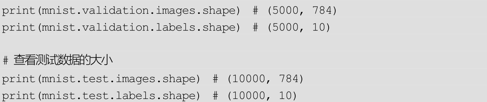
原始的MNIST数据集中包含了60000张训练图片和10000张测试图片。而在TensorFlow中，又将原先的60000张训练图片重新划分成了新的55000张训练图片和 5000 张验证图片。所以在 mnist 对象中，数据一共分为三部分：mnist.train 是训练图片数据，mnist.validation 是验证图片数据，mnist.test是测试图片数据，这正好对应了机器学习中的训练集、验证集和测试集。一般来说，会在训练集上训练模型，通过模型在验证集上的表现调整参数，最后通过测试集确定模型的性能。
1.1.2 实验：将MNIST数据集保存为图片
在原始的MNIST数据集中，每张图片都由一个28×28的矩阵表示，如图1-2所示。
图1-2 单张图片样本的矩阵表示
在TensorFlow中，变量mnist.train.images是训练样本，它的形状为（55000，784）。其中，5000是训练图像的个数，而784实际为单个样本的维数，即每张图片都由一个784维的向量表示（784正好等于28×28）。可以使用以下代码打印出第0张训练图片对应的向量表示：
为了加深对这种表示的理解，下面完成一个简单的程序：将 MNIST数据集读取出来，并保存为图片文件。对应的代码文件为save_pic.py。
运行此程序后，在MNIST_data/raw/文件夹下就可以看到MNIST数据集中训练集的前20张图片。读者可以修改上述程序打印更多的图片。
1.1.3 图像标签的独热表示
变量mnist.train.labels表示训练图像的标签，它的形状是（55000，10）。原始的图像标签是数字0～9，我们完全可以用一个数字来存储图像标签，但为什么这里每个训练标签是一个10维的向量呢？其实，这个10维的向量是原先类别号的独热（one-
hot）表示。
所谓独热表示，就是“一位有效编码”。我们用N维的向量来表示N个类别，每个类别占据独立的一位，任何时候独热表示中只有一位是1，其他都为0。读者可以直接从表1-3中理解独热表示。
表1-3 类别的原始表示和独热表示
运行下面的代码可以打印出第0张训练图片的标签：
代码运行的结果是[0.0.0.0.0.0.0.1.0.0.]，也就是说第0张图片对应的标签为数字“7”。
此外，我们可以打印出前 20 张图片的标签（对应程序 label.py），读者可以尝试与第 1.1.2 节中保存的图片对照，查看图像与图像的标签是否正确地对应上了。
至此，读者应当对变量mnist.train.images和mnist.train.labels很熟悉了。剩下的 mnist.validation.images、mnist.validation.labels、mnist.test.images、mnist.test.labels四个变量与它们非常类似，唯一的区别只是图像的个数不同，本章就不再做更详细的解释了。
1.2 利用TensorFlow识别MNIST
在第 1.1节中，我们已经对 MNIST数据集和 TensorFlow中 MNIST数据集的载入有了基本的了解。本节将真正以 TensorFlow 为工具，写一个手写体数字识别程序，使用的机器学习方法是Softmax回归。
1.2.1 Softmax回归
1.Softmax回归的原理
Softmax 回归是一个线性的多类分类模型，实际上它是直接从 Logistic回归模型转化而来的。区别在于 Logistic 回归模型为两类分类模型，而Softmax模型为多类分类模型。
在手写体识别问题中，一共有 10 个类别（0～9），我们希望对输入的图像计算它属于每个类别的概率。如属于 9 的概率为 70%，属于 1 的概率为10%等。最后模型预测的结果就是概率最大的那个类别。
先来了解什么是 Softmax函数。Softmax函数的主要功能是将各个类别的“打分”转化成合理的概率值。例如，一个样本可能属于三个类别：第一个类别的打分为a，第二个类别的打分为b，第三个类别的打分为c。打分越高代表属于这个类别的概率越高，但是打分本身不代表概率，因为打分的值可以是负数，也可以很大，但概率要求值必须在0～1，并且三类的概率加起来应该等于1。那么，如何将（a，b，c）转换成合理的概率值呢？方法就是使用Softmax 函数。例如，对（a，b，c）使用 Softmax 函数后，相应的值会变成
，也就是说，第一类的概率可以用 表示，第二类的概率可以用
表示，第三类的概率可以用 表示。显然，这三个数值都在0～1之间，并且加起来正好等于1，是合理的概率表示。
假设x是单个样本的特征，W、b是Softmax模型的参数。在MNIST数据集中，x就代表输入图片，它是一个784维的向量，而W是一个矩阵，它的形状为（784，10），b是一个10维的向量，10代表的是类别数。Softmax模型的第一步是通过下面的公式计算各个类别的Logit：
Logit=WT x+b
Logit同样是一个10维的向量，它实际上可以看成样本对应于各个类别的“打分”。接下来使用Softmax函数将它转换成各个类别的概率值：
y=Softmax(Logit)
Softmax模型输出的y代表各个类别的概率，还可以直接用下面的式子来表示整个Softmax模型：
y=Softmax(WT x+b)
2.Softmax回归在TensorFlow中的实现
本节对应的程序为softmax_regression.py，在该程序中，使用TensorFlow定义了一个 Softmax 模型，实现了 MNIST 数据集的分类。首先导入TensorFlow模块：
导入TensorFlow的语句一般写作：import tensorflow as tf。这是一种约定俗成的写法。请记住这条语句，它将在后面的每一章中重复出现。
接下来和之前一样，导入MNIST数据库：
下面的步骤是非常关键的几步，先来看代码：
这里定义了一些 占位符和变量（ Variable ） 。在 TensorFlow 中，无论是占位符还是变量，它们实际上都是“Tensor”。从 TensorFlow 的名字中，就可以看出 Tensor在整个系统中处于核心地位。TensorFlow中的Tensor并不是具体的数值，它只是一些我们“希望”TensorFlow系统计算的“节点”。
这里的占位符和变量是不同类型的Tensor。先来讲解占位符。占位符不依赖于其他的Tensor，它的值由用户自行传递给TensorFlow，通常用来存储样本数据和标签。如在这里定义了x=tf.placeholder（tf.float32，[None，784]），它是用来存储训练图片数据的占位符。它的形状为[None，784]，None 表示这一维的大小可以是任意的，也就是说可以传递任意张训练图片给这个占位符，每张图片用一个784维的向量表示。同样的，y_=tf.placeholder（tf.float32，[None，10]）也是一个占位符，它存储训练图片的实际标签。
再来看什么是变量。变量是指在计算过程中可以改变的值，每次计算后变量的值会被保存下来，通常用变量来存储模型的参数。如这里创建了两个变量：W=tf.Variable（tf.zeros（[784，10]））、b=tf.Variable（tf.zeros（[10]））。它们都是 Softmax 模型的参数。创建变量时通常需要指定某些初始值。这里 W的初始值是一个784×10的全零矩阵，b的初始值是一个10维的0向量。
除了变量和占位符之外，还创建了一个y=tf.nn.softmax（tf.matmul（x，W）+b）。这个y就是一个依赖x、W、b的Tensor。如果要求TensorFlow计算y的值，那么系统首先会获取x、W、b的值，再去计算y的值。
y实际上定义了一个Softmax回归模型，在此可以尝试写出y的形状。假设输入x的形状为（N，784），其中N表示输入的训练图像的数目。W的形状为（784，10），b的形状为（10，）[2]
。那么，Wx+b的形状是（N，10）。Softmax函数不改变结果的形状，所以得到y的形状为（N，10）。也就是说，y的每一行是一个10维的向量，表示模型预测的样本对应到各个类别的概率。
模型的输出是y，而实际的标签为y_，它们应当越相似越好。在Softmax回归模型中，通常使用“交叉熵”损失来衡量这种相似性。损失越小，模型的输出就和实际标签越接近，模型的预测也就越准确。
在TensorFlow中，这样定义交叉熵损失：
构造完损失之后，下面一步是如何优化损失，让损失减小。这里使用梯度下降法优化损失，定义为
TensorFlow 默认会对所有变量计算梯度。在这里只定义了两个变量 W和 b，因此程序将使用梯度下降法对 W、b 计算梯度并更新它们的值。tf.train.GradientDescentOptimizer（0.01）中的 0.01 是梯度下降优化器使用的学习率（Learning Rate）。
在优化前，必须要创建一个会话（Session），并在会话中对变量进行初始化操作：
会话是 TensorFlow 的又一个核心概念。前面提到 Tensor 是“希望”TensorFlow进行计算的结点。而会话就可以看成对这些结点进行计算的上下文。之前还提到过，变量是在计算过程中可以改变值的Tensor，同时变量的值会被保存下来。事实上，变量的值就是被保存在会话中的。在对变量进行操作前必须对变量进行初始化，实际上是在会话中保存变量的初始值。初始化所有变量的语句是tf.global_variables_initializer（）.run（）。
有了会话，就可以对变量W、b进行优化了，优化的程序如下：
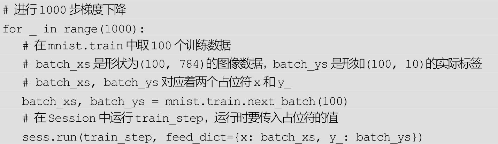
每次不使用全部训练数据，而是每次提取100个数据进行训练，共训练1000次。batch_xs，batch_ys分别是100个训练图像及其对应的标签。在训练时，需要把它们放入对应的占位符 x，y_中，对应的语句是 feed_dict={x：batch_xs，y_：batch_ys}。
在会话中，不需要系统计算占位符的值，而是直接把占位符的值传递给会话。与变量不同的是，占位符的值不会被保存，每次可以给占位符传递不同的值。
运行完梯度下降后，可以检测模型训练的结果，对应的代码如下：
模型预测y的形状是（N，10），而实际标签y_的形状是（N，10），其中N为输入模型的样本个数。tf.argmax（y，1）、tf.argmax（y_，1）的功能是取出数组中最大值的下标，可以用来将独热表示以及模型输出转换为数字标签。假设传入四个样本，它们的独热表示y_为（需要通过sess.run（y_）才能获取此Tensor的值，下同）：
tf.argmax（y_，1）就是：
也就是说，取出每一行最大值对应的下标位置，它们是输入样本的实际标签。假设此时模型的预测输出y为：
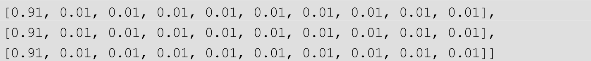
tf.argmax（y_，1）就是：
得到了预测的标签和实际标签，接下来通过 tf.equal 函数来比较它们是否相等，并将结果保存到 correct_prediction 中。在上述例子中，correct_prediction就是：
即第一个样本和最后一个样本预测是正确的，另外两个样本预测错误。可以用tf.cast（correct_prediction，tf.float32）将比较值转换成float32型的变量，此时 True 会被转换成 1，False 会被转换成 0。在上述例子中，tf.cast（correct_prediction，tf.float32）的结果为：
最后，用tf.reduce_mean可以计算数组中的所有元素的平均值，相当于得到了模型的预测准确率，如[1.，0.，0.，1.]的平均值为0.5，即50%的分类准确率。
在程序 softmax_regression.py 中，传入占位符的值是 feed_dict={x：mnist.test.images，y_：mnist.test.labels}。也就是说，使用全体测试样本进行测试。测试图片一共有10000张，运行的结果为0.9185，即91.85%的准确率。因为Softmax回归是一个比较简单的模型，这里预测的准确率并不高，在下一节将学习如何使用卷积神经网络将预测的准确率提高到99%。
1.2.2 两层卷积网络分类
本节对应的程序文件是convolutional.py，将建立一个卷积神经网络，它可以把MNIST手写字符的识别准确率提高到99%，读者可能需要一些卷积神经网络的基础知识才能更好地理解本节的内容。
程序的开头依旧是导入TensorFlow：
接下来载入MNIST数据，并建立占位符。占位符x的含义为训练图像，y_为对应训练图像的标签，这与上文是一样的。
由于使用的是卷积网络对图像进行分类，所以不能再使用784维的向量表示输入的x，而是将其还原为28×28的图片形式。[-1，28，28，1]中的-1表示形状第一维的大小是根据x自动确定的。
x_image就是输入的训练图像，接下来，我们对训练图像进行卷积计算，第一层卷积的代码如下：
先定义了四个函数，函数weight_variable可以返回一个给定形状的变量并自动以截断正态分布初始化，bias_variabale同样返回一个给定形状的变量，初始化时所有值是 0.1，可分别用这两个函数创建卷积的核（kernel）与偏置（bias）。h_conv1=tf.nn.relu（conv2d（x_image，W_conv1）+b_conv1）是真正进行卷积计算，卷积计算后选用 ReLU 作为激活函数。h_pool1=max_pool_2x2（h_conv1）是调用函数max_pool_2x2进行一次池化操作。卷积、激活函数、池化，可以说是一个卷积层的“标配”，通常一个卷积层都会包含这三个步骤，有时也会去掉最后的池化操作。
对第一次卷积操作后产生的h_pool1再做一次卷积计算，使用的代码与上面类似。
两层卷积层之后是全连接层：
在全连接层中加入了 Dropout，它是防止神经网络过拟合的一种手段。在每一步训练时，以一定概率“去掉”网络中的某些连接，但这种去除不是永久性的，只是在当前步骤中去除，并且每一步去除的连接都是随机选择的。在这个程序中，选择的 Dropout 概率是 0.5，也就是说训练时每一个连接都有50%的概率被去除。在测试时保留所有连接。
最后，再加入一层全连接，把上一步得到的h_fc1_drop转换为10个类别的打分。
y_conv相当于 Softmax模型中的 Logit，当然可以使用 Softmax函数将其转换为10个类别的概率，再定义交叉熵损失。但其实TensorFlow提供了一个更直接的 tf.nn.softmax_cross_entropy_with_logits 函数，它可以直接对Logit定义交叉熵损失，写法为
定义测试的准确率（和第1.2.1节类似）：
训练过程同样与第 1.2.1 节类似，不同点在于这次会额外在验证集上计算模型的准确度并输出，方便监控训练的进度，也可以据此来调整模型的参数。

训练结束后，打印在全体测试集上的准确率：
得到的准确率结果应该在99%左右。与Softmax回归模型相比，使用两层卷积的神经网络模型借助了卷积的威力，准确率有非常大的提升。本节的程序同第1.2.1节在流程上非常相似，都是先读入MNIST数据集，再定义训练数据的占位符（x和 y_），以 x为输入定义模型，最后定义损失，进行训练。
1.3 总结
本章中首先介绍了MNIST数据集，以及如何使用TensorFlow把它读到内存中。接着通过一个简单的 Softmax 回归模型例子，学习如何使用TensorFlow建立简单的图像识别模型。虽然Softmax回归模型只能达到92%左右的准确率，但它让我们了解了使用 TensorFlow 处理问题的基本流程。最后，我们使用TensorFlow建立了有两层卷积层的神经网络，将MNIST的识别准确率提高到99%。
拓展阅读
本章介绍的MNIST数据集经常被用来检验机器学习模型的性能，在它的官网（地址：http：//yann.lecun.com/exdb/mnist/）中，可以找到多达 68 种模型在该数据集上的准确率数据，包括相应的论文出处。这些模型包括线性分类器、K 近邻方法、普通的神经网络、卷积神经网络等。
本章的两个 MNIST 程序实际上来自于 TensorFlow 官方的两个新手教程，地址为 https：//www.tensorflow.org/get_started/mnist/beginners和 https：//www.tensorflow.org/get_started/mnist/pros。读者可以将本书的内容和官方的教程对照起来进行阅读。这两个新手教程的中文版地址为http：//www.tensorfly.cn/tfdoc/tutorials/mnist_beginners.html和http：//www.tensorfly.cn/tfdoc/tutorials/mnist_pros.html。
本章简要介绍了TensorFlow的tf.Tensor类。tf.Tensor类是TensorFlow的核心类，常用的占位符（tf.placeholder）、变量（tf.Variable）都可以看作特殊的 Tensor。读者可以参阅 https：//www.tensorflow.org/programmers_guide/tensors来更深入地学习它的原理。
常用tf.Variable类来存储模型的参数，读者可以参阅https：//www.tensorflow.org/programmers_guide/variables详细了解它的运行机制，文档的中文版地址为http：//www.tensorfly.cn/tfdoc/how_tos/variables.html。
只有通过会话（Session）才能计算出tf.Tensor的值。强烈建议读者在学习完tf.Tensor和tf.Variable后，阅读https：//www.tensorflow.org/programmers_guide/graphs 中的内容，该文档描述了TensorFlow中计算图和会话的基本运行原理，对理解TensorFlow的底层原理有很大帮助。
[1]
若因网络问题无法正常下载，可以前往MNIST官网http：//yann.lecun.com/exdb/mnist/使用下载工具下载上述4个文件，并将它们复制到MNIST_data/文件夹中。
[2]
形状（784.10）表示一个784行10列的矩阵，形状（10，）表示一个10维的列向量，下同。
第2章 CIFAR-10与ImageNet图像识别
本章的主要任务还是图像识别，使用的数据集是 CIFAR-10——这是一个更接近普适物体的彩色图像数据集。主要通过CIFAR-10学习两方面的内容：一是TensorFlow中的数据读取原理，二是深度学习中数据增强的原理。最后还会介绍更加通用且复杂的ImageNet数据集和相应的图像识别模型。
2.1 CIFAR-10数据集
2.1.1 CIFAR-10数据集简介
CIFAR-10是由Hinton的学生Alex Krizhevsky和Ilya Sutskever整理的一个用于识别普适物体的小型数据集。它一共包含10个类别的RGB彩色图片：飞机（airplane）、汽车（automobile）、鸟类（bird）、猫（cat）、鹿（deer）、狗（dog）、蛙类（frog）、马（horse）、船（ship）和卡车（truck）。图片的尺寸为 32×32，数据集中一共有 50000 张训练图片和 10000 张测试图片。CIFAR-10的图片样例如图2-1所示。
图2-1 CIFAR-10数据集的图片样例
与MNIST数据集相比，CIFAR-10具有以下不同点：
●CIFAR-10是3通道的彩色RGB图像，而MNIST是灰度图像。
●CIFAR-10 的图片尺寸为 32×32，而 MNIST 的图片尺寸为 28×28，比MNIST稍大。
●相比于手写字符，CIFAR-10 含有的是现实世界中真实的物体，不仅噪声很大，而且物体的比例、特征都不尽相同，这为识别带来很大困难。直接的线性模型如Softmax在CIFAR-10上表现得很差。
本章将以CIFAR-10为例，介绍深度图像识别的基本方法。本章代码中的一部分来自于TensorFlow的官方示例，如表2-1所示。
表2-1 TensorFlow官方示例的CIFAR-10代码文件
除了以上官方提供的文件外，本书还额外编写了三个文件，如表2-2所示。
表2-2 本书中额外提供的三个文件

2.1.2 下载CIFAR-10数据
运行cifar10_download.py程序就可以下载CIFAR-10数据集的全部数据：
这段程序会把 CIFAR-10 数据集下载到目录 cifar10_data/中。在 cifar10模块中，预先使用语句 tf.app.flags.DEFINE_string（′data_dir′，′/tmp/cifar10_data′，″″″Path to the CIFAR-10 data directory.″″″）定义了默认的data_dir 是/tmp/cifar10_data，也就是把数据集下载到目录/tmp/cifar10_data中。本书做了简单修改，即使用FLAGS=tf.app.flags.FLAGS、FLAGS.data_dir=′cifar10_data/′两条语句把待下载目录修改为cifar10_data/。
cifar10.maybe_download_and_extract（）函数会自动检测数据集有没有下载，如果下载过则直接跳过，不做操作，如果之前没有下载就会自动下载数据集并解压缩。
等待一段时间后，系统会输出：“Successfully downloaded cifar-10-binary.tar.gz 170052171 bytes.”。这表明下载成功了。此时打开文件夹cifar10_data/，会看到一个cifar-10-binary.tar.gz文件，是数据集原始的压缩包；还有一个cifar-10-batches-
bin文件夹，是压缩包解压后的结果。
打开 cifar10_data/cifar-10-batches-bin/文件夹，一共有 8 个文件，是CIFAR-10的全部数据，文件名及用途如表2-3所示。
表2-3 CIFAR-10数据集的数据文件名及用途
2.1.3 TensorFlow的数据读取机制
在讲解如何用TensorFlow读取CIFAR-10数据之前，作为基础，先来简单介绍TensorFlow中数据读取的基本机制。
首先需要思考的一个问题是，什么是数据读取？以图像数据为例，读取数据的过程可以用图2-2来表示。
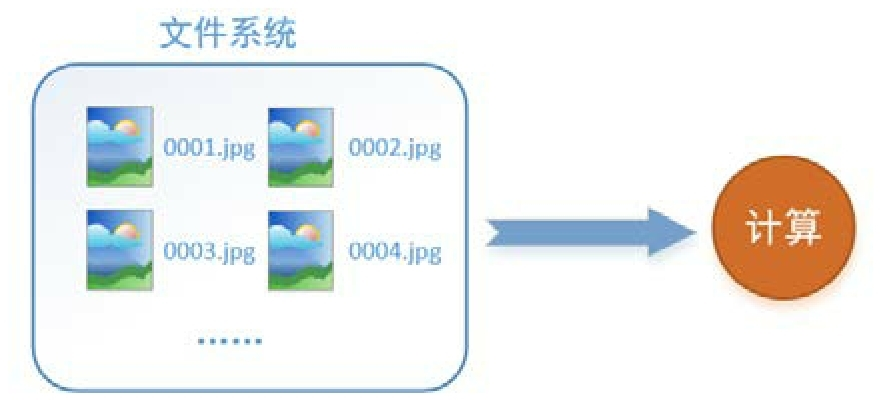
图2-2 图像的数据读取过程
假设硬盘中有一个图片数据集0001.jpg、0002.jpg、0003.jpg……只需要把它们读取到内存中，然后提供给GPU或是CPU进行计算就可以了。这听起来很容易，但事实远没有那么简单。
事实上，必须先读入数据后才能进行计算，假设读入用时 0.1s ，计算用时 0.9s ，那么就意味着每过 1s ， GPU
都会有 0.1s 无事可做，这大大降低了运算的效率。
如何解决这个问题？方法就是将读入数据和计算分别放在两个线程中，将数据读入内存的一个队列，如图2-3所示。
图2-3 改进的读取方式：先将图片读取到内存队列中
读取线程源源不断地将文件系统中的图片读入一个内存的队列中，而负责计算的是另一个线程，计算需要数据时，直接从内存队列中取就可以了。这样可以解决GPU因为I/O而空闲的问题！
而在 TensorFlow 中，为了方便管理，在内存队列前又添加了一层所谓的“文件名队列”。
为什么要添加这一层文件名队列呢？首先需要了解机器学习中的一个概念：epoch。对于一个数据集来讲，运行一个 epoch 就是将这个数据集中的图片全部计算一遍。如果一个数据集中有三张图片 A.jpg、B.jpg、C.jpg，那么运行一个 epoch 就是指对 A、B、C 三张图片都计算一遍。两个 epoch就是指先对 A、B、C 各计算一遍，然后再全部计算一遍，也就是说每张图片都计算了两遍。
TensorFlow 使用“文件名队列+内存队列”双队列的形式读入文件，可以很好地管理 epoch。下面用图片的形式来说明这个机制的运行方式。如图2-4所示，还是以数据集A.jpg、B.jpg、C.jpg为例，假定要运行一个epoch，那么就在文件名队列中把A、B、C各放入一次，并在之后标注队列结束。
图2-4 TensorFlow中的文件名队列和内存队列
程序运行后，内存队列首先读入A（此时A从文件名队列中出队），如图2-5所示。
图2-5 读入A
再依次读入B和C，如图2-6所示。
图2-6 读入B和C
此时，如果再尝试读入，由于系统检测到了“结束”，就会自动抛出一个异常（OutOfRange）。外部捕捉到这个异常后就可以结束程序了。这就是TensorFlow中读取数据的基本机制。如果要运行2个epoch而不是1个epoch，则只要在文件名队列中将A、B、C依次放入两次再标记结束就可以了。
如何在TensorFlow中创建上述的两个队列呢？
对于文件名队列，使用 tf.train.string_input_producer 函数。这个函数需要传入一个文件名list，系统会自动将它转为一个文件名队列。
此外，tf.train.string_input_producer 还有两个重要的参数：一个是num_epochs，它就是上文中提到的epoch数；另外一个是shuffle，shuffle是指在一个 epoch 内文件的顺序是否被打乱。若设置 shuffle=False，如图 2-7所示，每个 epoch 内，数据仍然按照 A、B、C的顺序进入文件名队列，这个顺序不会改变。
图2-7 shuffle=False时的数据读取顺序
如果设置 shuffle=True，那么在一个 epoch 内，数据的前后顺序就会被打乱，如图2-8所示。
图2-8 shuffle=True时的数据读取顺序
在 TensorFlow 中，内存队列不需要自己建立，只需要使用 reader 对象从文件名队列中读取数据就可以了，具体实现可以参考下面的实战代码。
除了 tf.train.string_input_producer 外，还要额外介绍一个函数：tf.train.start_queue_runners。初学者会经常在代码中看到这个函数，但往往很难理解它的用处。有了上面的铺垫后，就可以解释这个函数的作用了。
在使用 tf.train.string_input_producer 创建文件名队列后，整个系统其实还处于“停滞状态”，也就是说，文件名并没有真正被加入队列中，如图2-9所示。如果此时开始计算，因为内存队列中什么也没有，计算单元就会一直等待，导致整个系统被阻塞。
图2-9 未调用tf.train.start_queue_runners时队列处于停滞状态
而使用tf.train.start_queue_runners之后，才会启动填充队列的线程，这时系统就不再“停滞”。此后，计算单元就可以拿到数据并进行计算，整个程序也就运行起来了，这就是函数tf.train.start_queue_runners的用处。
下面用一个具体的例子体会 TensorFlow 中的数据读取（对应的程序为test.py）。如图 2-10 所示，假设在当前文件夹中已经有 A.jpg、B.jpg、C.jpg三张图片，希望读取这三张图片的 5 个 epoch 并且把读取的结果重新存到read文件夹中。
图2-10 当前文件夹中包含的文件
代码如下（对应的文件为test.py）：
这里使用filename_queue=tf.train.string_input_producer（filename，shuffle=False，num_epochs=5）建立了一个会运行5个epoch的文件名队列。并使用reader读取，reader每次读取一张图片并保存。
运行代码后（程序最后会抛出一个 OutOfRangeError 异常，不必担心，这就是epoch跑完，队列关闭的标志），得到read文件夹中的图片，正好是按顺序的5个epoch，如图2-11所示。
如果设置 filename_queue=tf.train.string_input_producer（filename，shuffle=False，num_epochs=5）中的shuffle=True，那么在每个epoch内图像会被打乱，如图2-12所示。
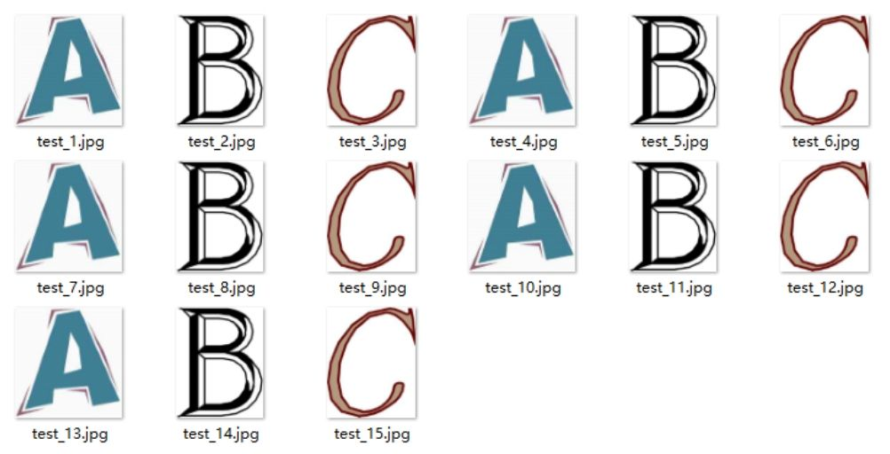
图2-11 shuffle=False时读取出的5个epoch
图2-12 shuffle=True时读取出的5个epoch
这里只是用三张图片举例，实际应用中一个数据集肯定不止 3 张图片，不过涉及的原理都是共通的。
2.1.4 实验：将CIFAR-10数据集保存为图片形式
介绍了TensorFlow的数据读取的基本原理，再来看如何读取CIFAR-10数据。在CIFAR-10数据集中，文件data_batch_1.bin、data_batch_2.bin、……、data_batch_5.bin和test_batch.bin中各有10000个样本。一个样本由3073个字节组成，第一个字节为标签（label），剩下3072个字节为图像数据[1]
。如下所示：
样本和样本之间没有多余的字节分割，因此这几个二进制文件的大小都是30730000字节。
如何用TensorFlow读取CIFAR-10数据呢？步骤与第2.1.3节类似：
●第一步，用tf.train.string_input_producer建立队列。
●第二步，通过reader.read读数据。在第2.1.3节中，一个文件就是一张图片，因此用的reader是tf.WholeFileReader（）。CIFAR-10数据是以固定字节存在文件中的，一个文件中含有多个样本，因此不能使用tf.WholeFileReader（），而是用tf.FixedLengthRecordReader（）。
●第三步，调用tf.train.start_queue_runners。
●最后，通过sess.run（）取出图片结果。
遵循上面的步骤，本节会做一个实验：将CIFAR-10数据集中的图片读取出来，并保存为.jpg 格式。对应的程序为 cifar10_extract.py。读者现在就可以在这个代码里查找，看步骤中的 tf.train.string_input_producer、tf.FixedLengthRecordReader（）、tf.train.start_queue_runners、sess.run（）都在什么地方。
按照程序的执行顺序来看：

inputs_origin是一个函数。这个函数中包含了前两个步骤，tf.train.string_input_producer和使用reader。函数的返回值reshaped_image是一个Tensor，对应一张训练图像。下面要做的并不是直接运行sess.run（reshaped_image），而是使用 threads=tf.train.start_queue_runners（sess=sess）。只有调用过tf.train.start_queue_runners后，才会让系统中的所有队列真正地“运行”，开始从文件中读数据。如果不调用这条语句，系统将会一直等待。
最后用sess.run（reshaped_image）取出训练图片并保存。此程序一共在文件夹cifar10_data/raw/中保存了30张图片。读者可以打开该文件夹，看到原始的CIFAR-10训练图片，如图2-13所示。
图2-13 cifar10_data/raw/目录下保存的CIFAR-10训练图片
再回过头来看inputs_origin函数：
tf.train.string_input_producer（filenames）创建了一个文件名队列，其中filenames是一个列表，包含从data_batch_1.bin到data_batch_5.bin一共5个文件名。这正好对应了 CIFAR-10 的训练集。cifar10_input.read_cifar10
（filename_queue）对应“使用reader”的步骤。为此需要查看cifar10_input.py中的read_cifar10函数，其中关键的代码如下：
语句 tf.FixedLengthRecordReader（record_bytes=record_bytes）创建了一个reader，它每次在文件中读取 record_bytes 字节的数据，直到文件结束。结合代码，record_bytes就等于1+32323，即3073，正好对应CIFAR-10中一个样本的字节长度。使用 reader.read（filename_queue）后，reader 从之前建立好的文件名队列中读取数据（以Tensor的形式）。简单处理结果后由函数返回。至此，读者应当对CIFAR-10数据的读取流程及TensorFlow的读取机制相当熟悉了。
2.2 利用TensorFlow训练CIFAR-10识别模型
在第2.1节中，读者已经对CIFAR-10数据集和TensorFlow中CIFAR-10数据集的读取有了基本的了解。本节将以TensorFlow为工具，训练CIFAR-10的图像识别模型。
2.2.1 数据增强
1.数据增强的原理
深度学习通常会要求拥有充足数量的训练样本。一般来说，数据的总量越多，训练得到的模型的效果就会越好。
在图像任务中，通常会观察到这样一种现象：对输入的图像进行一些简单的平移、缩放、颜色变换，并不会影响图像的类别。图 2-14 所示为翻转了位置的汽车图像，并适当降低了对比度和亮度，得到的图像当然还是汽车。 它们都可以被用作是汽车的训练样本。
对于图像类型的训练数据，所谓的数据增强（Data Augmentation）方法是指利用平移、缩放、颜色等变换，人工增大训练集样本的个数，从而获得更充足的训练数据，使模型训练的效果更好。

图2-14 图像数据增强的示例
常用的图像数据增强的方法如下。
●平移：将图像在一定尺度范围内平移。
●旋转：将图像在一定角度范围内旋转。
●翻转：水平翻转或上下翻转图像。
●裁剪：在原有图像上裁剪出一块。
●缩放：将图像在一定尺度内放大或缩小。
●颜色变换：对图像的RGB颜色空间进行一些变换。
●噪声扰动：给图像加入一些人工生成的噪声。
使用数据增强方法的前提是， 这些数据增强方法不会改变图像的原有标签。
例如在MNIST数据集中，如果使用数据增强，就不能使用旋转180°的方法，因为标签为“6”的数字在旋转180°后会变成“9”。
2.TensorFlow中数据增强的实现
训练CIFAR-10识别模型用到了数据增强来提高模型的性能。实验证明，使用数据增强可以大大提高模型的泛化能力，并且能够预防过拟合。
实现数据增强的代码在cifar10_input.py的distorted_inputs（）函数中，几行代码如下：
原始的训练图片是reshaped_image。最后会得到一个数据增强后的训练样本distorted_image。从reshaped_image到distorted_image的处理步骤如下：
●第一步是对reshaped_image进行随机裁剪。原始的CIFAR-10图像的尺寸是 32×32。随机裁剪出 24×24 的小块进行训练。因为小块可以取在图像的任何位置，所以仅此一步就可以大大增加训练集的样本数目。
●第二步是对裁剪后的小块进行水平翻转。每张图片有50%的概率被水平翻转，还有50%的概率保持不变。
●最后对得到的图片进行亮度和对比度的随机改变。
训练时，直接使用distorted_image进行训练即可。
2.2.2 CIFAR-10识别模型
与MNIST识别模型一样，得到数据增强后的图像distorted_image后，需要建立一个模型将图像识别出来。建立模型的代码在 cifar10.py 文件的inference（）函数中。这个函数的代码如下：
模型的代码虽然比较复杂，但本质是不变的，与第 1.2.2 节中的手写体识别模型类似，都是输入图像，输入图像对应到各个类别的 Logit。这里使用了两层卷积层，还在卷积层后面额外加了三层全连接层。
2.2.3 训练模型
用下列命令就可以训练模型：
--data_dir cifar10_data/的含义是指定 CIFAR-10 数据的保存位置。—train_dir cifar10_train/的作用是另外指定一个训练文件夹。训练文件夹的作用是保存模型的参数和训练时的日志信息。
训练模型时，屏幕上会显示日志信息，如：
日志信息告诉我们当前的时间和已经训练的步数，还会显示当前的损失是多少（如 loss=3.98）。理想的损失应该是一直下降的。日志里最后括号里的信息表示训练的速度。这里的日志信息是在 GPU 下训练时输出的，如果读者使用CPU进行训练，那么训练速度会比这里慢。
2.2.4 在TensorFlow中查看训练进度
在训练的时候，常常想知道损失的变化，以及各层的训练状况。TensorFlow提供了一个可视化工具TensorBoard。使用TensorBoard可以非常方便地观察损失的变化曲线，还可以观察训练速度等其他日志信息，达到实时监控训练过程的目的。
要使用 TensorBoard，请打开另一个命令行窗口，切换到当前目录，并输入以下命令：
TensorBoard 默认在 6006 端口运行。打开浏览器，输入地址http：//127.0.0.1：6006（或 http：//localhost：6006），就可以看到 TensorBoard 的主页面，如图2-15所示。
图2-15 TensorBoard的主页面
单击total_loss_1，就可以看到loss的变化曲线，变化曲线会根据时间实时变动，非常便于实时监测。还可以滑动左侧工具栏中的“Smoothing”滑条，它的功能是平滑损失曲线，方便更好地观察损失曲线的整体变化情况。
单击 learning_rate，可以监控学习率的变化。观察学习率时，应当把“Smoothing”滑条拖曳至 0，因为学习率的值是确定的，并不存在噪声，因此也不需要进行平滑处理。
图2-16展示了训练到约60万步时（此时运行训练程序终端的代码应该打出类似step 600000的日志），损失和学习率的变化情况。
从图中可以看出，在深度模型的训练中，通常先使用比较大的学习率（如0.1），这样可以帮助模型在初期以比较快的速度收敛。之后再逐步降低学习率（如降低到 0.01 或 0.001）。在 CIFAR-10 识别模型的训练中，学习率从0.1开始递减，依次是0.01，0.001，0.0001。每一次递减都可以让损失更进一步地下降。
图2-16 训练到约60万步时损失和学习率的变化情况
除了上述功能外，在TensorBoard中还可以监控模型的训练速度。展开global_step 选项卡，对应的图形为每秒训练步数的情况。如图 2-17 所示，每秒大概训练 8～11 步，变化不是特别大。在实际训练过程中，如果训练速度发生较大的变化，或者出现训练速度随程序运行而越来越慢的情形，就可能是程序中出现了错误，需要进行检查。
图2-17 训练速度的变化情况
最后，简要介绍TensorBoard显示训练信息的原理。在指定的训练文件夹 cifar10_train 下，可以找到一个以 events.out 开头的文件。实际上，在训练模型时，程序会源源不断地将日志信息写入这个文件中。运行TensorBoard时只要指定训练文件夹，TensorBoard 会自动搜索到这个文件，并在网页中显示相应的信息。
2.2.5 测试模型效果
在训练文件夹cifar10_train/下，还会发现一个checkpoint文件和一些以model.ckpt 开头的文件。TensorFlow 会将训练得到的模型参数保存到“checkpoint”里。在训练程序中，已经设定好每隔10min保存一次checkpoint，并且只保留最新的5个checkpoint，保存时如果已经有了5个checkpoint就会删除最旧的那个。
用记事本打开checkpoint文件，会发现类似如下的内容：
其中，model_checkpoint_path表示最新的模型是model.ckpt-601652（由于训练步数的不同，读者看到的数字可能和本书的有所不同）。601652表示这是第601652步的模型。后面的5个all_model_checkpoint_paths分别表示所有存储下来的5个模型和它们的步数。
使用cifar10_eval.py可以检测模型在CIFAR-10测试数据集上的准确性。
在命令行中运行代码：
--data_dir cifar10_data/表示 CIFAR-10 数据集的存储位置。—checkpoint_dir cifar10_train/则表示程序模型保存在cifar10_train/文件夹下。这里还用—eval_dir cifar10_eval/指定了一个保存测试信息的文件夹，测试时获得的结果（如准确率）会保存在cifar10_eval/中。
测试时要注意使用的是CPU还是GPU，总的来说有以下三种情况。
第一种情况是训练和测试都使用GPU。此时要注意不能在同一个GPU上运行命令，最好用另一个GPU进行测试，否则可能会由于显存不足，导致程序运行失败。使用另一张显卡的方法是设置不同的CUDA_VISIBLE_DEVICES环境变量。比如在训练时，先运行export CUDA_VISIBLE_DEVICES=0，再执行训练代码，这样训练程序只会使用 0号GPU。测试时，先运行export CUDA_VISIBLE_DEVICES=1，这样测试程序就会使用1号GPU。
第二种情况是使用GPU训练，用CPU测试。这种情况在测试时可以在命令行运行：export CUDA_VISIBLE_DEVICES=“”。这样测试程序将只会使用CPU进行测试，不会影响训练的GPU。
第三种情况是使用CPU进行训练和测试。此时如果系统没有设置GPU，那么直接运行相应的代码即可。
运行测试代码后，程序会立刻检测在最新checkpoint上的准确率。此外，它还会每隔一段时间自动执行一次，获取新保存的模型的准确率，并把所有信息写入文件夹cifar10_eval/中。
使用TensorBoard可以观察准确率随训练步数的变化情况。运行：
TensorBoard默认在6006端口运行，但这里使用—port 6007可以使它在6007端口运行。这是为了防止和之前运行的监控训练状况的TensorBoard发生端口冲突。打开http：//127.0.0.1：6007，展开“Precision@1”选项卡，就可以看到准确率随训练步数变化的情况，如图2-18所示。
图2-18 模型的准确率随训练步数的变化情况
实际上到6万步左右时，模型就有了86%的准确率，到10万步时的准确率为86.3%，到15万步后的准确率基本稳定在86.6%左右。
2.3 ImageNet图像识别模型
2.3.1 ImageNet数据集简介
ImageNet 数据集是为了促进计算机图像识别技术的发展而设立的一个大型图像数据集。2016年ImageNet数据集中已经有超过千万张图片，每一张图片都被手工标定好类别。ImageNet数据集中的图片涵盖了大部分生活中会看到的图片类别，如图2-19所示。
相比CIFAR-10，ImageNet数据集图片数量更多，分辨率更高，含有的类别更多（有上千个图像类别），图片中含有更多的无关噪声和变化，因此识别难度比CIFAR-10高得多。从2010年起，每年ImageNet的项目组织都会举办一场 ImageNet 大规模视觉识别竞赛（ImageNet Large Scale Visual Recognition Challenge，ILSVRC）。在 ILSVRC 竞赛中诞生了许多成功的图像识别方法，其中很多是深度学习方法，它们在赛后又会得到进一步发展与应用。可以说，ImageNet 数据集和 ILSVRC 竞赛大大促进了计算机视觉技术，乃至深度学习的发展，在深度学习的浪潮中占有举足轻重的地位。
图2-19 ImageNet数据集的图像示例
2.3.2 历代ImageNet图像识别模型
2012年，加拿大多伦多大学的教授Hinton与其学生Alex参赛，使用深度学习处理图像识别问题，将错误率从原来的 25%降到了 16%。图 2-20展示了他们使用的网络结构。
图2-20 AlexNet的结构示意图
这个网络由上下两部分组成。输入的图像会经过 5 层卷积层（依次是11×11卷积、5×5卷积，3个3×3卷积），有些卷积层后面还使用了池化层。5层卷积之后连接了3层全连接层。由于该网络是由Alex设计完成的，所以现在一般将此网络简称为AlexNet。
AlexNet的成功主要得益于以下几个方面：
●训练了较深层的卷积神经网络。
●ImageNet 提供了大量训练样本，此外还使用了数据增强（参考第 2.2.1节）技术，因此神经网络的过拟合现象不严重。
●使用了dropout等技术，进一步降低了过拟合。
AlexNet的成功引起了研究人员的兴趣，2014年，ILSVRC竞赛上又出现了两个引人关注的模型：VGGNet和GoogLeNet。相比AlexNet 16%的错误率，VGGNet把错误率降到了7%，GoogLeNet的错误率则是6%。
先来介绍VGGNet。在原始的论文中，作者共训练了6个网络，分别命名为 VGG-A、VGG-A-LRN、VGG-B、VGG-C、VGG-D 和 VGG-E，如图2-21所示。
图2-21 VGGNet的结构示意图
简单解释表中符号表示的含义。conv3-512表示使用了3×3的卷积，卷积之后的通道数为512。而conv3-256表示使用了3×3的卷积，通道数为256，依此类推。在实际应用中，由于 VGG-D 和 VGG-E 效果最好，所以一般只会用到这两个网络。由于VGG-D有16层，VGG-E有19层，所以它们又被分别简称为 VGG16与 VGG19模型。VGG19比 VGG16准确率更高，但相应地计算量更大。VGG16的结构还可以用图2-22简化表示。
图2-22 VGG16的结构示意图
GoogLeNet由Google公司提出，性能与VGGNet相近。GoogLeNet的创新在于它提出了一种“Inception”结构，它把原来的单个结点又拆成一个神经网络，形成了“网中网”（Network in Network）。Inception单元的结构如图2-23所示。
图2-23 Inception单元的结构
整个 GoogLeNet就是由许多这样的 Inception单元组成的，它的构造比较复杂，但同样是深层的卷积神经网络，其结构示意图如图2-24所示。
图2-24 GoogLeNet的结构示意图 1
值得一提的是，GoogLeNet又被称为Inception V1模型，Google又对该模型做了后续研究，相继提出了Inception V2、Inception V3、Inception V4模型，每一代模型的性能都有提升。
2015年，一种名为深度残差网络（Deep Residual Network，ResNet）的模型赢得了ILSVRC图像识别竞赛的冠军。深度残差网络比以往的任何模型都要深，它可以训练 100 层，甚至 1000 层。深度残差网络把错误率从 6%（GoogLeNet）、7%（VGGNet）降到了3.57%，这也是在ImageNet数据集上，机器的表现首次优于人类。
深度残差模型的优势在于使用了跳过连接，让神经网络从拟合F（x）变成拟合残差F（x）-x。残差比原始函数更容易学习，也更适合深层模型迭代。因此，即使训练非常深的神经网络也不会发生非常严重的过拟合。残差网络使用的基本结构如图 2-25 所示，实际的残差网络就是由大量这样的基本单元组成的。
图2-25 残差网络的基本单元
至此，本节介绍了在 ImageNet 数据集上最重要的几个深度学习模型：AlexNet、VGGNet、GoogLeNet和ResNet。读者没有必要记忆模型的每一个细节。在后面的章节中，大多数时候会直接把这些模型当作整体工具来使用。
2.4 总结
在本章中，首先介绍了 CIFAR-10 数据集。借助 CIFAR-10 介绍了TensorFlow 读写数据的原理、数据增强的原理等，还使用 TensorFlow 训练了一个CIFAR-10识别模型，取得了较高的识别准确率。最后介绍了ImageNet数据集及在该数据集上比较重要的几类模型。尽管 ImageNet 数据集使用的模型比较复杂，但读者可以类比CIFAR-10数据集使用的方法进行理解，它们的原理是共通的。
拓展阅读
关于 CIFAR-10 数据集，读者可以访问它的官方网站 https：//www.cs.toronto.edu/～kriz/cifar.html 了解更多细节。此外，网站ttp：//rodrigob.github.io/are_we_there_yet/build/classification_datasets_esults.html＃43494641522d3130 中收集了在 CIFAR-10 数据集上表现最好的若干模型，包括这些模型对应的论文。
mageNet数据集上的表现较好的几个著名的模型是深度学习的基石，值得仔细研读。建议先阅读下面几篇论文：ImageNet Classification with Deep Convolutional Neural Networks（AlexNet 的提出）、Very Deep Convolutional Networks for Large-Scale Image Recognition VGGNet）、Going Deeper with Convolutions（GoogLeNet）、Deep Residual Learning for Image Recognition（ResNet）。
在第 2.1.3 节中，简要介绍了 TensorFlow 的一种数据读入机制。事实上，目前在TensorFlow中读入数据大致有三种方法：（1）用占位符（即 placeholder）读入，这种方法比较简单；（2）用队列的形式建立文件到Tensor的映射；（3）用Dataset API读入数据，Dataset API是 TensorFlow 1.3 版本新引入的一种读取数据的机制，可以参考这篇中文教程：https：//zhuanlan.zhihu.com/p/30751039。
[1]
格式介绍参考官方文档，地址为http：//www.cs.toronto.edu/～kriz/cifar.html。
第3章 打造自己的图像识别模型
本章关注的重点是如何使用 TensorFlow 在自己的图像数据上训练深度学习模型，主要涉及的方法是对已经预训练好的 ImageNet 模型进行微调（Fine-tune）。本章将会从四个方面讲解：数据准备、训练模型、在测试集上验证准确率、导出模型并对单张图片分类。
3.1 微调的原理
在自己的数据集上训练一个新的深度学习模型时，一般采取在预训练ImageNet上进行微调的方法。什么是微调？这里以VGG16为例进行讲解。
如图 2-22 所示，VGG16 的结构为卷积+全连接层。卷积层分为 5 个部分共13层，即图中的conv 1～conv 5。还有3层是全连接层，即图中的fc6、fc7、fc8。卷积层加上全连接层合起来一共为16层，因此它被称为VGG16。如果要将 VGG16 的结构用于一个新的数据集，首先要去掉 fc8 这一层。原因是fc8层的输入是fc7层的特征，输出是1000类的概率，这1000类正好对应了ImageNet模型中的1000个类别。在自己的数据中，类别数一般不是1000类，因此fc8层的结构在此时是不适用的，必须将fc8层去掉，重新采用符合数据集类别数的全连接层，作为新的 fc8。比如数据集为 5类，那么新的fc8的输出也应当是5类。
此外，在训练的时候，网络的参数的初始值并不是随机化生成的，而是采用VGG16在ImageNet上已经训练好的参数作为训练的初始值。这样做的原因在于，在ImageNet数据集上训练过的VGG16中的参数已经包含了大量有用的卷积过滤器，与其从零开始初始化VGG16的所有参数，不如使用已经训练好的参数当作训练的起点。这样做不仅可以节约大量训练时间，而且有助于分类器性能的提高。
载入VGG16的参数后，就可以开始训练了。此时需要指定训练层数的范围。一般来说，可以选择以下几种范围进行训练：
●只训练fc8。训练范围一定要包含fc8这一层。之前说过，fc8的结构被调整过，因此它的参数不能直接从 ImageNet 预训练模型中取得。可以只训练fc8，保持其他层的参数不动。这就相当于将VGG16当作一个“特征提取器”：用fc7层提取的特征做一个Softmax模型分类。这样做的好处是训练速度快，但往往性能不会太好。
●训练所有参数。还可以对网络中的所有参数进行训练，这种方法的训练速度可能比较慢，但是能取得较高的性能，可以充分发挥深度模型的威力。
●训练部分参数。通常是固定浅层参数不变，训练深层参数。如固定conv 1、conv 2部分的参数不训练，只训练conv 3、conv 4、conv 5、fc6、fc7、fc8的参数。
这种训练方法就是所谓的对神经网络模型做微调。借助微调，可以从预训练模型出发，将神经网络应用到自己的数据集上。下面介绍如何在TensorFlow中进行微调。
3.2 数据准备
首先要做一些数据准备方面的工作：一是把数据集切分为训练集和验证集，二是转换为 tfrecord 格式。在 data_prepare/文件夹中提供了会用到的数据集和代码。
首先要将自己的数据集切分为训练集和验证集，训练集用于训练模型，验证集用来验证模型的准确率。本书已经向读者提供了一个实验用的卫星图片分类数据集，这个数据集一共有6个类别，见表3-1。
表3-1 本书提供的卫星图像数据集包含的6个类别及其示例图像
续表
在 data_prepare目录中，用一个 pic文件夹保存原始的图像文件，图像文件保存的结构如下：
将图片分为train和validation两个目录，分别表示训练使用的图片和验证使用的图片。在每个目录中，分别以类别名为文件夹名保存所有图像。在每个类别文件夹下，存放的就是原始的图像（如jpg格式的图像文件）。
下面，在data_prepare文件夹下，使用预先编制好的脚本data_convert.py，将图片转换为为tfrecord格式：
解释这里参数的含义：
●-t pic/：表示转换pic文件夹中的数据。pic文件夹中必须有一个train目录和一个 validation 目录，分别代表训练和验证数据集。每个目录下按类别存放了图像数据。
●—train-shards 2：将训练数据集分为两块，即最后的训练数据就是两个tfrecord格式的文件。如果读者的数据集较大，可以考虑将其分为更多的数据块。
●—validation-shards 2：将验证数据集分为两块。
●—num-threads 2：采用两个线程产生数据。注意线程数必须要能整除train-shards和 validation-
shards，来保证每个线程处理的数据块数是相同的。
●—dataset-name satellite：给生成的数据集起一个名字。这里将数据集起名叫“satellite”，最后生成文件的开头就是satellite_train和satellite_validation。
运行上述命令后，就可以在pic文件夹中找到5个新生成的文件，分别是训练数据 satellite_train_00000-of-00002.tfrecord、satellite_train_00001-of-00002.tfrecord，以及验证数据 satellite_validation_00000-of-00002.tfrecord、satellite_validation_00001-of-00002.tfrecord。另外，还有一个文本文件label.txt，它表示图片的内部标签（数字）到真实类别（字符串）之间的映射顺序。如图片在tfrecord中的标签为0，那么就对应label.txt第一行的类别，在tfrecord的标签为1，就对应label.txt中第二行的类别，依此类推。
3.3 使用TensorFlow Slim微调模型
TensorFlow Slim是Google公司公布的一个图像分类工具包，它不仅定义了一些方便的接口，还提供了很多 ImageNet 数据集上常用的网络结构和预训练模型。截至2017年7月，Slim提供包括VGG16、VGG19、Inception V1～V4、ResNet 50、ResNet 101、MobileNet在内大多数常用模型的结构以及预训练模型，更多的模型还会被持续添加进来。
在本节中，先介绍如何下载Slim的源代码，再介绍如何在Slim中定义新的数据库，最后介绍如何使用新的数据库训练以及如何进行参数调整。
3.3.1 下载TensorFlow Slim的源代码
如果需要使用Slim微调模型，首先要下载Slim的源代码。Slim的源代码保存在 tensorflow/models 项目中，可以使用下面的 git 命令下载tensorflow/models：
找到models/research/目录中的slim文件夹，这就是要用到的TensorFlow Slim的源代码。在chapter3/slim/中也提供了这份代码。
这里简单介绍TensorFlow Slim的代码结构，见表3-2。
表3-2 TensorFlow Slim的代码结构及用途
表 3-2中只列出了 TensorFlow Slim中最重要的几个文件以及文件夹的作用。其他还有少量文件和文件夹，如果读者对它们的作用感兴趣，可以自行参阅其文档。
3.3.2 定义新的datasets文件
在 slim/datasets 中，定义了所有可以使用的数据库，为了使用在第 3.2节中创建的tfrecord数据进行训练，必须要在datasets中定义新的数据库。
首先，在datasets/目录下新建一个文件satellite.py，并将flowers.py文件中的内容复制到satellite.py中。接下来，需要修改以下几处内容。
第一处是_FILE_PATTERN、SPLITS_TO_SIZES、_NUM_CLASSES，将其进行以下修改：
_FILE_PATTERN 变量定义了数据的文件名的格式和训练集、验证集的数量。这里定义_FILE_PATTERN=′satellite_%s_.tfrecord′
和SPLITS_TO_SIZES={′train′：4800，′validation′：1200}，就表明数据集中，训练集的文件名格式为satellite_train_.tfrecord，共包含4800张图片，验证集文件名格式为satellite_validation_*.tfrecord，共包含1200张图片。
_NUM_CLASSES变量定义了数据集中图片的类别数目。
第二处修改为image/format部分，将之修改为：
此处定义了图片的默认格式。收集的卫星图片的格式为jpg图片，因此修改为jpg。
最后，读者也可以对文件中的注释内容进行合适的修改。
修改完satellite.py后，还需要在同目录的dataset_factory.py文件中注册satellite数据库。未修改的dataset_factory.py中注册数据库的对应代码为：
很显然，此时只注册了4个数据库，对这部分进行修改，将satellite模块也添加进来就可以了：
3.3.3 准备训练文件夹
定义完数据集后，在slim文件夹下再新建一个satellite目录，在这个目录中，完成最后的几项准备工作：
●新建一个data目录，并将第3.2节中准备好的5个转换好格式的训练数据复制进去。
●新建一个空的train_dir目录，用来保存训练过程中的日志和模型。
●新建一个pretrained目录，在slim的GitHub页面找到Inception V3模型的下载地址http：//download.tensorflow.org/models/inception_v3_2016_08_28.tar.gz，下载并解压后，会得到一个inception_v3.ckpt文件[1]
，将该文件复制到pretrained目录下。
最后形成的目录结构为：
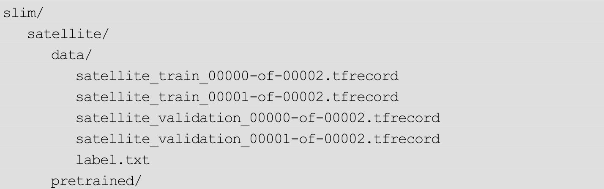
3.3.4 开始训练
在slim文件夹下，运行以下命令就可以开始训练了：
这里的参数比较多，下面一一进行介绍：
●—trainable_scopes=InceptionV3/Logits，InceptionV3/AuxLogits：首先来解释参数trainable_scopes的作用，因为它非常重要。trainable_scopes规定了在模型中微调变量的范围。这里的设定表示只对 InceptionV3/Logits，InceptionV3/AuxLogits 两个变量进行微调，其他变量都保持不动。InceptionV3/Logits，InceptionV3/AuxLogits就相当于在第3.1节中所讲的fc8，它们是Inception V3的“末端层”。如果不设定trainable_scopes，就会对模型中所有的参数进行训练。
●—train_dir=satellite/train_dir：表明会在satellite/train_dir目录下保存日志和checkpoint。
●—dataset_name=satellite、—dataset_split_name=train：指定训练的数据集。在第3.3.2节中定义的新的dataset就是在这里发挥用处的。
●—dataset_dir=satellite/data：指定训练数据集保存的位置。
●—model_name=inception_v3：使用的模型名称。
●—checkpoint_path=satellite/pretrained/inception_v3.ckpt：预训练模型的保存位置。
●—checkpoint_exclude_scopes=InceptionV3/Logits，InceptionV3/AuxLogits：在恢复预训练模型时，不恢复这两层。正如之前所说，这两层是Inception V3模型的末端层，对应着ImageNet数据集的1000类，和当前的数据集不符，因此不要去恢复它。
●—max_number_of_steps 100000：最大的执行步数。
●—batch_size=32：每步使用的batch数量。
●—learning_rate=0.001：学习率。
●—learning_rate_decay_type=fixed：学习率是否自动下降，此处使用固定的学习率。
●—save_interval_secs=300：每隔300s，程序会把当前模型保存到train_dir中。此处就是目录satellite/train_dir。
●—save_summaries_secs=2：每隔 2s，就会将日志写入到 train_dir 中。可以用TensorBoard查看该日志。此处为了方便观察，设定的时间间隔较多，实际训练时，为了性能考虑，可以设定较长的时间间隔。
●—log_every_n_steps=10：每隔10步，就会在屏幕上打出训练信息。
●—optimizer=rmsprop：表示选定的优化器。
●—weight_decay=0.00004：选定的weight_decay值。即模型中所有参数的二次正则化超参数。
以上命令是只训练末端层InceptionV3/Logits，InceptionV3/AuxLogits，还可以使用以下命令对所有层进行训练：
对比只训练末端层的命令，只有一处发生了变化，即去掉了—trainable_scopes 参数。原先的—
trainable_scopes=InceptionV3/Logits，InceptionV3/AuxLogits 表示只对末端层InceptionV3/Logits 和InceptionV3/AuxLogits 进行训练，去掉后就可以训练模型中的所有参数了。我们会在下面比较这两种训练方式的效果。
3.3.5 训练程序行为
当 train_image_classifier.py 程序启动后，如果训练文件夹（即satellite/train_dir）里没有已经保存的模型，就会加载checkpoint_path中的预训练模型，紧接着，程序会把初始模型保存到train_dir中，命名为model.ckpt-0，0表示第0步。这之后，每隔5min（参数
save_interval_secs=300指定了每隔300s保存一次，即5min）。程序还会把当前模型保存到同样的文件夹中，命名格式和第一次保存的格式一样。因为模型比较大，程序只会保留最新的5个模型。
此外，如果中断了程序并再次运行，程序会首先检查train_dir中有无已经保存的模型，如果有，就不会去加载checkpoint_path中的预训练模型，而是直接加载train_dir中已经训练好的模型，并以此为起点进行训练。Slim之所以这样设计，是为了在微调网络的时候，可以方便地按阶段手动调整学习率等参数。
3.3.6 验证模型准确率
如何查看保存的模型在验证数据集上的准确率呢？可以用eval_image_classifier.py程序进行验证，即执行下列命令：
这里参数的含义为：
●—checkpoint_path=satellite/train_dir：这个参数既可以接收一个目录的路径，也可以接收一个文件的路径。如果接收的是一个目录的路径，如这里的satellite/train_dir，就会在这个目录中寻找最新保存的模型文件，执行验证。也可以指定一个模型进行验证，以第300步的模型为例，在satellite/train_dir 文件夹下它被保存为model.ckpt-300.meta、model.ckpt-300.index、model.ckpt-300.data-00000-of-00001三个文件。此时，如果要对它执行验证，给 checkpoint_path 传递的参数应该为satellite/train_dir/model.ckpt-300。
●—eval_dir=satellite/eval_dir：执行结果的日志就保存在eval_dir中，同样可以通过TensorBoard查看。
●—dataset_name=satellite、—dataset_split_name=validation指定需要执行的数据集。注意此处是使用验证集（validation）执行验证。
●—dataset_dir=satellite/data：数据集保存的位置。
●—model_name=inception_v3：使用的模型。
执行后，应该会出现类似下面的结果：
Accuracy表示模型的分类准确率，而Recall_5表示Top 5的准确率，即在输出的各类别概率中，正确的类别只要落在前5个就算对。由于此处的类别数比较少，因此可以不执行Top 5的准确率，换而执行Top 2或者Top 3的准确率，只要在eval_image_classifier.py中修改下面的部分就可以了：
3.3.7 TensorBoard可视化与超参数选择
在训练时，可以使用TensorBoard对训练过程进行可视化，这也有助于设定训练模型的方式及超参数。
使用下列命令可以打开TensorBoard（其实就是指定训练文件夹）：
在 TensorBoard中，可以看到损失的变化曲线，如图3-1所示。观察损失曲线有助于调整参数。当损失曲线比较平缓，收敛较慢时，可以考虑增大学习率，以加快收敛速度；如果损失曲线波动较大，无法收敛，就可能是因为学习率过大，此时就可以尝试适当减小学习率。
图3-1 训练损失的变化情况
此外，使用 TensorBoard，还可以对比不同模型的损失变化曲线。如在第3.3.4节中给出了两条命令，一条命令是只微调Inception V3末端层的，另外一条命令是微调整个网络的。可以在train_dir中建立两个文件夹，训练这两个模型时，通过调整train_dir参数，将它们的日志分别写到新建的文件夹中，此时再使用命令tensorboard
—logdir satellite/train_dir打开TensorBoard，就可以比较这两个模型的变化曲线了。如图3-2所示，上方的曲线为只训练末端层的损失，下方的曲线为训练所有层的损失。仅看损失，训练所有层的效果应该比只训练末端层要好。事实也是如此，只训练末端层最后达到的分类准确率在76%左右，而训练所有层的分类准确率在82%左右。读者还可以进一步调整训练变量、学习率等参数，以达到更好的效果。
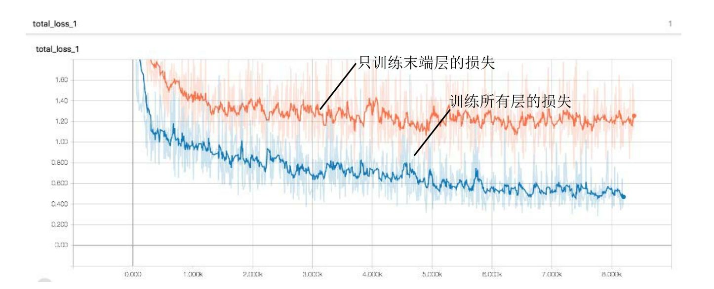
图3-2 在TensorBoard中对比两种训练方式的损失
3.3.8 导出模型并对单张图片进行识别
训练完模型后，常见的应用场景是：部署训练好的模型并对单张图片做识别。这里提供了两个代码文件：freeze_graph.py 和classify_image_inception_v3.py。前者可以导出一个用于识别的模型，后者则是使用inception_v3模型对单张图片做识别的脚本。
TensorFlow Slim 为提供了导出网络结构的脚本export_inference_graph.py。首先在slim文件夹下运行：
这个命令会在satellite文件夹中生成一个inception_v3_inf_graph.pb文件。 注意：
inception_v3_inf_graph.pb 文件中只保存了 Inception V3 的网络结构，并不包含训练得到的模型参数，需要将
checkpoint 中的模型参数保存进来。 方法是使用freeze_graph.py脚本（在chapter_3文件夹下运行）：
这里参数的含义为：
●—input_graph slim/satellite/inception_v3_inf_graph.pb。这个参数很好理解，它表示使用的网络结构文件，即之前已经导出的inception_v3_inf_graph.pb。
●—input_checkpoint slim/satellite/train_dir/model.ckpt-5271。具体将哪一个checkpoint的参数载入到网络结构中。这里使用的是训练文件夹train_dir中的第5271步模型文件。
读者需要根据训练文件夹下 checkpoint 的实际步数，将 5271 修改成对应的数值。
●—input_binary true。导入的inception_v3_inf_graph.pb实际是一个protobuf文件。而protobuf文件有两种保存格式，一种是文本形式，一种是二进制形式。inception_v3_inf_graph.pb是二进制形式，所以对应的参数是
—input_binary true。初学的话对此可以不用深究，若有兴趣的话可以参考资料[2]
。
●—output_node_names InceptionV3/Predictions/Reshape_1。在导出的模型中，指定一个输出结点，InceptionV3/Predictions/Reshape_1 是 Inception V3最后的输出层。
●—output_graph slim/satellite/frozen_graph.pb。最后导出的模型保存为slim/satellite/frozen_graph.pb文件。
如何使用导出的 frozen_graph.pb 来对单张图片进行预测？编写了一个classify_image_inception_v3.py 脚本来完成这件事。先来看这个脚本的使用方法：
--model_path 很好理解，就是之前导出的模型 frozen_graph.pb。模型的输出实际是“第 0类”、“第 1类”……所以用—
label_path指定了一个 label文件，label 文件中按顺序存储了各个类别的名称，这样脚本就可以把类别的 id号转换为实际的类别名。—image_file是需要测试的单张图片。脚本的运行结果应该类似于：
这就表示模型预测图片对应的最可能的类别是 water，接着是 wetland、urban、wood等。score是各个类别对应的Logit。
最后来看 classify_image_inception_v3.py 的实现方式。代码中包含一个preprocess_for_eval 函数，它实际上是从 slim/preprocessing/inception_preprocessing.py 里复制而来的，用途是对输入的图片做预处理。classify_image_inception_v3.py的主要逻辑在run_inference_on_image函数中，第一步就是读取图片，并用preprocess_for_eval做预处理：
Inception V3的默认输入为299*299，所以调用preprocess_for_eval时指定了宽和高都是299。接着调用create_graph（）将模型载入到默认的计算图中：
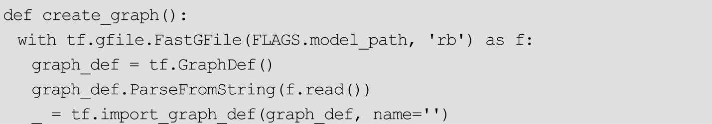
FLAGS.model_path就是保存的slim/satellite/frozen_graph.pb。将之读入后先转换为 graph_def，然后用 tf.import_graph_def（）函数导入。导入后，就可以创建Session并测试图片了，对应的代码为：
InceptionV3/Logits/SpatialSqueeze：0是各个类别Logit值对应的结点。输入预处理后的图片image_data，使用sess.run（）函数取出各个类别预测Logit。默认只取最有可能的FLAGS.num_top_predictions个类别输出，这个值默认是 5。可以在运行脚本时用—num_top_predictions 参数来改变此默认值。node_lookup定义了一个NodeLookup类，它会读取label文件，并将模型输出的类别id转换成实际类别名，实现代码比较简单，就不再详细介绍了。
3.4 总结
本章首先简要介绍了微调神经网络的基本原理，接着详细介绍了如何使用TensorFlow Slim微调预训练模型，包括数据准备、定义新的datasets文件、训练、验证、导出模型并测试单张图片等。如果读者需要训练自己的数据，可以参考从第3.2节开始的步骤，修改对应的代码，来打造自己的图像识别模型。
拓展阅读
TensorFlow Slim是TensorFlow中用于定义、训练和验证复杂网络的高层API。官方已经使用TF-
Slim定义了一些常用的图像识别模型，如AlexNet、VGGNet、Inception模型、ResNet等。本章介绍的Inception V3 模型也是其中之一，详细文档请参考：https：//github.com/tensorflow/models/tree/master/research/slim。
在第 3.2 节中，将图片数据转换成了 TFRecord 文件。TFRecord 是TensorFlow 提供的用于高速读取数据的文件格式。读者可以参考博文
（http：//warmspringwinds.github.io/tensorflow/tf-slim/2016/12/21/tfrecords-
guide/）详细了解如何将数据转换为TFRecord文件，以及如何从TFRecord文件中读取数据。
Inception V3是Inception模型（即GoogLeNet）的改进版，可以参考论文Rethinking the Inception Architecture for Computer Vision了解其结构细节。
[1]
在随书提供的数据中同样包含这个文件，对应路径是chapter_3_data/inception_v3.ckpt。
[2]
https://www.tensorflow.org/extend/tool_developers/.
第4章 Deep Dream模型
Deep Dream是Google公司在2015年公布的一项有趣的技术。在训练好的卷积神经网络中，只需要设定几个参数，就可以通过这项技术生成一张图像。生成出的图像不仅令人印象深刻，而且还能帮助我们理解卷积神经网络背后的运行机制。本章介绍Deep Dream的基本原理，并使用TensorFlow实现Deep Dream生成模型。
4.1 Deep Dream的技术原理
在前面的章节中，已经介绍了如何利用深度卷积网络进行图像识别。在卷积网络中，输入一般是一张图像，中间层是若干卷积运算，输出是图像的类别。在训练阶段，会使用大量的训练图片计算梯度，网络根据梯度不断地调整和学习最佳的参数。对此，通常会有一些疑问，例如：（1）卷积层究竟学习到了什么内容？（2）卷积层的参数代表的意义是什么？（3）浅层的卷积和深层的卷积学习到的内容有哪些区别？Deep Dream可以解答上述问题。
设输入网络的图像为 x，网络输出的各个类别的概率为 t（如 ImageNet为1000种分类，在这种情况下，t是一个1000维的向量，代表了1000种类别的概率），以香蕉类别为例，假设它对应的概率输出值为 t[100]，换句话说，t[100]代表了神经网络认为一张图片是香蕉的概率 。设定 t[100] 为优化目标，不断地让神经网络去调整输入图像
x 的像素值，让输出 t[100] 尽可能的大， 最后得到如图4-1所示的图像。
图4-1 极大化某一类别（以香蕉为例）的概率得到的图片
在图4-1中，左边是输入x的初始图像，只是一些随机的噪声，经过神经网络不断地调整，得到极大化t[100]对应的图像。这就是在神经网络“眼中”最具备香蕉特点的图像。在图中可以很明显地观察到香蕉基本的颜色和形状特征。
图 4-2 展示了更多类别物体对应的特征，第一行分别是大羚羊、量杯、蚂蚁、海星，第二行分别是小丑鱼、香蕉、降落伞、螺钉。
图4-2 极大化神经网络各个输出类别概率得到的图片（详见彩插）
通过图4-2可以理解 最后的类别概率 代表怎样的含义，但读者还想弄清楚神经网络中间的 卷积层
究竟学到了什么。其实使用的方法是类似的，只需要最大化卷积层某一通道的输出就可以。同样设输入图像为x，中间某个卷积层的输出是y。y的形状应该是hwc，其中h为y的高度，w为y的宽度，c则代表“通道数”。原始图像有R、G、B三个通道，而在大多数卷积层中，通道数都远远不止3个。卷积的一个通道就可以代表一种学习到的“信息”。
以某一个通道的平均值作为优化目标 ，就可以弄清楚这个通道究竟学习到了什么，这也是Deep Dream的基本原理。在下面的的小节中，会以程序的形式，更详细地介绍如何生成并优化Deep Dream图像。
4.2 TensorFlow中的Deep Dream模型实践[1]
4.2.1 导入Inception模型
原始的Deep Dream模型只需要优化ImageNet模型卷积层某个通道的激活值就可以了，为此，应该先在TensorFlow导入一个ImageNet图像识别模型。这里以 Inception 模型为例进行介绍，对应程序的文件名为load_inception.py。
首先导入要用到的一些基本模块（语句 fromfutureimport print_function是为了在python2、python3中可以使用互相兼容的print函数）：
再创建基本的图和会话：
以上都是一些基本的准备工作，下面开始真正地导入Inception模型。TensorFlow为提供了一种特殊的以“.pb”为扩展名的文件，可以事先将模型导入到pb文件中，再在需要的时候导出。对于Inception模型，对应的pb文件为tensorflow_inception_graph.pb[2]
。
使用下面的程序就可以把Inception模型导入TensorFlow中：
在导入的时候需要给网络指定一个输入图像。为此，设置一个占位符t_input，在后面的程序中，就会把图像数据传递给 t_input。需要注意的是，使用的图像数据通常的格式为（height，width，channel），其中height为图像的像素高度，width为图像的像素宽度，channel为图像的通道数。一般使用的是RGB图像，因此图像的通道数channel就等于3。虽然图像的格式是（height，width，channel），但是Inception模型需要的输入格式却是（batch，height，width，channel）。这是因为格式（height，width，channel）只能表示一张图片，但在训练神经网络时往往需要同时送入多张图片，因此在前面加了一维，让输入图像的格式变为（batch，height，width，channel）。在此，尽管一次只需要输入一张图像，但同样需要把输入数据变为（batch，height，width，channel）的形式，不过batch此时等于1。为此，使用tf.expand_dims函数，它就会在原始的输入前增加一维。
另一个需要注意的地方是，还需要为图像减去一个像素均值。这是由于在训练 Inception 模型的时候，已经做了减去均值的预处理，因此应该使用同样的预处理方法，才能保持输入的一致。此处使用的 Inception 模型减去的是一个固定的均值 117，所以在程序中也定义了 imagenet_mean=117，并用t_input 减去imagenet_mean。
经过减去均值、添加维度两个预处理后，得到真正送入网络的输入图像t_preprocessed，下面使用 tf.import_graph_def（graph_def，{′input′：t_preprocessed}）就可以导入模型了。
导入模型后，找出模型中所有的卷积层，并尝试输出某个卷积层的形状：
运行代码后，会输出共有59个卷积层。59实际是layers这个列表的长度，读者可以自行使用print（layers）打印出所有层的名称。
特别地，尝试输出一个卷积层“mixed4d_3x3_bottleneck_pre_relu”的形状，输出的结果应该是（？，？，？，144）。事实上，卷积层的格式一般是（batch，height，width，channel），因为此时还不清楚输入图像的个数以及大小，所以前三维的值是不确定的，显示为问号。最后，channel 的值是固定的，一共有144个通道。除了mixed4d_3x3_bottleneck_pre_relu卷积层外，读者还可以根据 print（layers）的结果，尝试打印出其他卷积层的形状。下面就以mixed4d_3x3_bottleneck_pre_relu 卷积层为例，最大化它某一个通道的平均值，以达到生成图像的目的。
4.2.2 生成原始的Deep Dream图像
本节对应的程序为gen_naive.py，它可以生成原始的Deep Dream图片。gen_naive.py的开头同样是导入 Inception模型，这与第4.2.1节中一致，不再赘述。除了导入 Inception 模型外，还定义了一个保存图片的函数，它可以把一个numpy.ndarray保存成文件的形式。（保存图像其实在第1.1.2节中做过，使用的方法和本节也是一样的）：
程序的主要部分如下：
首先取出对应名称“mixed4d_3x3_bottleneck_pre_relu”的卷积层输出layer_output。在第4.2.1节中，已经知道它的格式为（？，？，？，144）。这里任意选择一个通道进行最大化，如设定 channel=139，最后调用渲染函数render_naive的时候传递layer_output[：，：，：，channel]即可。总通道数是144，channel可以取 0～143中的任何一个整数值，这里只是以 139通道举例。另外，还定义了一个图像噪声img_noise，它是一个形状为（224，224，3）的张量，表示初始的图像优化起点。
渲染函数render_naive细节如下：
下面仔细介绍这个函数是怎样工作的。函数的参数 t_obj 实际上就是layer_output[：，：，：，channel]，也就是说
是卷积层某个通道的值。
又定义了t_score=tf.reduce_mean（t_obj），意即t_score是t_obj的平均值。t_score越大，就说明神经网络卷积层对应通道的平均激活越大。本节
的目标就是通过调整输入图像 t_input ，来让 t_score 尽可能的大。
为此使用梯度下降法，定义梯度t_grad=tf.gradients（t_score，t_input）[0]，在后面的程序中，会把计算得到的梯度应用到输入图像上。
img0 对应了初始图像。之前传递的初始图像是一个随机的噪声图像image_noise。在render_naive中，先通过img=img0.copy（）复制一个新图像，这样可以避免影响原先图像的值。在新图像上，迭代iter_n步，每一步都将梯度应用到图像 img 上。计算梯度的语句为：g，score=sess.run（[t_grad，t_score]，{t_input：img}）。g对应梯度t_grad的值，而score对应t_score的值。得到梯度后，对梯度做一个简单的正规化处理，然后就将它应用到图片上：img+=g*step。step可以看作“学习率”，它可以控制每次迭代的步长，这里取默认的step=1即可。
运行gen_naive.py会得到类似下面的输出：
这就说明 score（也就是卷积层对应通道的平均值）确实是按期望逐渐增大的。在经过20次迭代后，会把图像保存为naive.jpg，如图4-3所示。
图4-3 运行gen_naive.py生成的图像
确实可以通过最大化某一通道的平均值得到一些有意义的图像！此处图像的生成效果还不太好，在下面的几节中，会开始逐步提高生成图片的质量，生成更加精美的Deep Dream图片。
4.2.3 生成更大尺寸的Deep Dream图像
首先尝试生成更大尺寸的图像。在第4.2.2节中，生成图像的尺寸是（224，224，3），这正是传递的img_noise的大小。如果传递更大的img_noise，就可以生成更大的图片。但是这样做有一个潜在的问题：要生成的图像越大，就会占用越大的内存（或显存），若想生成特别大的图片，就会因为内存不足而导致渲染失败。如何解决这个问题呢？其实方法很简单：每次不对整张图片做优化，而是把图片分成几个部分，每次只对其中的一个部分做优化，这样每次优化时只会消耗固定大小的内存。
本节对应的程序是 gen_multiscale.py，它可以生成更大尺寸的 Deep Dream图像。这个程序中的函数calc_grad_tiled可以对任意大小的图像计算梯度，它的代码如下：
尽管原始图像img可能很大，但此函数只对tile_size*tile_size大小的图像计算梯度，因此计算只会消耗固定的内存，不会发生内存耗尽的问题。默认取tile_size=512。
如果直接计算梯度，在每个512*512块的边缘，可能会发生比较明显的“边缘效应”，影响图片的美观。改进后的做法是生成两个随机数sx、sy，使用np.roll（np.roll（img，sx，1），sy，0）对图片做“整体移动”，这样原先在图像边缘的像素就会被移动到图像中间，从而避免边缘效应。读者可以查看np.roll函数的文档，详细地了解如何整体移动图像的像素，此处不再赘述。
有了 calc_grad_tiled，可以对任意大小的图像计算梯度了。在实际工程中，为了加快图像的收敛速度，采用先生成小尺寸，再将图片放大的方法，请参考下面的代码：
resize_ratio 函数的功能是将图片 img 放大 ratio 倍。因此，在其内部使用的函数是 scipy.misc.imresize。但 scipy.misc.imresize会自动把输出缩放为0～255 之间的数，这可能和原先的像素值的范围不符，影响收敛。因此，resize_ratio函数先确定原先像素的范围，计算img的最大值和最小值，使用scipy.misc.imresize后，再将像素值缩放回去。
render_multiscale 是用来生成大尺寸图像的函数。相比第 4.2.2 节的gen_naive函数，它又多出了两个参数octave_n和octave_scale。先生成小尺寸的图像，然后调用resize_ratio将小尺寸图像放大octave_scale倍，再使用放大后的图像作为初值进行计算。这样的放大一共会进行octave_n-1次。换句话说，octave_n越大，最后生成的图像就会越大，默认的octave_n=3。
有了上面的函数后，生成图像就很简单了，直接调用这些函数即可，代码如下：
运行gen_multiscale.py后，会生成一张multiscale.jpg图像，如图4-4所示。
图4-4 运行gen_multiscale.py生成的更大尺度的图像
此时可以看到，卷积层“mixed4d_3x3_bottleneck_pre_rel”的第 139 个通道实际上就是学习到了某种花朵的特征，如果输入这种花朵的图像，它的激活值就会达到最大。读者还可以调整octave_n为更大的值，就可以生成更大的图像。不管最终图像的尺寸是多大，始终只会对512512像素的图像计算梯度，因此内存始终是够用的。如果在读者的环境中，计算512512的图像的梯度会造成内存问题，可以将函数中tile_size修改为更小的值。
4.2.4 生成更高质量的Deep Dream图像
在第 4.2.3 节中，学习了如何将生成大尺寸的图像。在本节中，将关注点转移到图像本身的“质量”上。对应的参考代码是gen_lapnorm.py。
在第 4.2.3 节中，生成的图像在细节部分变化还比较剧烈，而希望图像整体的风格应该比较“柔和”。在图像处理算法中，有 高频成分 和
低频成分
的概念。简单来讲，所谓高频成分，是指图像中灰度、颜色、明度变化比较剧烈的地方，如边缘、细节部分。而低频成分是指图像变化不大的地方，如大块色块、整体风格。第 4.2.3 节中生成图像的高频成分太多，而希望图像的低频成分应该多一些，这样生成的图像才会更加“柔和”。
如何让图像具有更多的低频成分而不是高频成分？一种方法是针对高频成分加入损失，这样图像在生成的时候就会因为新加入损失的作用而发生改变。但加入损失会导致计算量和收敛步数的增大。此处采用另一种方法：
放大低频的梯度
。之前生成图像时，使用的梯度是统一的。如果可以对梯度作分解，将之分为“高频梯度”“低频梯度”，再人为地去放大“低频梯度”，就可以得到较为柔和的图像了。
在具体实践上，使用拉普拉斯金字塔（Laplacian Pyramid）对图像进行分解。这种算法可以把图片分解为多层，如图4-5所示。底层的level1、level2就对应图像的高频成分，而上层的 level3、level4 对应图像的低频成分。 可以对梯度也做这样的分解。
分解之后，对高频的梯度和低频的梯度都做标准化，可以让梯度的低频成分和高频成分差不多，表现在图像上就会增加图像的低频成分，从而提高生成图像的质量。通常称这种方法为拉普拉斯金字塔梯度标准化（Laplacian Pyramid Gradient Normalization）。
图4-5 图像的拉普拉斯金字塔分解
拉普拉斯金字塔梯度标准化实现的代码如下：
先来看 lap_split和 lap_split_n。lap_split可以把图像分解为高频成分和低频成分。其中对原始图像做一次卷积就得到低频成分lo。这里的卷积起到的作用就是“平滑”，以提取到图片中变化不大的部分。得到低频成分后，使用转置卷积将低频成分缩放到原图一样的大小lo2，再用原图img减去lo2就可以得到高频成分了。再来看函数lap_split_n，它将图像分成n层的拉普拉斯金字塔，每次都调用lap_split对当前图像进行分解，分解得到的高频成分就保存到金字塔levels中，而低频成分则留待下一次分解。
lap_merge函数和normalize_std函数比较简单。lap_merge函数的功能就是将一个分解好的拉普拉斯金字塔还原成原始图像，而normalize_std则是对图像进行标准化。
最后，lap_normalize就是将输入图像分解为拉普拉斯金字塔，然后调用normalize_std对每一层进行标准化，输出为融合后的结果。
有了拉普拉斯金字塔标准化的函数后，就可以写出生成图像的代码：
这里有一个tffunc函数，它的功能是将一个对Tensor定义的函数转换成一个正常的对numpy.ndarray定义的函数。上面定义的lap_normalize的输入参数是一个Tensor，而输出也是一个Tensor，利用tffunc函数可以将它变成一个输入ndarray类型，输出也是ndarray类型的函数。读者可能需要一定的Python基础才能理解tffunc函数的定义，初学者如果弄不明白可以跳过这个部分，只需要知道它的大致功能即可。
生成图像的render_lapnorm函数和第4.2.3节中对应的render_multiscale基本相同。唯一的区别在于对梯度 g 应用了拉普拉斯标准化函数lap_norm_func。最终生成图像的代码也与之前类似，只需要调用render_lapnorm函数即可：
使用python gen_lapnorm.py命令运行gen_lapnorm.py后，就可以在当前目录下生成图像lapnorm.jpg，如图4-6所示。
图4-6 拉普拉斯金字塔标准化后得到的DeepDream图片（详见彩插）
与第 4.2.3 节对比，本节确实在一定程度上提高了生成图像的质量。也可以更清楚地看到这个卷积层中的第139个通道学习到的图像特征。读者可以尝试不同的通道，如 channel=99时，可以生成图 4-7a所示的图像。卷积层mixed4d_3x3_bottleneck_pre_relu一共具有144个通道，因此0～143通道中的任何channel值都是有效的。除了对单独的通道进行生成外，还可以对多个通道进行组合。如使用 render_lapnorm（layer_output[：，：，：，139]+layer_output[：，：，：，99]，img_noise，iter_n=20），就可以组合第139个通道和第99个通道，生成图4-7b所示的图片。读者可以自由尝试更多组合。
图4-7 使用不同通道数运行gen_lapnorm.py生成的图像
4.2.5 最终的Deep Dream模型
前面已经介绍了如何通过极大化卷积层某个通道的平均值来生成图像，并学习了如何生成更大尺寸和更高质量的图像。最终的Deep Dream模型还需要对图片添加一个背景。具体应该怎么做呢？其实，之前是从image_noise开始优化图像的，现在使用一张背景图像作为起点对图像进行优化就可以了。具体的代码如下：
读入图像‘test.jpg’，并将它作为起点，传递给函数render_deepdream。为了保证图像生成的质量，render_deepdream对图像也进行高频低频的分解。分解的方法是直接缩小原图像，就得到低频成分lo，其中缩放图像使用的函数是 resize，它的参数 hw是一个元组（tuple），用（h，w）的形式表示缩放后图像的高和宽。
在生成图像的时候，从低频的图像开始。低频的图像实际上就是缩小后的图像，经过一定次数的迭代后，将它放大再加上原先的高频成分。计算梯度的方法同样使用的是calc_grad_tiled方法。
运行程序gen_deepdream.py，就可以得到最终的Deep Dream图片了。如图 4-8a 所示为原始的 test.jpg 图片，图 4-8b 所示为生成的 Deep Dream图片。
图4-8 运行gen_deepdream.py生成的图片
利用下面的代码可以生成非常著名的含有动物的Deep Dream图片，此时优化的目标是mixed4c的全体输出。
生成效果如图4-9所示。
读者可以自行尝试不同的背景图像，不同的通道数，不同的输出层，就可以得到各种各样的生成图像。
图4-9 带有背景的DeepDream的图片（详见彩插）
4.3 总结
在本章中，首先学习了 Deep Dream 模型的基本原理，以及如何使用TensorFlow生成最原始的Deep Dream图片，接着学习了如何生成更大尺寸、更高质量的图片，最后完成了一个最终版的Deep Dream模型。这个项目不仅非常有趣，而且还有助于理解卷积神经网络学习到的内部特征。
[1]
本节的代码参考了TensorFlow源码中的示例程序https：//github.com/tensorflow/tensorflow/tree/master/tensorflow/examples/tutorials/deepdream，并做了适当修改。
[2]
网站https：//storage.googleapis.com/download.tensorflow.org/models/inception5h.zip提供了tensorflow_inception_graph.pb文件的下载。本书也在chapter_4_data/里向读者提供了这个文件。该文件需要放到项目根目录中。
第5章 深度学习中的目标检测
在前面的章节中，关注的大多数是图像识别问题：输入一张图像，输出该图像对应的类别。本章将讨论目标检测问题。目标检测的输入同样是一张图像，但输出不单单是图像的类别，而是该图像中所含的所有目标物体以及它们的位置。通常使用矩形框来标识物体的位置，如图5-1所示。深度学习已经被广泛应用在目标检测问题上，在性能上也远远超过了传统方法。本章会先介绍深度学习中的几个经典的目标检测方法，再以 Google 公司开源的TensorFlow Object Detection API为例，介绍如何在TensorFlow中进行目标检测。
图5-1 目标检测问题
5.1 深度学习中目标检测的原理
5.1.1 R-CNN的原理
R-CNN的全称是Region-CNN，它可以说是第一个成功地将深度学习应用到目标检测上的算法。后面将要学习的Fast R-CNN、Faster R-CNN全部都是建立在R-CNN基础上的。
传统的目标检测方法大多以图像识别为基础。一般可以在图片上使用穷举法选出所有物体可能出现的区域框，对这些区域框提取特征并使用图像识别方法分类，得到所有分类成功的区域后，通过非极大值抑制（Non-
maximum suppression）输出结果。
R-CNN 遵循传统目标检测的思路，同样采用提取框、对每个框提取特征、图像分类、非极大值抑制四个步骤进行目标检测。只不过在提取特征这一步，将传统的特征（如SIFT、HOG特征等）换成了深度卷积网络提取的特征。R-CNN的整体框架如图5-2所示。
图5-2 R-CNN的算法框架
对于原始图像，首先使用 Selective Search 搜寻可能存在物体的区域。Selective Search可以从图像中启发式地搜索出可能包含物体的区域。相比穷举而言，Selective Search可以减少一部分计算量。下一步，将取出的可能含有物体的区域送入 CNN 中提取特征。CNN 通常是接受一个固定大小的图像，而取出的区域大小却各有不同。对此，R-CNN 的做法是将区域缩放到统一大小，再使用 CNN 提取特征。提取出特征后使用 SVM 进行分类，最后通过非极大值抑制输出结果。
R-CNN的训练可以分成下面四步：
●在数据集上训练CNN。R-CNN论文中使用的CNN网络是AlexNet[1]
，数据集为ImageNet。
●在目标检测的数据集上，对训练好的CNN做微调[2]
。
●用Selective Search搜索候选区域，统一使用微调后的CNN对这些区域提取特征，并将提取到的特征存储起来。
●使用存储起来的特征，训练SVM分类器。
尽管R-CNN的识别框架与传统方法区别不是很大，但是得益于CNN优异的特征提取能力，R-CNN的效果还是比传统方法好很多。如在VOC 2007数据集上，传统方法最高的平均精确度 mAP（mean Average Precision）为40%左右，而R-CNN的mAP达到了58.5%！
R-CNN的缺点是计算量太大。在一张图片中，通过Selective Search得到的有效区域往往在1000个以上，这意味着要重复计算1000多次神经网络，非常耗时。另外，在训练阶段，还需要把所有特征保存起来，再通过 SVM进行训练，这也是非常耗时且麻烦的。下面将要介绍的Fast R-CNN和Faster R-CNN 在一定程度上改进了 R-CNN 计算量大的缺点，不仅速度变快不少，识别准确率也得到了提高。
5.1.2 SPPNet的原理
在学习R-CNN的改进版Fast R-CNN之前，作为前置知识，有必要学习SPPNet的原理。SPPNet的英文全称是Spatial Pyramid Pooling Convolutional Networks，翻译成中文是“空间金字塔池化卷积网络”。听起来十分高深，实际上原理并不难，简单来讲，SPPNet主要做了一件事情：将CNN的输入从固定尺寸改进为任意尺寸。例如，在普通的 CNN结构中，输入图像的尺寸往往是固定的（如224×224像素），输出可以看做是一个固定维数的向量。SPPNet在普通的CNN结构中加入了ROI池化层（ROI Pooling），使得网络的输入图像可以是任意尺寸的，输出则不变，同样是一个固定维数的向量。
ROI池化层一般跟在卷积层后面，它的输入是任意大小的卷积，输出是固定维数的向量，如图5-3所示。
图5-3 ROI池化层
为了说清楚为什么 ROI 池化层能够把任意大小的卷积特征转换成固定长度的向量，不妨设卷积层输出的宽度为 w，高度为 h，通道为 c。
不管输入的图像尺寸是多少，卷积层的通道数都不会变，也就是说 c 是一个常数。而 w 、 h
会随着输入图像尺寸的变化而变化，可以看作是两个变量。 以上图中的 ROI 池化层为例，它首先把卷积层划分为 4×4 的网格，每个网格的宽是w/4、高是h/4、通道数为c。当不能整除时，需要取整。接着，对每个网格中的每个通道，都取出其最大值，换句话说，就是对每个网格内的特征做最大值池化（Max Pooling）。这个4×4的网格最终就形成了16c维的特征。接着，再把网络划分成2×2的网格，用同样的方法提取特征，提取的特征的长度为4c。再把网络划分为1×1的网格，提取的特征的长度就是c，最后的1×1的划分实际是取出卷积中每个通道的最大值。最后，将得到的特征拼接起来，得到的特征是16c+4c+c=21c维的特征。
很显然，这个输出特征的长度与 w 、 h 两个值是无关的，因此 ROI
池化层可以把任意宽度、高度的卷积特征转换为固定长度的向量。
应该怎么把 ROI 池化层用到目标检测中来呢？其实，可以这样考虑该问题：网络的输入是一张图像，中间经过若干卷积形成了卷积特征，这个卷积特征实际上和原始图像在位置上是有一定对应关系的。如图5-4所示，原始图像中有一辆汽车，它使得卷积特征在同样位置产生了激活。
因此，原始图像中的候选框，实际上也可以对应到卷积特征中相同位置的框。
由于候选框的大小千变万化，对应到卷积特征的区域形状也各有不同，但是不用担心，利用 ROI 池化层
可以把卷积特征中的不同形状的区域对应到同样长度的向量特征 。综合上述步骤，就可以
将原始图像中的不同长宽的区域都对应到一个固定长度的向量特征，这就完成了各个区域的特征提取工作。
图5-4 原始图片与卷积特征在位置上存在的对应关系
在 R-CNN中，对于原始图像的各种候选区域框，必须把框中的图像缩放到统一大小，再对每一张缩放后的图片提取特征。使用 ROI 池化层后，就可以先对图像进行一遍卷积计算，得到整个图像的卷积特征；接着，对于原始图像中的各种候选框，只需要在卷积特征中找到对应的位置框，再使用ROI池化层对位置框中的卷积提取特征，就可以完成特征提取工作。
R-CNN 和 SPPNet 的不同点在于，R-CNN 要对每个区域计算卷积，而SPPNet只需要计算一次，因此SPPNet的效率比R-CNN高得多。
R-CNN和SPPNet的相同点在于，它们都遵循着提取候选框、提取特征、分类几个步骤。在提取特征后，它们都使用了SVM进行分类。
5.1.3 Fast R-CNN的原理
在 SPPNet中，实际上特征提取和区域分类两个步骤还是分离的。只是使用 ROI 池化层提取了每个区域的特征，在对这些区域分类时，还是使用传统的SVM作为分类器。Fast R-CNN相比SPPNet更进一步，不再使用SVM作为分类器，而是使用神经网络进行分类， 这样就可以同时训练特征提取网络和分类网络，从而取得比
SPPNet 更高的准确度 。Fast R-CNN的网络结构如图5-5所示。
图5-5 Fast R-CNN的算法框架
对于原始图片中的候选框区域，和 SPPNet中的做法一样，都是将它映射到卷积特征的对应区域（即图5-5中的ROI projection），然后使用ROI池化层对该区域提取特征。在这之后，SPPNet是使用 SVM对特征进行分类，而Fast R-CNN则是直接使用全连接层。全连接层有两个输出，一个输出负责分类（即图5-5中的Softmax），另一个输出负责框回归（即图5-5中的bbox regressor）。
先说分类，假设要在图像中检测K类物体，那么最终的输出应该是K+1个数，每个数都代表该区域为某个类别的概率。之所以是 K+1 个输出而不是K个输出，是因为还需要一类“背景类”，针对该区域无目标物体的情况。
再说框回归，框回归实际上要做的是对原始的检测框进行某种程度的“校准”。因为使用 Selective Search 获得的框有时存在一定偏差。设通过Selective Search得到的框的四个参数为（x，y，w，h），其中（x，y）表示框左上角的坐标位置，（w，h）表示框的宽度和高度。而真正的框的位置用（x′，y′，w′，h′）表示，框回归就是要学习参数
。其中，
两个数表示与尺度无关的平移量，而
两个数表示的是和尺度无关的缩放量。
Fast R-CNN与SPPNet最大的区别就在于，Fast R-CNN不再使用SVM进行分类，而是使用一个网络同时完成了提取特征、判断类别、框回归三项工作。
5.1.4 Faster R-CNN的原理
Fast R-CNN看似很完美了，但在Fast R-CNN中还存在着一个有点尴尬的问题：它需要先使用Selective Search提取框，这个方法比较慢，有时，检测一张图片，大部分时间不是花在计算神经网络分类上，而是花在Selective Search 提取框上！在 Fast R-CNN 升级版 Faster R-CNN 中，用 RPN 网络（Region Proposal Network）取代了Selective Search，不仅速度得到大大提高，而且还获得了更加精确的结果。
RPN网络的结构如图5-6所示。
图5-6 RPN网络的结构
RPN还是需要先使用一个CNN网络对原始图片提取特征。为了方便读者理解，不妨设这个前置的CNN提取的特征为51×39×256，即高为51、宽为 39、通道数为 256。对这个卷积特征再进行一次卷积计算，保持宽、高、通道不变，再次得到一个51×39×256的特征。为了方便叙述，先来定义一个“位置”的概念：对于一个51×39×256的卷积特征，称它一共有51×39个“位置”。让新的卷积特征的每一个“位置”都“负责”原图中对应位置 9 种尺寸的框的检测，检测的目标是判断框中是否存在一个物体，因此共有51×39×9个“框”。在Faster R-CNN的原论文中，将这些框都统一称为“anchor”。
anchor的9种尺寸如图5-7所示，它们的面积分别1282 ，2562 ，5122 。每种面积又分为 3 种长宽比，分别是 2∶1、1∶2、1∶1。anchor 的尺寸实际是属于可调的参数，不同任务可以选择不同的尺寸。
图5-7 Faster R-CNN中anchor
对于这51×39个位置和51×39×9个anchor，图5-8展示了接下来每个位置的计算步骤。设k为单个位置对应的anchor的个数，此时k=9。首先使用一个3×3的滑动窗口，将每个位置转换为一个统一的256维的特征，这个特征对应了两部分的输出。一部分表示该位置的 anchor 为物体的概率，这部分的总输出长度为 2×k（一个 anchor对应两个输出：是物体的概率+不是物体的概率）。另一部分为框回归，框回归的含义与Fast R-CNN中一样，一个anchor对应4个框回归参数，因此框回归部分的总输出的长度为4×k。
图5-8 anchor与网络输出的对应关系
Faster R-CNN使用RPN生成候选框后，剩下的网络结构和Fast R-CNN中的结构一模一样。在训练过程中，需要训练两个网络，一个是RPN网络，一个是在得到框之后使用的分类网络。通常的做法是交替训练，即在一个batch内，先训练RPN网络一次，再训练分类网络一次。
R-CNN、Fast R-CNN、Faster R-CNN的对比见表5-1。
表5-1 R-CNN、Fast R-CNN、Faster R-CNN的对比
从R-CNN，到Fast R-CNN，再到Faster R-CNN，不仅检测速度越来越快，而且检测的精确度也在不断提升。在出现 R-CNN 方法前，VOC 2007数据集上传统方法所能达到的最高平均精确度（mAP）为40%左右，R-CNN将该值提高到了58.5%，Fast R-CNN在VOC 2007上的平均精确度为70%，Faster R-CNN又将该值提高到了78.8%。这几种方法既一脉相承，又不断改进，值得仔细研究。
5.2 TensorFlow Object Detection API
2017年6月，Google公司开放了TensorFlow Object Detection API。这个项目使用 TensorFlow 实现了大多数深度学习目标检测框架，其中就包括Faster R-CNN。在本节中，首先介绍如何安装TensorFlow Object Detection API，再介绍如何使用已经训练好的模型进行物体检测，最后介绍如何训练自己的模型。
5.2.1 安装TensorFlow Object Detection API
在GitHub 上，TensorFlow Object Detection API 是存放在tensorflow/models 项目（地址：https：//github.com/tensorflow/models）下的。可以通过git来下载tensorflow/models：
下载 tensorflow/models 代码后，应该得到一个 models 文件夹。models文件夹中还有一个research文件夹。下面的安装命令都是以research文件夹为根目录执行的，所说的目录也都是以research文件夹为相对目录。
安装TensorFlow Object Detection API的步骤如下（以research文件夹为相对目录）：
1.安装或升级protoc
在object_detection/protos/中，可以看到一些proto文件，需要使用protoc程序将这些proto文件编译为Python文件。TensorFlow Object Detection API必须使用 2.6.0以上的 protoc进行编译，否则会报错。可以使用命令 protoc—
version查看protoc的版本。如果发现版本低于2.6.0或运行命令错误，就需要安装或升级protoc。
安装或升级的方法是登录 protobuf 的发布页面：https：//github.com/google/protobuf/releases 下载已经编译好的文件包。
如图5-9所示，默认有多种版本的预编译包。需要自行找到对应机器应该使用的文件。如 64 位的 ubuntu 系统应下载文件 protoc-3.3.0-linux-x86_64.zip，64位的OS X系统应下载文件protoc-3.3.0-osx-x86_64.zip。下载文件后解压，会得到一个protoc文件，将它复制到系统的可执行目录即可，如在ubuntu系统中，可以执行以下命令：
图5-9 protoc的源码和各个系统的预编译包
2.编译proto文件
使用protoc对proto文件进行编译。具体来说，应当在research文件夹下，运行下面的命令：
运行完成后，可以检查 object_detection/protos/文件夹，如果每个 proto文件都生成了对应的以py为后缀的python源代码，就说明编译成功了。
3.将Slim加入PYTHONPATH
TensorFlow Object Detection API是以Slim为基础实现的，需要将Slim的目录加入PYTHONPATH后才能正确运行。具体来说，还是在research文件夹下，执行下面的命令：
执行命令完成后，可以使用python命令打开一个python shell，如果运行import slim成功则说明已经正确设置好了。
4.安装完成测试
在research文件夹下，执行：
这条命令会自动检查TensorFlow Object Detection API是否正确安装，如果出现下面的信息，说明已安装成功：
5.2.2 执行已经训练好的模型
TensorFlow Object Detection API默认提供了5个预训练模型，它们都是使用COCO数据集训练完成的，结构分别为SSD+MobileNet、SSD+Inception、R-FCN+ResNet101、Faster RCNN+ResNet101、Faster RCNN+Inception_ResNet。
如何使用这些预训练模型呢？官方已经给了一个用Jupyter Notebook编写好的例子。首先在research文件夹下，运行命令：jupyter-
notebook。如果提示不存在该命令，可能是因为没有安装Jupyter Notebook，需要读者自行安装。
运行命令 jupyter-notebook 后，打开 http：//localhost：8888，接着打开object_detection文件夹，并单击object_detection_tutorial.ipynb运行示例文件，如图5-10所示。
图5-10 官方提供的示例object_detection_tutorial.ipynb
使用组合键“Shift+Enter”可以依次执行这些命令。在这里介绍Notebook中的命令，并给出相应的中文注释。
首先是导入一些需要的包和设置环境：
导入包后，设置需要使用的模型：
接下来下载预训练模型，根据网络环境的不同，下载的时间可能会有长有短。
这里程序组合了DOWNLOAD_BASE和MODEL_FILE两个变量得到了下载地址。很显然，由于MODEL_FILE的值是‘ssd_mobilenet_v1_coco_11_06_2017’，因此下载的模型为SSD+MobileNet。如何下载其他预训练模型并执行呢？实际上也很简单，可以打开TensorFlow detection model zoo[3]
，找到其他模型的下载地址。根据这些下载地址，只需要改变MODEL_FILE的值就可以下载不同的模型。为方便读者查阅，在此处也列出这些值：
回到示例代码，下载模型后，程序就直接将它读取到默认的计算图中（实际读取的是frozen_inference_graph.pb文件），使用的代码如下所示：
在进行真正的检测之前，还得定义一些帮助函数：
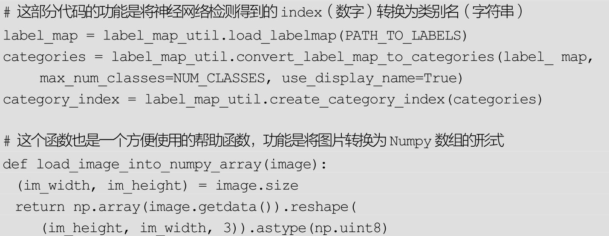
下面开始检测图片！先定义要检测的图片：
TEST_IMAGE_PATHS是一个列表，它保存了需要检测的图片。这里检测的图片是官方提供的示例图片。如果想要检测自己的图片，只要将这些图片的路径以列表形式保存在TEST_IMAGE_PATHS中就可以了。
最后是检测的代码，同样给出中文注释：
两张示例图片的检测效果如图5-11所示。
图5-11 示例图片的检测效果
5.2.3 训练新的模型
以VOC 2012数据集为例，介绍如何使用TensorFlow Object Detection API训练新的模型。VOC 2012是VOC 2007数据集的升级版，一共有11530张图片，每张图片都有标注，标注的物体包括人、动物（如猫、狗、鸟等）、交通工具（如车、船飞机等）、家具（如椅子、桌子、沙发等）在内的20个类别。图5-12展示了VOC 2012中的一张图片。
图5-12 VOC 2012数据集的示例图片
首先下载数据集，并将其转换为 tfrecord格式。VOC 2012数据集的下载地址为 http：//host.robots.ox.ac.uk/pascal/VOC/voc2012/VOCtrainval_11-May-2012.tar。
为了不影响代码的结构，不妨在object_detection文件夹中，再新建一个voc文件夹，并将下载的数据集压缩包复制至voc/中。解压后，就得到一个VOCdevkit文件夹，最终的文件夹结构应该为
JPEGImages 文件中存储了所有的图像数据。对于每一张图片，都在Annotations文件夹中有其物体框的标注。
在object_detection文件夹中，执行以下命令可以将VOC 2012数据集转换为 tfrecord格式，转换好的 tfrecord保存在新建的 voc文件夹下，分别为pascal_train.record和pascal_val.record：
此外，将pascal_label_map.pbtxt数据复制到voc文件夹下：
这里的转换代码是为VOC 2012数据集提前编写好的。如果读者希望使用自己的数据集，有两种方法，第一种方法是修改自己的数据集的标注格式，使其和VOC 2012一模一样，然后就可以直接使用create_pascal_tf_record.py脚本转换了，另外一种方法是修改create_pascal_tf_record.py，对读取标签的代码进行修改。
回到VOC 2012数据集的训练。下载数据集后，需要选择合适的模型。这里以Faster R-CNN+Inception_ResNet_v2模型为例进行介绍。首先下载在COCO上预训练的Faster R-CNN+Inception_ResNet_v2模型[4]
。解压后得到frozen_inference_graph.pb、graph.pbtxt、model.ckpt.data-00000-of-00001、model.ckpt.index、model.ckpt.meta 5 个文件。在voc文件夹中新建一个pretrained文件夹，并将这5个文件复制进去。
TensorFlow Object Detection API是依赖一个特殊的设置文件进行训练的。在 object_detection/samples/configs/文件夹下，有一些设置文件的示例。可以参考faster_rcnn_inception_resnet_v2_atrous_pets.config文件创建的设置文件。先将faster_rcnn_inception_resnet_v2_atrous_pets.config复制一份到voc文件夹下：
voc.config一共有7处需要修改的地方：
●第一处为num_classes，需要将它修改为VOC 2012中的物体类别数，即20类。
●第二处为 eval_config 中的 num_examples，它表示在验证阶段需要执行的图片数量，修改为 VOC 2012 验证集的图片数 5823
（可以在create_pascal_tf_record.py中，输出对应的examples_list的长度，就可以知道这个大小）。
●还有5处为所有含有PATH_TO_BE_CONFIGURED的地方。这些地方需要修改为自己的目录。它们应该分别被修改为
最后，在 voc文件夹中新建一个 train_dir 作为保存模型和日志的目录，使用下面的命令就可以开始训练了：
训练的日志和最终的模型都会被保存在train_dir中，因此，同样可以使用TensorBoard来监控训练情况：
需要注意的是，如果发生内存和显存不足报错的情况，除了换用较小的模型进行训练外，还可以修改配置文件中的以下部分：
这个部分表示将输入图像进行等比例缩放再开始训练，缩放后最大边长为1024，最小边长为600。可以将这两个数值改小（如分别改成512和300），使用的显存就会变小。不过这样做也很有可能导致模型的精度下降，读者还需根据自己的情况选择适合的处理方法。
5.2.4 导出模型并预测单张图片
如何将train_dir中的checkpoint文件导出并用于单张图片的目标检测？TensorFlow Object Detection API提供了一个export_inference_graph.py脚本用于导出训练好的模型。具体方法是执行：
其中，model.ckpt-1582表示使用第1582步保存的模型。读者需要根据voc/train_dir/里实际保存的checkpoint，将1582改为合适的数值。导出的模型是voc/export/frozen_inference_graph.pb文件。
读者可以参考第5.2.2节中Jupyter Notebook的代码，自行编写利用导出模型对单张图片做目标检测的脚本。首先去掉无用的下载模型的部分，然后将PATH_TO_CKPT的值赋值为“voc/export/frozen_inference_graph.pb”，即导出的模型文件。将PATH_TO_LABELS修改为“voc/pascal_label_map.pbtxt”，即各个类别的名称。其他代码都可以不改变，识别的效果如图5-13所示。
图5-13 训练深度学习目标检测模型（详见彩插）
5.3 总结
本章首先以R-CNN、SPPNet、Fast R-CNN、Faster R-CNN四种算法为例，介绍了深度学习中常用的目标检测方法。接着，介绍了 Google 公司开源的TensorFlow Object Detection API的安装和使用，主要分为执行已经训练好的模型和训练自己的模型两部分。希望读者能够通过本章，了解到深度学习中目标检测方法的基本原理，并掌握TensorFlow Object Detection API的使用方法。
拓展阅读
本章提到的R-CNN、SPPNet、Fast R-CNN、Faster R-CNN都是基于区域的深度目标检测方法。可以按顺序阅读以下论文了解更多细节：Rich Feature Hierarchies for Accurate Object Detection and Semantic Segmentation （R-CNN）、Spatial Pyramid Pooling in Deep Convolutional Networks for Visual Recognition（SPPNet）、Fast R-CNN （Fast R-CNN）、Faster R-CNN：Towards Real-Time Object Detection with Region Proposal Networks（Faster R-CNN）。
限于篇幅，除了本章提到的这些方法外，还有一些有较高参考价值的深度学习目标检测方法，这里同样推荐一下相关的论文：R-FCN：Object Detection via Region-based Fully Convolutional Networks （R-FCN）、You Only Look Once：Unified，Real-Time Object Detection （YOLO）、SSD：Single Shot MultiBox Detector（SSD）、YOLO9000：Better，Faster，Stronger（YOLO v2和YOLO9000）等。
[1]
关于AlexNet，可以参考本书第2章的内容。
[2]
关于对CNN进行微调，可以参考本书第3章的内容。
[3]
地址：https：//github.com/tensorflow/models/blob/master/research/object_detection/g3doc/detection_model_zoo.md。
[4]
下载地址是：http：//download.tensorflow.org/models/object_detection/faster_rcnn_inception_resnet_v2_atrous_coco_11_06_2017.tar.gz。
第6章 人脸检测和人脸识别
人脸检测（Face Detection）和人脸识别技术是深度学习的重要应用之一。本章首先会介绍MTCNN算法的原理，它是基于卷积神经网络的一种高精度的实时人脸检测和对齐技术。接着，还会介绍如何利用深度卷积网络提取人脸特征，以及如何利用提取的特征进行人脸识别。最后会介绍如何在TensorFlow中实践上述算法。
6.1 MTCNN的原理
搭建人脸识别系统的第一步是人脸检测，也就是在图片中找到人脸的位置。在这个过程中，系统的输入是一张可能含有人脸的图片，输出是人脸位置的矩形框，如图6-1所示。一般来说，人脸检测应该可以正确检测出图片中存在的所有人脸，不能有遗漏，也不能有错检。
获得包含人脸的矩形框后，第二步要做的是人脸对齐（Face Alignment）。原始图片中人脸的姿态、位置可能有较大的区别，为了之后统一处理，要把人脸“摆正”。为此，需要检测人脸中的关键点（Landmark），如眼睛的位置、鼻子的位置、嘴巴的位置、脸的轮廓点等。根据这些关键点可以使用仿射变换将人脸统一校准，以尽量消除姿势不同带来的误差，人脸对齐的过程如图6-2所示。
图6-1 人脸检测
图6-2 人脸对齐的过程
这里介绍一种基于深度卷积神经网络的人脸检测和人脸对齐方法——MTCNN。MT是英文单词Multi-
task的简写，意即这种方法可以同时完成人脸检测和人脸对齐两项任务。相比于传统方法，MTCNN的性能更好，可以更精确地定位人脸；此外，MTCNN也可以做到实时的检测。
MTCNN 由三个神经网络组成，分别是 P-Net、R-Net、O-Net。在使用这些网络之前，首先要将原始图片缩放到不同尺度，形成一个“图像金字塔”，如图6-3所示。接着会对每个尺度的图片通过神经网络计算一遍。这样做的原因在于：原始图片中的人脸存在不同的尺度，如有的人脸比较大，有的人脸比较小。对于比较小的人脸，可以在放大后的图片上检测；对于比较大的人脸，可以在缩小后的图片上检测。这样，就可以在统一的尺度下检测人脸了。
现在再来讨论第一个网络 P-Net 的结构，如图 6-4 所示，P-Net 的输入是一个宽和高皆为12像素，同时是3通道的RGB图像，
该网络要判断这个 12×12 的图像中是否含有人脸，并且给出人脸框和关键点的位置。 因此，对应的输出由三部分组成：
图6-3 将单张图像缩放后形成“图像金字塔”
图6-4 P-Net的网络结构
●第一个部分要判断该图像是否是人脸（图6-4中的face classification），输出向量的形状为1×1×2，也就是两个值，分别为该图像是人脸的概率，以及该图像不是人脸的概率。这两个值加起来应该严格等于 1。之所以使用两个值来表示，是为了方便定义交叉熵损失。
●第二个部分给出框的精确位置（图6-4中的bounding box regression），一般称之为框回归。P-Net输入的12×12的图像块可能并不是完美的人脸框的位置，如有的时候人脸并不正好为方形，有的时候12×12的图像块可能偏左或偏右，因此需要输出当前框位置相对于完美的人脸框位置的偏移。这个偏移由四个变量组成。一般地，对于图像中的框，可以用四个数来表示它的位置：框左上角的横坐标、框左上角的纵坐标、框的宽度、框的高度。因此，框回归输出的值是：框左上角的横坐标的相对偏移、框左上角的纵坐标的相对偏移、框的宽度的误差、框的高度的误差。输出向量的形状就是图中的1×1×4。
●第三个部分给出人脸的5个关键点的位置。5个关键点分别为：左眼的位置、右眼的位置、鼻子的位置、左嘴角的位置、右嘴角的位置。每个关键点又需要横坐标和纵坐标两维来表示，因此输出一共是 10 维（即1×1×10）。
至此，读者应该对P-Net的结构比较了解了。在实际计算中，通过P-Net中第一层卷积的移动，会对图像中每一个 12×12 的区域都做一次人脸检测，得到的结果如图6-5所示。
图6-5 P-Net的检测结果
图中框的大小各有不同，除了框回归的影响外，主要是因为将图片金字塔中的各个尺度都使用 P-Net 计算了一遍，因此形成了大小不同的人脸框。P-Net的结果还是比较粗糙的，所以接下来又使用R-Net进一步调优。R-Net的网络结构如图 6-6 所示。这个结构与之前的 P-Net 非常类似，P-Net 的输入是 12×12×3 的图像，R-Net 是 24×24×3 的图像，也就是说，R-Net 判断24×24×3 的图像中是否含有人脸，以及预测关键点的位置。R-Net 的输出和P-Net完全一样，同样由人脸判别、框回归、关键点位置预测三部分组成。
在实际应用中，对每个 P-Net 输出可能为人脸的区域都放缩到 24×24 的大小，再输入到 R-Net
中，进行进一步判定。 得到的结果如图 6-7所示，显然R-Net消除了P-Net中很多误判的情况。
图6-6 R-Net的网络结构
图6-7 R-Net的检测结果
进一步把所有得到的区域缩放成 48×48 的大小，输入到最后的 O-Net中，O-Net的结构同样与P-
Net类似，不同点在于它的输入是48×48×3的图像，网络的通道数和层数也更多了。O-Net的网络结构如图6-8所示，检测结果如图6-9所示。
图6-8 O-Net的网络结构
图6-9 O-Net的检测结果
从 P-Net 到 R-Net，最后再到 O-Net，网络输入的图片越来越大，卷积层的通道数越来越多，内部的层数也越来越多，因此它们识别人脸的准确率应该是越来越高的。同时，P-Net的运行速度是最快的，R-Net的速度其次，O-Net的运行速度最慢。之所以要使用三个网络，是因为如果一开始直接对图中的每个区域使用O-
Net，速度会非常慢。实际上P-Net先做了一遍过滤，将过滤后的结果再交给R-Net进行过滤，最后将过滤后的结果交给效果最好但速度较慢的O-
Net进行判别。这样在每一步都提前减少了需要判别的数量，有效降低了处理时间。
最后介绍MTCNN的损失定义和训练过程。MTCNN中每个网络都有三部分输出，因此损失也由三部分组成。针对人脸判别部分，直接使用交叉熵损失，针对框回归和关键点判定，直接使用 L2损失。最后这三部分损失各自乘以自身的权重再加起来，就形成最后的总损失了。在训练P-Net和R-
Net时，更关心框位置的准确性，而较少关注关键点判定的损失，因此关键点判定损失的权重很小。对于O-Net，关键点判定损失的权重较大。
6.2 使用深度卷积网络提取特征
经过人脸检测和人脸识别两个步骤，就获得了包含人脸的区域图像，接下来就要进行人脸识别了。这一步一般是使用深度卷积网络，将输入的人脸图像转换成一个向量的表示，也就是所谓的“特征”。
如何针对人脸来提取特征？可以先来回忆 VGG16 的网络结构（见图2-22），输入神经网络的是图像，经过一系列卷积计算后，全连接分类得到类别概率。
在通常的图像应用中，可以去掉全连接层，使用卷积层的最后一层当作图像的“特征”，如图3-1中的conv5_3。但如果对人脸识别问题同样采用这种方法，即使用卷积层最后一层做为人脸的“向量表示”，效果其实是不好的。这其中的原因和改进方法是什么？在后面会谈到，这里先谈谈希望这种人脸的“向量表示”应该具有哪些性质。
在理想的状况下，希望“向量表示”之间的距离可以直接反映人脸的相似度：
●对于同一个人的两张人脸图像，对应的向量之间的欧几里得距离应该比较小。
●对于不同人的两张人脸图像，对应的向量之间的欧几里得距离应该比较大。
例如，设人脸图像为x1 ，x2 ，对应的特征为 f（x1 ），f（x2 ），当x1 ，x2 对应是同一个人的人脸时，f （x1 ），f （x2
）的距离||f （x1 ）-f （x2 ）||2 应该很小，而当x1 ，x2 是不同人的人脸时，f （x1 ），f （x2 ）的距离||f （x1 ）-f
（x2 ）||2 应该很大。
在原始的CNN模型中，使用的是Softmax损失。Softmax是类别间的损失，对于人脸来说，每一类就是一个人。尽管使用Softmax损失可以区别出每个人，但其本质上没有对每一类的向量表示之间的距离做出要求。
举个例子，使用CNN对MNIST进行分类，设计一个特殊的卷积网络， 让最后一层的向量变为 2 维 ，此时可以画出每一类对应的 2 维向量，如图6-10所示。
图6-10 当最后一层为2维时各个类别对应的2维向量的分布情况
图 6-10 是直接使用 Softmax 训练得到的结果，它不符合希望特征具有的特点：
●希望同一类对应的向量表示尽可能接近。但这里同一类的点可能具有很大的类间距离。
●希望不同类对应的向量应该尽可能远。但在图中靠中心的位置，各个类别的距离都很近。
对于人脸图像同样会出现类似的情况。对此，有很多改进方法。这里介绍其中两种，一种是使用三元组损失（Triplet Loss），一种是使用中心损失。
6.2.1 三元组损失的定义
三元组损失（Triplet Loss）的原理是：既然目标是特征之间的距离应当具备某些性质，那么就围绕这个距离来设计损失。具体地，每次都在训练数据中取出三张人脸图像，第一张图像记为
，第二张图像记为 ，第三张图像记为
。在这样一个“三元组”中， 对应的是同一个人的图像，而
是另外一个不同的人的人脸图像。因此，距离 应该较小，而距离
应该较大。严格来说，三元组损失要求下面的式子成立
即相同人脸间的距离平方至少要比不同人脸间的距离平方小 α （取平方主要是方便求导）。 据此，设计损失函数为
这样的话，当三元组的距离满足 时，不产生任何损失，此时Li =0。当距离不满足上述等式时，就会有值为 的损失。此外，在训练时会固定‖f（x）‖2 =1，以保证特征不会无限地“远离”。
三元组损失直接对距离进行优化，因此可以解决人脸的特征表示问题。 但是在训练过程中，三元组的选择非常地有技巧性。
如果每次都是随机选择三元组，虽然模型可以正确地收敛，但是并不能达到最好的性能。如果加入“难例挖掘”，即每次都选择最难分辨的三元组进行训练，模型又往往不能正确地收敛。对此，又提出每次都选取那些“半难”（Semi-
hard）的数据进行训练，让模型在可以收敛的同时也保持良好的性能。此外，使用三元组损失训练人脸模型通常还需要非常大的人脸数据集，才能取得较好的效果。
6.2.2 中心损失的定义
与三元组损失不同，中心损失（Center Loss）不直接对距离进行优化，
它保留了原有的分类模型，但又为每个类（在人脸模型中，一个类就对应一个人）指定了一个类别中心。同一类的图像对应的特征都应该尽量靠近自己的类别中心 ，
不同类的类别中心尽量远离。
与三元组损失相比，使用中心损失训练人脸模型不需要使用特别的采样方法，而且利用较少的图像就可以达到与三元组损失相似的效果。下面就一起来学习中心损失的定义。
还是设输入的人脸图像为xi ，该人脸对应的类别为yi ，对每个类别都规定一个类别中心，记作cyi 。希望每个人脸图像对应的特征f（xi
）都尽可能接近其中心cyi 。因此定义中心损失为
多张图像的中心损失就是将它们的值加在一起
这是一个非常简单的定义。不过还有一个问题没有解决，那就是如何确定每个类别的中心cyi 呢？从理论上来说，类别yi 的最佳中心应该是它对应的所有图片的特征的平均值。但如果采取这样的定义，那么在每一次梯度下降时，都要对所有图片计算一次cyi
，计算复杂度就太高了。针对这种情况，不妨近似一处理下，在初始阶段，先随机确定cyi ，接着在每个batch内，使用
对当前 batch 内的cyi 也计算梯度，并使用该梯度更新cyi。此外，不能只使用中心损失来训练分类模型，还需要加入Softmax损失，也就是说，最终的损失由两部分构成，即L=Lsoftmax +λLcenter
，其中λ是一个超参数。
最后来总结使用中心损失来训练人脸模型的过程。首先随机初始化各个中心cyi
，接着不断地取出batch进行训练，在每个batch中，使用总的损失L，除了使用神经网络模型的参数对模型进行更新外，也对cyi 进行计算梯度，并更新中心的位置。
中心损失可以让训练处的特征具有“内聚性”。还是以MNIST的例子来说，在未加入中心损失时，训练的结果不具有内聚性。在加入中心损失后，得到的特征如图6-11所示。
图6-11 同时使用中心损失和Softmax得到的各个类别的2维向量的分布
从图中可以看出，当中心损失的权重λ越大时，生成的特征就会具有越明显的“内聚性”。
6.3 使用特征设计应用
在上一节中，当提取出特征后，剩下的问题就非常简单了。因为这种特征已经具有了相同人对应的向量的距离小、不同人对应的向量距离大的特点。接下来，一般的应用有以下几类：
●人脸验证（Face Identification）。就是检测A、B是否属于同一个人。只需要计算向量之间的距离，设定合适的报警阈值（threshold）即可。
●人脸识别（Face Recognition）。这个应用是最多的，给定一张图片，检测数据库中与之最相似的人脸。显然可以被转换为一个求距离的最近邻问题。
●人脸聚类（Face Clustering）。在数据库中对人脸进行聚类，直接用K-Means即可。
6.4 在TensorFlow中实现人脸识别[1]
chapter_6/文件夹中提供了一个 TensorFlow 下实现人脸识别的项目代码。该项目支持使用MTCNN进行人脸的检测和对齐，可以使用训练好的模型进行人脸识别，也支持训练自己的模型。接下来，首先介绍如何配置该项目的环境，接着介绍如何利用已经训练好的模型在 LFW集和自己的图片上进行人脸识别，最后介绍如何重新训练自己的模型，以及在 TensorFlow 中是如何定义三元组损失和中心损失的。
6.4.1 项目环境设置
在运行该项目前，需要对环境进行适当的设置。首先安装一些引用到的python包，包括scipy、scikit-learn、opencv-
python、h5py、matplotlib、Pillow、requests、psutil等。读者可以运行下面的代码，检查环境中缺少哪些包，然后自行进行安装。
除了安装必须的 python 包外，还需要将路径 chapter_6/src 添加到环境变量PYTHONPATH中，即运行下面的语句：
这条命令中[…]表示存放chapter_6的父文件夹，请读者自行修改为自己机器中的对应目录。添加了 PYTHONPATH 后，读者可以打开一个 Python Shell，保证运行语句“import facenet”不会报错，则说明环境配置成功了。
6.4.2 LFW人脸数据库
接下来会讲解如何使用已经训练好的模型在LFW（Labeled Faces in the Wild）数据库上测试，先来简单介绍下LFW数据库。
LFW 人脸数据库是由美国马萨诸塞州立大学阿默斯特分校计算机视觉实验室整理完成的数据库，主要用来研究非受限情况下的人脸识别问题。LFW 数据库主要是从互联网上搜集图像，一共含有 13000 多张人脸图像，每张图像都被标识出对应的人的名字，其中有 1680 人对应不只一张图像。图6-12展示了部分LFW数据库中的人脸图像：
可以看出，在 LFW数据库中人脸的光照条件、姿态多种多样，有的人脸还存在部分遮挡的情况，因此识别难度较大。现在，LFW 数据库性能测评已经成为人脸识别算法性能的一个重要指标。
图6-12 LFW数据库的示例图片
读者可以在网站http：//vis-www.cs.umass.edu/lfw/lfw.tgz 下载LFW数据库，该数据是完全开源的。下载后，假设有一个文件夹～/datasets 专门保存数据集，就可以使用下面的命令将LFW数据库解压，留待后面使用。
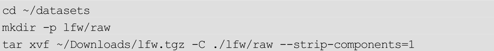
这里将下载的～/Downloads/lfw.tgz文件解压到了文件夹～/datasets/lfw/raw中，数据的结构应该类似于：
即每个文件夹代表着一个人的名字，在每个人的文件夹下是这个人所有的人脸图像，这样LFW数据集就被准备好了。
6.4.3 LFW数据库上的人脸检测和对齐
处理的第一步是使用 MTCNN进行人脸检测和对齐，并统一缩放到合适的大小。
MTCNN的实现主要在文件夹chapter_6/src/align中。其中，detect_face.py中定义了MTCNN的模型结构，由P-
Net、R-Net、O-Net三部分组成。这三部分网络已经提供好了预训练的模型，模型数据分别对应文件 det1.npy、det2.npy、det3.npy。align_dataset_mtcnn.py是使用MTCNN的模型进行人脸的检测和对齐的入口代码。该文件夹中还有两个文件 align_dataset.py 和align_dlib.py，它们都是使用 dlib 中的传统方法对人脸进行检测，性能比MTCNN稍差，在这里不再展开描述。
使用脚本align_dataset_mtcnn.py对LFW数据库进行人脸检测和对齐的方法是运行命令：
该命令会创建一个～/datasets/lfw/lfw_mtcnnpy_160 的文件夹，并将所有对齐好的人脸图像存放到这个文件夹中，数据的结构和原先～/datasets/lfw/raw 中相同。参数—image_size 160—
margin 32 的含义是在MTCNN检测得到的人脸框的基础上缩小32像素（训练时使用的数据偏大），并缩放到160×160大小。因此最后得到的对齐后的图像都是160×160像素的。这样的话，就成功地从原始图像中检测并对齐了人脸。
6.4.4 使用已有模型验证LFW数据库准确率
项目原作者提供了一个预训练的模型。该模型使用的卷积网络结构是Inception ResNet v1，训练数据使用了一个非常大的人脸数据集MS-
Celeb-1M，训练好的模型在LFW上可以到达 99.2%左右的正确率。下载该模型后[2]
，将文件解压到目录～/models/facenet/下。解压后，应该得到一个～/models/facenet/20170512-110547目录，其中有以下4个文件（读者可以将模型放到其他文件夹中，不过需要自行更改以下代码的对应部分）：
之后，运行下面的代码，可以在对齐好的 LFW数据库中验证已有模型的正确率：
最终得到的结果是：
由此，验证了模型在LFW上的准确率（Accuracy）是99.2%。
6.4.5 在自己的数据上使用已有模型
当然，在实际应用过程中，还会关心如何在自己的图像上应用已有模型。下面就以计算人脸之间的距离为例，展示如何将模型应用到自己的数据上。
假设现在有三张图片./test_imgs/1.jpg、./test_imgs/2.jpg、./test_imgs/3.jpg，这三张图片中各含有一个人的人脸，希望计算它们两两之间的距离。使用compare.py就可以实现，运行下面的代码：
得到结果类似于：
compare.py首先会使用MTCNN在原始图片中进行检测和对齐：
对于返回的 images，可以将它输入到已经训练好的模型中计算特征了，使用的代码为：
得到的emb存储了每个图像的“特征”。得到了特征，剩下的问题解决起来就非常简单了。这里是对特征计算两两之间的距离以得到人脸之间的相似度。对应的代码如下所示：
compare.py只是简单地计算了人脸之间的两两距离，读者可以根据得到的特征 emb 将程序应用到其他方面。例如在人脸识别应用中，常常会被给定一张人脸图片，要求在某一个人脸数据库中检测与之最相似的图像。此时，就可以先对人脸数据库中的所有图片先计算一遍特征emb，并把这些特征保存下来，接着只需对给定人脸图片计算特征，并找出与之距离最近的特征即可，相关程序读者可以自行设计完成。
6.4.6 重新训练新模型
在第6.4.3～6.4.5节中，介绍了如何使用预训练的模型验证在LFW数据库上的正确率，以及识别用户自己的图像，本节介绍如何重新训练一个模型。
从头训练一个新模型需要非常多的训练数据，这里使用的是CASIA-WebFace数据集，该数据集包含了10575个人的494414张图像。CASIA-
WebFace数据集需要研究机构自行申请，申请地址在http：//www.cbsr.ia.ac.cn/english/CASIA-WebFace-
Database.html。
获得CASIA-
WebFace数据集后，将它解压到～/datasets/casia/raw目录中。此时文件夹～/datasets/casia/raw/中的数据结构应该类似于：
其中，每个文件夹代表一个人，文件夹中对应这个人的所有人脸图片。与LFW数据集类似，同样先利用MTCNN对原始图像进行人脸检测和对齐，对应的代码为：
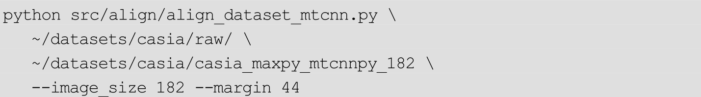
对齐后的人脸图像存放在目录～/datasets/casia/casia_maxpy_mtcnnpy_182下。所有的图像像素都是182×182。最终网络的输入图像像素是160×160，之所以这一步生成182×182的图像，是为了留出一定空间给数据增强的裁剪环节。会在182×182像素的图像上随机裁出160×160的区域，再送入神经网络进行训练。
使用下面的命令即可开始训练：
这里涉及的参数非常多，读者不必担心，下面会一一来进行说明。首先是文件src/train_softmax.py，它的功能是使用第6.2.2节中讲解的中心损失来训练模型。之前已经讲过，单独使用中心损失的效果不好，必须和 Softmax损失配合使用，所以对应文件名是train_softmax.py。其他参数的含义如下：
●—logs_base_dir～/logs/facenet/：将会把训练日志保存到～/logs/facenet/中。在运行时，会在～/logs/facenet/文件夹下新建一个以当前时间命名的目录，如20170621-114414，最终的日志会写在～/logs/facenet/20170621-114414中。所谓日志文件，实际上就是TensorFlow中的events文件，包含当前损失、当前训练步数、当前学习率等信息，可以使用TensorBoard查看这些信息。
●—models_base_dir～/models/facenet/：最终训练好的模型就保存在～/models/facenet/目录下。在运行时同样会创建一个以当前时间命名的文件夹，训练好的模型就会被保存在类似～/models/facenet/20170621-114414的目录下。
●—data_dir～/datasets/casia/casia_maxpy_mtcnnpy_182：训练数据的位置。这里使用之前已经对齐好的CASIA-
WebFace数据。
●—image_size 160：输入网络的图片尺寸是160×160像素。
●—model_def models.inception_resnet_v1：比较关键的一个参数，它指定了训练的CNN的结构为inception_resnet_v1。项目支持的所有CNN结构在src/models目录下。共支持inception_resnet_v1、inception_resnet_v2、squeezenet 三个模型，其中前两个模型较大，最后一个模型较小。 如果使用 --model_def models.inception_resnet_v1
后，出现内存或显存消耗光的情况，可以将其替换为 --model_def models.squeezenet ，来训练一个较小的模型。
●—lfw_dir～/datasets/lfw/lfw_mtcnnpy_160：指定LFW数据集的位置。如果输入这个参数，每次执行完一个epoch，就会在LFW数据集上执行一次测试，并将测试后的正确率写到日志文件中。
●—optimizer RMSPROP：指定使用的优化方法。
●—learning_rate-1：原意是指定学习率，但这里指定了负数，在程序中将忽略这个参数，而使用后面的—
learning_rate_schedule_file参数规划学习率。
●—max_nrof_epochs 80：表示最多会跑80个epoch。
●—keep_probability 0.8：在全连接层中，加入了 dropout，这个参数表示dropout中连接被保持的概率。
●—random_crop—random_flip：这两个参数表示在数据增强时会进行随机的裁剪和翻转。
●—learning_rate_schedule_filedata/learning_rate_schedule_classifier_casia.txt：在之前指定了
—learning_rate-1，因此最终的学习率将由参数—
learning_rate_schedule_file决定。这个参数指定了一个文件，该文件的内容为：

也就是说在开始时一直使用 0.1 作为学习率，而运行到第 65 个 epoch时使用0.01的学习率，运行第77个epoch时使用0.001的学习率。由于一共只运行80个epoch，因此最后的1000：0.0001实际不会生效。
●—weight_decay 5e-5：所有变量的正则化系数。
●—center_loss_factor 1e-2：中心损失和SoftMax损失的平衡参数。
●—center_loss_alfa 0.9：中心损失的内部参数。
运行上述命令后即可开始训练，屏幕会打出类似下面的信息：
其中，Epoch：[0][7/1000]表示当前为第0个epoch以及在当前epoch内的训练步数。Time表示在这一步消耗的时间，最后是损失相关的信息。
可以运行 TensorBoard 对训练情况进行监控。将目录切换至～/logs/facenet/＜开始训练时间＞文件夹中，就可以看到生成的events文件。打开TensorBoard的命令为：
打开http：//localhost：6006，可以方便地监控训练情况。图6-13展示了整个训练过程中损失的变化情况（训练的模型为squeezenet）：
图6-13 训练损失的变化情况
与之对应的，每个 epoch结束时程序还会在 LFW数据库中自动做一次验证，对应的准确率的变化曲线如图6-14所示。
图6-14 训练时在LFW数据库上的验证准确率
6.4.7 三元组损失和中心损失的定义
最后，来分析代码中是如何定义三元组损失和中心损失的。
三元组损失的定义在文件src/facenet.py中，对应的函数为triplet_loss（）：
输入的 anchor、positive、negative 分别为随机选取的人脸样本的特征、anchor的正样本的特征、anchor的负样本的特征，它们的形状都是（batch_size，feature_size）。batch_size很好理解，feature_size是网络学习的人脸特征的维数。对应到三元组损失的公式
中的话，anchor的每一行就是一个
，positive的每行就是相应正样本的 ，negative的每行就是负样本
。先来分别计算正样本和负样本到anchor 的 L2 距离。变量 pos_dist 就是 anchor 到各自正样本之间的距离 ，变量neg_dist是anchor到负样本的距离
。接下来，用pos_dist减去neg_dist再加上一个alpha，最终损失只计算大于0的部分，这和公式
是完全相符的。
再来看中心损失的定义，同样是在文件src/facenet.py中，对应的函数为center_loss（）：
输入参数features是样本的特征，它的形状为（batch_size，feature_size）。label 为这些样本各自的类别标签号（即属于哪一个人），它的形状为（batch_size，）。alfa是一个超参数，它是0～1之间的一个浮点数。nrof_classes是一个整数，它表示全部训练集中样本的类别总数。
定义中心损失时，首先会根据各个样本的标签取出相应的类别中心centers_batch，centers_batch的形状和features完全一致，中心损失就是它们之间的 L2 距离。这与第 6.2.2 节中的中心损失的公式
只相差了一个比例系数。此外，程序还会计算centers_batch和features的差值diff，根据 diff 来更新类别中心。超参数 alfa 可以控制更新时的幅度。详细的流程可以参考注释来阅读源码。
6.5 总结
在本章中，首先分两部分介绍了使用深度学习进行人脸识别的基本原理，一是可以完成人脸检测和人脸对齐任务的MTCNN，二是使用合适损失来优化卷积神经网络以提取合适的人脸特征。接着，学习了如何在 TensorFlow中实践上述内容。
拓展阅读
MTCNN是常用的人脸检测和人脸对齐模型，读者可以参考论文Joint Face Detection and Alignment using Multi-
task Cascaded Convolutional Networks了解其细节。
训练人脸识别模型通常需要包含大量人脸图片的训练数据集，常用的人脸数据集有 CAISA-
WebFace（http：//www.cbsr.ia.ac.cn/english/CASIA-WebFace-Database.html）、VGG-
Face（http：//www.robots.ox.ac.uk/～vgg/data/vgg_face/）、MS-
Celeb-1M（https：//www.microsoft.com/en-us/research/project/ms-
celeb-1m-challenge-recognizing-one-million-celebrities-real-world/）、MegaFace
（http：//megaface.cs.washington.edu/）。更多数据集可以参考网站：http：//www.face-
rec.org/databases/。
关于 Triplet Loss 的详细介绍，可以参考论文 FaceNet：A Unified Embedding for Face Recognition and Clustering，关于Center Loss的详细介绍，可以参考论文A Discriminative Feature Learning Approach for Deep Face Recognition。
[1]
本节的程序参考了项目https：//github.com/davidsandberg/facenet。
[2]
下载地址为https：//drive.google.com/file/d/0B5MzpY9kBtDVZ2RpVDYwWmxoSUk。下载解压后会有4个文件，在随书的数据的chapter_6_data/文件夹中同样提供了这4个文件。读者可将其复制到文件夹～/models/facenet/20170512-110547中。
第7章 图像风格迁移
所谓图像风格迁移，是指利用算法学习著名画作的风格，然后再把这种风格应用到另外一张图片上的技术。著名的图像处理应用 Prisma 是利用风格迁移技术，将普通用户的照片自动变换为具有艺术家的风格的图片。本章会介绍这项技术背后的原理，此外，还会使用 TensorFlow 实现一个快速风格迁移的应用。
7.1 图像风格迁移的原理
7.1.1 原始图像风格迁移的原理
在学习原始的图像风格迁移之前，可以先复习第 2 章讲过的 ImageNet图像识别模型VGGNet。
事实上，可以这样理解VGGNet的结构：前面的卷积层是从图像中提取“特征”，而后面的全连接层把图片的“特征”转换为类别概率。其中，VGGNet中的浅层（如conv1_1，conv1_2），提取的特征往往是比较简单的（如检测点、线、亮度），VGGNet中的深层（如conv5_1，conv5_2），提取的特征往往比较复杂（如有无人脸或某种特定物体）。
VGGNet的本意是输入图像，提取特征，并输出图像类别。图像风格迁移正好与其相反， 输入的是特征，输出对应这种特征的图片 ，如图7-1所示。
图7-1 图像风格迁移和对图像提取特征的过程对比
具体来说，风格迁移 使用卷积层的中间特征还原出对应这种特征的原始图像。 如图 7-2a 所示，先选取一幅原始图像，经过 VGGNet 计算后得到各个卷积层的特征。接下来，根据这些卷积层的特征，还原出对应这种特征的原始图像。图像b、c、d、e、f分别为使用卷积层conv1_2、conv2_2、conv3_2、conv4_2、conv5_2的还原图像。可以发现：浅层的还原效果往往比较好，卷积特征基本保留了所有原始图像中形状、位置、颜色、纹理等信息；深层对应的还原图像丢失了部分颜色和纹理信息，但大体保留原始图像中物体的形状和位置。
还原图像的方法是梯度下降法。设原始图像为 ，期望还原的图像为
（即自动生成的图像）。使用的卷积是第l层，原始图像 在第l层的卷积特征为
。i表示卷积的第i个通道，j表示卷积的第 j个位置。通常卷积的特征是三维的，三维坐标分别对应（高，宽，通道）。此处不考虑具体的高和宽，只考虑位置 j，相当于把卷积“压扁”了。比如一个 10×10×32的卷积特征，对应1≤i≤32，1≤j≤100。对于生成图像
，同样定义它在l层的卷积特征为 。
图7-2 根据VGGNet卷积层的特征还原出对应的原始图像（续）
有了上面这些符号后，可以写出“内容损失”（Content Loss）。内容损失 的定义是
描述了原始图像 和生成图像
在内容上的“差异”。内容损失越小，说明它们的内容越接近；内容损失越大，说明它们的内容差距也越大。先使用原始图像
计算出它的卷积特征 ，同时随机初始化
。接着，以内容损失 为优化目标，通过梯度下降法逐步改变
。经过一定步数后，得到的 是 希望的还原图像了。在这个过程中，内容损失
应该是越来越小的。
除了还原图像原本的“内容”之外，另一方面，还希望还原图像的“风格”。那么，图像的“风格”应该怎么样来表示呢？一种方法是使用图像的卷积层特征的Gram矩阵。
Gram矩阵是关于一组向量的内积的对称矩阵，例如，向量组 的Gram矩阵是
通常取内积为欧几里得空间上的标准内积，即 。
设卷积层的输出为 ，那么这个卷积特征对应的Gram矩阵的第i行第j个元素定义为
设在第l层中，卷积特征的通道数为Nl ，卷积的高、宽乘积数为Ml ，那么 满足1≤i≤Nl ，1≤j≤M l。G实际是向量组 的Gram矩阵，其中 。
此处数学符号较多，因此再举一个例子来加深读者对此Gram矩阵的理解。假设某一层输出的卷积特征为 10×10×32，即它是一个宽、高均为 10，通道数为 32的张量。 表示第一个通道的特征，它是一个 100维的向量，
表示第二个通道的特征，它同样是一个100维的向量，它对应的Gram矩阵G是
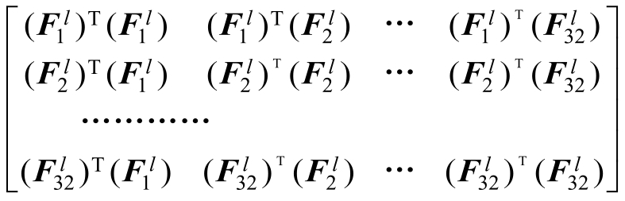
Gram矩阵可以在一定程度上反映原始图片中的“风格”。仿照“内容损失”，还可以定义一个“风格损失”（Style Loss）。设原始图像为 ，要还原的风格图像为
，先计算出原始图像某一层卷积的Gram矩阵为Al ，要还原的图像 经过同样的计算得到对应卷积层的Gram矩阵是G l
，风格损失定义为
分母上的
是一个归一化项，目的是防止风格损失的数量级相比内容损失过大。在实际应用中，常常利用多层而非一层的风格损失，多层的风格损失是单层风格损失的加权累加，即
，其中wl 表示第l层的权重。
利用风格损失，可以还原出图像的风格了。如图7-3所示，尝试还原梵高的著名画作《星空》的风格。
图7-3 利用“风格损失”还原的图像
其中，图7-3b是由conv1_1的风格损失还原的，图7-3c是由conv1_1，conv2_1两层的风格损失还原的，图7-3d是conv1_1，conv2_1，conv3_1，图7-3e为conv1_1，conv2_1，conv3_1，conv4_1风格损失还原的，图7-3f为 conv1_1，conv2_1，conv3_1，conv4_1，conv5_1 风格损失还原的。使用浅层还原的“风格图像”的纹理尺度往往比较小，只保留了颜色和局部的纹理（如图 7-3b）；组合深层、浅层还原出的“风格图像”更加真实且接近于原图片（如图7-3f）。
总结一下，到目前为止介绍的两个内容：
●利用内容损失还原图像内容。
●利用风格损失还原图像风格。
那么，可不可以将内容损失和风格损失组合起来，在还原一张图像的同时还原另一张图像的风格呢？答案是肯定的，这是图像风格迁移的基本算法。
设原始的内容图像为 ，原始的风格图像为
，待生成的图像为 。希望 可以保持内容图像
的内容，同时具备风格图像 的风格。因此组合
的内容损失和 的风格损失，定义总的损失函数为
α，β是平衡两个损失的超参数。如果α偏大，还原的图像会更接近
中的内容，如果β偏大，还原的图像会更接近 的风格。使用总的损失函数可以组合
的内容和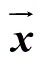 的风格，这实现了图像风格的迁移。部分还原的图像如图7-4所示。
图7-4 组合内容损失和风格损失还原的图像
以上是原始的图像风格迁移的基本原理。事实上，原始的图像风格迁移速度非常慢，在 CPU 上生成一张图片需要数十分钟甚至几个小时，即使在GPU 上也需要数分钟才能生成一张较大的图片，这大大限制了这项技术的使用场景。速度慢的原因在于，要用总损失
优化图片
，这意味着生成一张图片需要几百步梯度下降法的迭代，而每一步迭代都需要耗费大量的时间。从另一个角度看，优化
可以看作是一个“训练模型”的过程，以往都是针对模型参数训练，而这里训练的目标是图片
，而训练模型一般都比执行训练好的模型要慢得多。下一节将会讲到更实用的快速图像风格迁移，它把原来的“训练”的过程变成了一个“执行”的过程，因此大大加快了生成风格化图片的速度。
7.1.2 快速图像风格迁移的原理
原始的图像风格迁移用一个损失 来衡量
是否成功组合了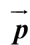 的内容和 的风格。然后以
为目标，用梯度下降法来逐步迭代 。因为在生成图像的过程中需要逐步对
做优化，所以速度比较慢。
快速图像风格迁移的方法是： 不使用优化的方法来逐步迭代生成 ，而是使用一个神经网络直接生成
。对应的网络结构如图7-5所示。
图7-5 快速图像风格迁移的网络结构
整个系统由两个神经网络组成，它们在图中由两个虚线框分别标出。左边的是图像生成网络，右边是损失网络。损失网络实际上是VGGNet，这与原始的风格迁移是一致的。同第 7.1.1 节一样，利用损失网络来定义内容损失、风格损失。这个损失用来训练图像生成网络。图像生成网络的职责是生成某一种风格的图像，它的输入是一个图像，输出同样是一个图像。由于生成图像只需要在生成网络中计算一遍，所以速度比原始图像风格迁移提高很多。
同样使用数学符号严格地阐述上面的过程：设输入的图像为
，经过图像生成网络生成的图像为 在内容上应该与原始的内容图像
接近，因此可以利用损失网络定义内容损失 ，内容损失使用的是VGG-16的 relu3_3层输出的特征，对应图7-5中的 。另一方面，我们还希望
具有目标风格图像 的风格，因此又可以定义一个风格损失 。定义风格损失时使用了 VGG-16 的四个中间层 relu1_2，relu2_2，relu3_3，relu4_3，对应图中的
。定义风格损失时使用了 VGG-16 的四个中间层 relu1_2，relu2_2，relu3_3，relu4_3，对应图中的
。同样组合这两个损失得到一个总损失
。利用总损失可以训练图像生成网络。训练完成后直接使用图像生成网络生成图像。值得一提的是，在整个训练过程中，一般只固定使用一种风格
，而内容图像 取和输入 一样，即 。
表7-1比较了原始图像风格迁移与快速图像风格迁移。
表7-1 原始图像风格迁移和快速图像风格迁移的比较

7.2 在TensorFlow中实现快速风格迁移
在本节中，首先会介绍代码的结构，然后再讲解如何使用预训练的模型，以及如何自己训练模型，最后说明该项目的一些实现细节。
快速图像风格迁移的项目结构见表7-2。
表7-2 快速图像风格迁移的项目结构
这个项目建立在另一个开源项目TensorFlow Slim的基础上，TensorFlow Slim是基于TensorFlow的一个开源的图像分类库，它定义了常用的ImageNet模型，而其中的VGG16模型正是在定义损失网络时要用到的。
在运行项目前，请确保使用python 2.7版本和TensorFlow大于1.0的版本。并且需要安装pyyaml库，安装方法为：
7.2.1 使用预训练模型
在 chapter_7_data/中提供了 7 个预训练模型：wave.ckpt-done、cubist.ckpt-
done、denoised_starry.skpt-done、mosaic.ckpt-done、scream.ckpt-
done、feathers.ckpt-
done。回到源码目录chapter_7/，在其中新建一个models文件夹，然后把需要使用的模型文件复制到这个文件夹下，如models/wave.ckpt-
done。接下来运行下面的命令可以生成一张风格化图像了：
--model_file 后面指定了预训练的模型的文件位置。如果读者没有把预训练模型保存为models/wave.ckpt-
done，也可以自行替换为相应的文件位置。—image_file 表示需要进行风格化的图像，在这里指定的是 img 目录下名为test.jpg 的示例图像（见图 7-6），也可以使用自己的图像进行尝试，同样只需要指定合适的文件位置即可。
图7-6 示例图像（风格化之前，详见彩插）
运行上述命令后，成功风格化的图像会被写到generated/res.jpg。读者可以打开该文件进行查看。
除了模型 wave.ckpt-done，还可以运行其他的预训练模型。七个预训练模型及其风格化图片效果见表7-3。
表7-3 图像七个预训练模型及其风格化图片效果
续表
7.2.2 训练自己的模型
如何训练自己的图像生成模型？这里以wave模型为例，介绍训练模型的全过程。
在训练之前，需要完成两项前期准备工作。首先下载VGG16 模型，将下载到的压缩包解压后会得到一个vgg16.ckpt文件[1]
。在chapter_7/中新建一个文件夹pretrained，并将vgg16.ckpt复制到pretrained文件夹中。最后的文件路径是pretrained/vgg16.ckpt。另外，需要下载COCO数据集[2]
。将该数据集解压后会得到一个train2014 文件夹，其中应该含有大量jpg格式的图片。Windows用户请将该文件夹移动到chapter_7/中。Linux用户可以不用移动，只要在chapter_7/中使用下面的命令，建立到train2014 文件夹的符号连接可以了：
接下来可以训练模型了。以模型wave为例，对应的训练命令是：
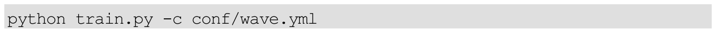
该命令的含义是利用已经写好的 conf/wave.yml 文件来训练模型。wave.yml为配置文件，内容为：
style_image：img/wave.jpg定义了原始图像风格图像的位置。naming和model_path两个量定义了最终的checkpoint和监控信息，events文件会被保存在models/wave文件夹下。content_weight和style_weight分别定义了内容损失和风格损失的权重。
读者如果希望训练新的“风格”，可以选取一张风格图片，并编写新的yml配置文件。其中，需要把style_image修改为新图片所在的位置，并修改对应的 naming。这样就可以进行训练了。最后，可以使用训练完成的checkpoint生成图片。在训练新的“风格”时，有可能会需要调整各个损失之间的权重。调整的方法在下一节中进行叙述。
7.2.3 在TensorBoard中监控训练情况
在训练过程中，可以打开 TensorBoard 监控训练情况。仍以 wave 模型为例：
访问http：//localhost：6006即可打开TensorBoard的主界面。训练时最先关心的应该是损失下降的情况。损失主要由风格损失、内容损失两项构成。展开loss选项卡可以看到损失的变化情况，如图7-7所示。
图7-7 训练时各个损失的变化情况
content_loss 和 style_loss 分别对应了内容损失和风格损失，中间的regularizer_loss可以暂时不用理会。最理想的状况是content_loss和style_loss随着训练不断地下降。在训练的初期可能会出现只有 style_loss 下降而content_loss 上升的情况，不过这是暂时的，最后两个损失都会出现较为稳定的下降。
打开页面最上方的IMAGES选项卡，下方标签为“origin”的图片是从训练集COCO中取到的原始图片，而上方标签为“generated”的是模型当前生成的图片，如图7-8所示。当图片质量稳定后，可以选择停止训练，取当前的checkpoint作为生成模型，也可以继续等待直到程序运行完。
图7-8 训练时在TensorBoard中监控模型生成的图片
当训练新的“风格”时，有时可能还会需要调整配置文件中的content_weight和style_weight。当content_weight过大时，观察到的generated图像会非常接近原始的origin图像。而style_weight过大时，会导致图像过于接近原始的风格图像，此时的 generated 图像如图 7-9 所示，几乎看不到origin图像的内容。在训练时，需要合理调整style_weight和content_weight的比重。
图7-9 style_weight过大时模型的生成效果
7.2.4 项目实现细节
最后讨论项目的细节。该项目使用了两个网络，即损失网络与图像生成网络。损失网络为VGG16模型，用的是TenorFlow Slim中已经写好的代码，图像生成网络可以自己进行定义。
1.损失网络、图像生成网络的定义与引用
损失网络使用TenorFlow Slim 的VGG16模型，它的实际定义位置是在nets/vgg.py文件中，不过没有必要知道它的详细源码，只需要了解是如何在训练过程中引用它的。
而图像生成网络在models.py中定义，它的关键代码如下：
图像生成网络的原理主要是先对图像进行卷积计算，然后再进行“反卷积”计算。相当于对图像进行编码，然后再还原为图像。在“反卷积”的过程中，一般使用转置卷积，但在这里可能会导致一些堆叠的噪声。此处，使用 resize_conv2d 来代替转置卷积，它的原理是先对图片放大，然后再进行卷积计算。此外，还有一些提高图像质量的小技巧。比如使用所谓的instance normalization代替常用的batch normalization。关于instance normalization、转置卷积的详细原理，读者可以参阅相关资料进行了解，这里不再详细展开了。
定义好图像生成网络和损失网络后，可以在训练时引用。相应的代码在train.py文件中：
2.内容损失和风格损失的定义
损失的定义基本由文件 loss.py 中的函数完成。先来介绍如何定义内容损失：
再看如何定义风格损失：
在train.py中，直接利用上面的函数可以得到总的损失：
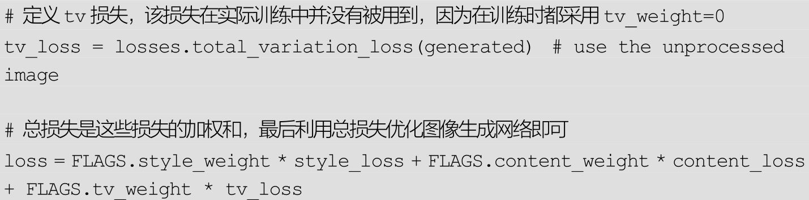
3.确定训练、保存的变量
在本项目中，只需要训练图像生成网络中的变量，而不需要训练损失网络中的变量。在把模型保存成checkpoint时，也只需要保存图像生成网络中的变量。TenorFlow 会默认训练、保存所有变量，因此必须把需要训练和需要保存的变量找出来，这也是本项目中的一个注意点。对应的代码同样在train.py中：
7.3 总结
本章首先详细介绍了原始图像风格迁移的基本原理，其中内容损失、风格损失两种损失函数的定义尤为关键。接着介绍了快速图像风格迁移的原理，并学习了如何使用TenorFlow实现快速图像风格迁移。最后一起研究了项目中的一些实现细节。相信通过本章的介绍，读者可以基本掌握风格迁移这一领域的基本思想与TenorFlow中相应的实现方法。
拓展阅读
关于第7.1.1节中介绍的原始的图像风格迁移算法，可以参考论文A Neural Algorithm of Artistic Style进一步了解其细节。关于第7.1.2节中介绍的快速风格迁移，可以参考论文 Perceptual Losses for Real-Time Style Transfer and Super-Resolution。
在训练模型的过程中，用Instance Normalization代替了常用的Batch Normalization，这可以提高模型生成的图片质量。关于 Instance Normalization 的细节，可以参考论文 Instance Normalization：The Missing Ingredient for Fast Stylization。
尽管快速迁移可以在GPU下实时生成风格化图片，但是它还有一个很大的局限性，即需要事先为每一种风格训练单独的模型。论文Arbitrary Style Transfer in Real-time with Adaptive Instance Normalization中提出了一种“Arbitrary Style Transfer”算法，可以为任意风格实时生成风格化图片，读者可以参考该论文了解其实现细节。
[1]
下载地址为http：//download.tensorflow.org/models/vgg_16_2016_08_28.tar.gz。在chapter_7_data/中也提供了解压好了的vgg16.ckpt文件。
[2]
下载地址为http：//msvocds.blob.core.windows.net/coco2014/train2014.zip。
第8章 GAN和DCGAN入门
GAN的全称为Generative Adversarial Networks，意为对抗生成网络。原始的GAN是一种无监督学习方法，它巧妙地利用“对抗”的思想来学习生成式模型，一旦训练完成后可以生成全新的数据样本。DCGAN 将 GAN 的概念扩展到卷积神经网络中，可以生成质量较高的图片样本。GAN 和DCGAN在各个领域都有广泛的应用，本章会先向读者介绍它们的原理，再介绍如何在TensorFlow中使用DCGAN生成图像，关于GAN和DCGAN的更多项目会在接下来的章节中进行介绍。
8.1 GAN的原理
GAN的基本原理其实非常简单。可以把GAN看作一个生成数据的工具，这里以生成图片数据为例进行讲解，实际GAN可以应用到任何类型的数据。
假设有两个网络，生成网络G（Generator）和判别网络D（Discriminator）。它们的功能分别是：
●G 负责生成图片，它接收一个随机的噪声 z，通过该噪声生成图片，将生成的图片记为G（z）。
●D负责判别一张图片是不是“真实的”。它的输入是x，x代表一张图片，输出D（x）表示x为真实图片的概率，如果为1，代表是真实图片的概率为100%，而输出为0，代表不可能是真实的图片。
在训练过程中，生成网络 G 的目标是尽量生成真实的图片去欺骗判别网络D。而D的目标是尽量把G生成的图片和真实的图片区分开来。这样，G和D构成了一个动态的“博弈”，这是GAN的基本思想。
最后博弈的结果是什么？在最理想的状态下，G可以生成足以“以假乱真”的图片G（z）。对于D来说，它难以判定 G生成的图片究竟是不是真实的，因此D（G（z））=0.5。此时得到了一个生成式的模型G，它可以用来生成图片。
下面用数学化的语言来描述这个过程。假设用于训练的真实图片数据是x，图片数据的分布为pdata
（x），之前说G能够“生成图片”，实际是G可以学习到的真实数据分布pdata （x）。噪声 z的分布设为pz （z），pz （z）是已知的，而pdata
（x）是未知的。在理想情况下，G（z）的分布应该尽可能接近pdata （x），G将已知分布的z变量映射到了未知分布x变量上。
根据交叉熵损失，可以构造下面的损失函数
V(D,G)=Ex~Pdata(x) [lnD(x)]+Ez~pz(z) [ln(1-D(G(z)))]
损失函数中的Ex～ Pdata （x）是指直接在训练数据 x 中取的真实样本，而Ez～pz（z）
是指从已知的噪声分布中取的样本。对于这个损失函数，需要认识下面几点：
●整个式子由两项构成。x表示真实图片，z 表示输入 G 网络的噪声，而G（z）表示G网络生成的图片。
●D（x）表示D网络判断真实图片是否真实的概率（因为x是真实的，所以对于D来说，这个值越接近1越好）。而D（G（z））是D网络判断G生成的图片是否真实的概率。
●G的目的：G应该希望自己生成的图片“越接近真实越好”。也是说，G希望D（G（z））尽可能得大，这时V（D，G）会变小。
●D的目的：D的能力越强，D（x）应该越大，D（G（x））应该越小。因此D的目的和G不同，D应该希望V（D，G）越大越好。
在实际训练中，使用梯度下降法，对 D 和 G 交替做优化即可，详细的步骤为：
第1步：从已知的噪声分布pz（z） 中选出一些样本{z（1） ，z（2） ，….，z（m） }。
第2步：从训练数据中选出同样个数的真实图片{x（1） ，x（2） ，….，x（m） }。
第 3 步：设判别器 D 的参数为θd ，求出损失关于参数的梯度 ，对θd 更新时加上该梯度。
第 4 步：设生成器 G 的参数为θg ，求出损失关于参数的梯度 ，对θg 更新时减去该梯度。
在上面的步骤中，每对D的参数更新一次，便接着更新一次G的参数。有时还可以对 D的参数更新 k次后再更新一次 G的参数，这些要根据训练的实际情况进行调整。另外，要注意的是，由于D是希望损失越大越好，G是希望损失越小越好，所以它们一个是加上梯度，一个是减去梯度。
当训练完成后，可以从Pz （z）随机取出一个噪声，经过G运算后可以生成符合Pdata （x）的新样本。
8.2 DCGAN的原理
DCGAN的全称是Deep Convolutional Generative Adversarial Networks，意即深度卷积对抗生成网络，它是由 Alec Radford 在论文 Unsupervised Representation Learning with Deep Convolutional Generative Adversarial Networks中提出的。从名字上来看，它是在GAN的基础上增加深度卷积网络结构，专门生成图像样本。下面一起来学习DCGAN的原理。
上一节详细介绍了D、G的输入输出和损失的定义，但关于D、G本身的结构并没有做过多的介绍。事实上，GAN 并没有对 D、G 的具体结构做出任何限制。DCGAN中的 D、G的含义以及损失都和原始 GAN 中完全一致，但是它在D和G中采用了较为特殊的结构，以便对图片进行有效建模。
对于判别器D，它的输入是一张图像，输出是这张图像为真实图像的概率。在 DCGAN 中，判别器 D 的结构是一个卷积神经网络，输入的图像经过若干层卷积后得到一个卷积特征，将得到的特征送入Logistic函数，输出可以看作是概率。
对于生成器G，它的网络结构如图8-1所示。
图8-1 DCGAN中生成器G的网络结构
G的输入是一个100维的向量z。它是之前所说的噪声向量。G网络的第一层实际是一个全连接层，将100维的向量变成一个4×4×1024维的向量，从第二层开始，使用转置卷积做上采样，逐渐减少通道数，最后得到的输出为64×64×3，即输出一个三通道的宽和高都为64的图像。
此外，G、D还有一些其他的实现细节：
●不采用任何池化层（Pooling Layer），在判别器D中，用带有步长（Stride）的卷积来代替池化层。
●在G、D中均使用Batch Normalization帮助模型收敛。
●在G中，激活函数除了最后一层都使用ReLU函数，而最后一层使用tanh函数。使用tanh函数的原因在于最后一层要输出图像，而图像的像素值是有一个取值范围的，如0～255。ReLU函数的输出可能会很大，而tanh函数的输出是在-1～1之间的，只要将tanh函数的输出加1再乘以127.5，可以得到0～255的像素值。
●在D中，激活函数都使用Leaky ReLU作为激活函数。
以上是DCGAN中D和G的结构，损失的定义以及训练的方法和第8.1节中描述的完全一致。Alec Radford使用DCGAN在LSUN数据集上进行无监督学习，LSUN是一个场景理解图像数据集，主要包含了卧室、厨房、客厅、教室等场景图像。在LSUN的卧室数据集上，DCGAN生成的图像如图8-2所示。

图8-2 在LSUN数据集上DCGAN的生成结果
除了使用 G生成图像之外，还可以将 G的输入信号 z看作生成图像的一种表示。假设图片A对应的输入为zA ，图片B对应的输入为zB ，可以在zA 和 zB 之间做插值，并使用 G 生成每一个插值对应的图片，对应的结果如图8-3所示。每一行的最左边可以看作图片A，而每一行的最右边可以看作图片B，DCGAN可以让生成的图像以比较自然的方式从A过渡到B，并保证每一张过渡图片都是卧室的图片。如图8-3所示的第六行中，一间没有窗户的卧室逐渐变化成了一间有窗户的卧室，在第四行中，一间有电视的卧室逐渐变化成了一间没有电视的卧室，原来电视的位置被窗帘取代，所有这些图片都是机器自动生成的！
图8-3 利用DCGAN做图像表示的“插值”
实验证明，不仅可以对输入信号z进行过渡插值，还可以对它进行更复杂的运算。如图 8-4 所示，用代表“露出笑容的女性”的 z，减去“女性”，再加上“男性”，最后得到了“露出笑容的男性”。
图8-4 利用DCGAN做图像表示的运算
8.3 在TensorFlow中用DCGAN生成图像
本节会以GitHub上的一个DCGAN项目[1]
介绍TensorFlow中的DCGAN实现。利用该代码主要去完成两件事情，一是生成MNIST手写数字，二是在自己的数据集上训练。还会穿插讲解该项目的数据读入方法、数据可视化方法。
8.3.1 生成MNIST图像
先做一个简单的小实验：生成MNIST手写数字。
运行如下代码会下载MNIST数据集到data/mnist文件夹中。
download.py依赖一个名为tqdm的库，如果运行报错，可以先使用pip install tqdm安装该库。
注意： 当下载数据集时，如果出现网络问题导致下载中断，在再次下载时必须先删除 data/mnist文件夹，否则 download.py会自动跳过下载。
下载完成后，使用下面的命令即可开始训练：
参数的含义会在下面的小节中进行详细的介绍，先来关注运行该命令后屏幕上显示的信息：
Epoch[0] [0/1093]表示当前为第0个epoch，每个epoch内有1093步，当前为第0步。默认会在MNIST数据集上运行25个epoch。每隔一段时间，程序会把生成的模型保存在checkpoint/mnist_64_28_28/文件夹中。此外，每隔100步，程序都会使用当前的G生成图像样本，并将图像保存在samples文件夹中。这些自动生成的图像以 train开头，如 train_20_0299.png表示是第 20个 epoch第 299步生成的图像。根据这些图像，可以得知当前生成G的性能，从而决定是否可以停止训练。
运行完25个epoch时，生成的效果如图8-5所示。
图8-5 在MNIST数据集上训练产生的样本
8.3.2 使用自己的数据集训练
本节介绍如何使用自己的图片数据集进行训练。首先需要准备好图片数据并将它们裁剪到统一大小。在数据目录chapter_8_data/中已经准备好了一个动漫人物头像数据集faces.zip。在源代码的data目录中新建一个anime目录（如果没有data目录可以自行新建），并将faces.zip中所有的图像文件解压到anime目录中。最后形成的项目结构为：
在项目根目录中运行下面的命令即可开始训练：
这里将参数设置为一共会训练300个epoch，实际可能并不需要那么多，读者同样可以观察samples文件夹下生成的样本图像来决定应该训练多少个epoch。
在训练1个epoch后，产生的样本图像如图8-6所示，此时只有模糊的边框（产生的图片在samples文件夹中）。
图8-6 使用自己的数据集训练1个epoch的生成效果
在训练5个epoch后，产生的样本如图8-7所示。
在训练 50 个 epoch 后，产生的样本如图 8-8所示，此时模型已经基本收敛了。
图8-7 使用自己的数据集训练5个epoch的生成效果
图8-8 GAN模型自动生成的图像（详见彩插）
使用已经训练好的模型进行测试的对应命令为：
8.3.3 程序结构分析：如何将图像读入模型
如果读者对第 8.3.1、8.3.2 节中的命令仍有所疑惑，本节，会结合程序源码，对这些输入参数进行详细的分析。项目所有的功能入口为文件main.py，因此，先来看下main.py的大体结构。在这个文件中，首先定义了一些参数，然后将参数统一保存到变量 FLAGS 中，接着根据这些参数调用 DCGAN（）新建一个模型，并保存到变量dcgan中。接下来的代码为：
根据这段代码，在输入命令时，如果指定了—train，会进行训练，如果不指定—
train，会载入已保存的模型，无论是进行训练还是不进行训练，都会调用visualize方法进行可视化。
以上是该项目的整体逻辑。下面介绍输入的命令行和输入图像有关的参数处理。即—
input_height、—input_width、—output_height、—output_width、—dataset、—crop、—input_fname_pattern这些参数。
首先是—dataset、—input_fname_pattern两个参数。在model.py中，找到下列代码：
对于MNIST数据，程序是使用一个load_mnist（）函数单独处理的。而对于自己的数据集，程序会在data文件夹下根据dataset和input_fname_pattern两个变量找图像文件。这里的 self.dataset_name 是输入参数 dataset，self.input_fname_pattern 是输入参数 input_fname_pattern。如输入 dataset 为anime、input_fname_pattern为.jpg，程序会自动寻找路径为data/anime/.jpg的所有图片，即data/anime目录下的所有jpg图像。
读入所有图片的文件名后，又会做哪些操作呢？这涉及—
input_height、—input_width、—crop、—output_height、—output_width 五个参数。首先要说明的一点是，如果输入时不指定—input_width，那么它的值会和—input_height的值相同；同样，如果不指定—
output_width，那么它的值会和—output_height相同。即main.py中的：
读入的图片文件名首先经过以下操作（该部分代码在main.py中）：
self.data是之前说的存放所有图像文件路径的列表，每次都从该列表中取出 batch_size大小的子集 batch_files，对于 batch_files中的每一个文件路径，调用get_image函数进行处理。
get_image函数在utils.py中，在此直接列出所有用到的函数：
get_image 函数实际调用了 transform 函数。transform 函数又使用了center_crop函数。而center_crop函数的功能是：在图片中心截取高为crop_h像素，宽为crop_w像素的图片，再缩放为resize_h乘resize_w的大小。
再看transform函数，对输入图像的处理有两种方法。当指定—
crop后，会调用center_crop函数。根据调用关系，这里的input_height和input_width是输入的—input_height和—
input_width参数，而resize_height和resize_width是输入的—output_height和—
output_width参数。因此，实际是在图像中心截取高为 input_height 乘以 input_width 的小块，并放缩到 output_height 乘以output_width的大小。此外，如果不指定参数—
crop，不去截取图像，而是直接缩放到output_height乘output_width。
这样的话，之前的执行指令非常好理解了。下面的命令：
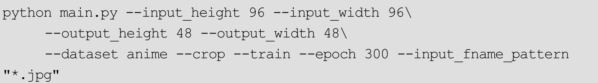
对应的含义是：
●找出data/anime/下所有jpg格式的图像。
●将这些图像中心截取96×96的小块，并缩放到48×48像素。
●因为有—train参数，所以执行训练。
最后还有一个参数—epoch 没有解释，这个参数含义很好理解，代表执行的epoch数目。
8.3.4 程序结构分析：可视化方法
在训练好模型或者载入已有模型后，都会调用visualize方法进行可视化，即main.py中的如下代码：
visualize 函数在 utils.py 中。简单查看后可以发现该函数的输入参数option支持0、1、2、3、4一共5个值。在main.py中直接更改OPTION的值可以使用不同的可视化方法。这里以option=0和option=1为例进行介绍。
option=0的可视化方法：
程序首先根据 batch_size 的值计算出一个 image_frame_dim。这个值实际上是batch_size开方后再向上取整的结果。如默认的batch_size为64，那么对应的image_frame_dim值是8。
接着随机生成一些噪声z并保存为变量z_sample，它的形状为（batch_size，z_dim），后者z_dim是单个噪声本身具有的维度，默认为100，这也和原始论文中的网络结构保持一致。在默认情况下，将生成一个形状为（64，100）的z_sample，z_sample 中的每个值都在-0.5～0.5 之间。将它送入网络中，可以得到64张图像并放在samples中，最后调用save_images函数将64张图像组合为一张8×8的图像，如图8-9所示。
图8-9 使用option=0的可视化方法产生的图片
再看option=1的可视化方法：
option=1的可视化方法会生成100张和option=0中差不多的图片。每个z_sample中的数字大多数都是0，其中第idx（idx从0～99）列变成一个事先定义好的向量 values。因此每个 z_sample 中各个图片对应的改变很小。图8-10展示了使用option=1进行可视化生成的图片（变化比较细微）。
图8-10 GAN模型隐空间中的插值可视化（详见彩插）
剩下的几种可视化方法读者可以自行参阅源码进行分析。注意option=2、3、4的几种方法都依赖一个名为moviepy的库。可以使用pip install moviepy安装，并保证 import moviepy.editor as mpy不会出错。
8.4 总结
本章首先讲解了GAN和DCGAN的原理，接着介绍了一个非常有趣的项目：在 TensorFlow 中利用 DCGAN 生成图片。最后，以输入图像和可视化方法两部分为例，分析了DCGAN项目的源码。希望读者能够通过本章的介绍，掌握GAN的思想以及DCGAN的使用方法。
拓展阅读
本章只讲了 GAN 结构和训练方法，在提出 GAN 的原始论文Generative Adversarial Networks中，还有关于GAN收敛性的理论证明以及更多实验细节，读者可以阅读来深入理解GAN的思想。
有关 DCGAN 的更多细节，可以阅读其论文 Unsupervised Representation Learning with Deep Convolutional Generative Adversarial Networks。
除了本章所讲的GAN和DCGAN外，还有研究者对原始GAN的损失函数做了改进，改进后的模型可以在某些数据集上获得更稳定的生成效果，相关的论文有：Wasserstein GAN、Least Squares Generative Adversarial Networks。
相比一般的神经网络，训练 GAN 往往会更加困难。Github 用户Soumith Chintala 收集了一份训练 GAN 的技巧清单：https：//github.com/soumith/ganhacks，在实践中很有帮助。
[1]
https://github.com/carpedm20/DCGAN-tensorflow.
第9章 pix2pix模型与自动上色技术
前一章介绍了 GAN 的基本原理以及如何使用 GAN 来生成样本，还有用于生成图像样本的一种特殊的GAN结构——DCGAN。本章会介绍cGAN，与原始 GAN 使用随机噪声生成样本不同，cGAN 可以根据指定标签生成样本。接着会介绍pix2pix模型，它可以看作是cGAN的一种特殊形式。最后会做一个实验：在TensorFlow中使用pix2pix模型对灰度图像自动上色。
9.1 cGAN的原理
使用GAN可以对样本进行无监督学习，然后生成全新的样本。但是这里还有一个问题： 虽然能生成新的样本，但是却无法确切控制新样本的类型 。如使用 GAN 生成 MNIST 数字，虽然可以生成数字，但生成的结果是随机的（因为是根据输入的随机噪声生成图片），没有办法控制模型生成的具体数字。
如果希望控制生成的结果，例如给生成器输入数字1，那么它只会生成数字为1的图像，应该怎么办呢？这实际上是cGAN可以解决的问题。
先来回忆GAN的输入和输出：
●生成器G，输入为一个噪声z，输出一个图像G（z）。
●判别器D，输入为一个图像x，输出该图像为真实的概率D（x）。
cGAN的全称为Conditional Generative Adversarial Networks，即条件对抗生成网络，它为生成器、判别器都额外加入了一个条件y，这个条件实际是希望生成的标签。生成器G必须要生成和条件y匹配的样本，判别器不仅要判别图像是否真实，还要判别图像和条件y是否匹配。cGAN的输入输出为：
●生成器G，输入一个噪声z，一个条件y，输出符合该条件的图像G（z|y）。
●判别器D，输入一张图像x，一个条件y，输出该图像在该条件下的真实概率D（x|y）。
cGAN的基本结构如图9-1所示。
图9-1 cGAN的基本结构
在原始的GAN中，优化目标为：
在cGAN中，只需要做简单的修改，向优化目标中加入条件y即可：
V(D,G)=Ex~pdata [lnD(x|y)]+Ez~pz(z) [ln(1-D(G(z|y)))]
以MNIST为例，生成器G和判别器D的输入输出是
●G输入一个噪声z，一个数字标签y（y的取值范围是0～9），输出和数字标签相符合的图像G（z|y）。
●D输入一个图像x，一个数字标签y，输出图像和数字符合的概率D（x|y）。
显然，在训练完成后，向 G 输入某个数字标签和噪声，可以生成对应数字的图像。
9.2 pix2pix模型的原理
都知道所谓的“机器翻译”，比如将一段中文翻译成英文。在图像领域，也有类似的“图像翻译”（Image-to-Image Translation）问题，如图9-2所示。
图9-2 “图像翻译”问题的输入和输出
●将街景的标注图像变为真实照片。
●将建筑标注图像转换为照片。
●将卫星图像转换为地图。
●将白天的图片转换为夜晚的图片。
●将边缘轮廓线转换为真实物体。
使用传统的方法很难解决这类图像翻译问题。而这个小节要介绍的pix2pix模型使用了cGAN，可以用同样的网络结构处理这类问题。
pix2pix模型的结构如图9-3所示。
图9-3 pix2pix模型的结构
它和cGAN的结构类似，同样是由生成器G、判别器D两个网络组成。设要将Y类型的图像转换为X类型的图像，G、D的任务分别为：
●G的输入是一个Y类图像y（这个y实际上等同于上一节所讲的cGAN的y），输出为生成图像G（y）。
●D的输入为一个X类图像x，一个Y类图像y。D需要判断x图像是否是真正的y对应的图像，并输出一个概率。
这个框架和cGAN只有一点不同，是G缺少一个噪声z的输入。因为在实验中发现，即便给G输入一个噪声z，G也只是学会将其忽略并生成图像，噪声z对输出结果的影响微乎其微。所以，为了模型的简洁性，可以把噪声z去掉。
有了D和G后，可以定义一个和cGAN一模一样的损失LcGAN 。在实验中发现，除了使用LcGAN 外，还可以在生成图像和真实图像之间加上L1 或者L2 损失，这可以加快模型收敛并提高生成图像的精度。设（x，y）是一个真实的图片对，G生成的图像是G（y），那么G（y）应该接近真实的图像x，因此，可以在G（y）和x之间定义下面的L1 损失
图9-4展示了使用不同损失训练产生的图片。最左边一列是输入G的图像，左边第二列为真实图像，接着依次是使用 L1 损失、cGAN 损失以及cGAN+L1 损失训练的模型自动生成的图像。可以发现，如果不使用 cGAN的损失，那么生成的图像会很模糊，使用cGAN的损失可以大大改进这一点。使用L1
+cGAN损失的效果比只使用cGAN损失的略好。
图9-4 真实图片、使用L1 损失、cGAN损失、L+cGAN损失训练生成的图像对比
除了损失外，pix2pix 模型还对判别器的结构做了一定的小改动。之前都是对整张图片输出一个是否真实的概率。pix2pix 模型提出了一种PatchGAN的概念。PatchGAN对图片中每个N×N的小块（Patch）计算概率，然后再将这些概率求平均值作为整体的输出。这样做可以加快计算速度以及加快收敛。
图9-5比较了PatchGAN和对整张图片进行计算的效果。最左边的一张图是不使用 GAN 而使用 L1 损失，往右依次是使用 1×1、16×16、70×70、256×256的PatchGAN。由于图片的尺寸是256，因此256×256的PatchGAN等价于原来对图像整体计算概率。从图中可以看出，使用 1×1 和 16×16 的Patch GAN产生的图片效果不算很好，原因在于Patch取得太小了。但70×70的PatchGAN产生的图片已经和图像整体计算并没有太大差别了。
图9-5 使用不同尺寸的PatchGAN生成的图像
以上是 pix2pix 模型的基本原理，它本质上还是一个 cGAN，只是针对图片翻译问题，对G和D的某些细节做了调整。
9.3 TensorFlow中的pix2pix模型 1
9.3.1 执行已有的数据集
提供的代码结构比较简单，接下来会用到几个代码文件，见表9-1。
表9-1 几个代码文件
首先，通过 Facades 数据集感受这个项目。Facades 数据集包含了建筑的外观图像和建筑的标注。建筑的标注同样是图像形式，用不同颜色的色块表示不同的类别。Facades 数据集将建筑外观分为墙壁、窗户、门、檐口等12 个类别。在项目根目录下运行下面的命令可以下载已经整理格式的Facades数据集：
下载的文件存放在当前目录的 facades 文件夹下，一共分为 train、val、test三个部分。图9-6展示了该数据集的一个训练样本。
图9-6 Facades数据集的训练图片示例
在这个TensorFlow pix2pix项目中，所有的样本图像都将两张图像并列放在一起。左边的称为 A 类图像，右边的称为 B 类图像，如图 9-7 所示。当训练模型时，可以指定是将A类图像“翻译”为B类图像，还是将B类图像“翻译”为A类图像。
图9-7 单张图像样本的格式
在Facades数据集中，希望程序能从图像的标注出发，生成真实的建筑图像。因此，根据图像的排列顺序，应该指定将B类图像转换成A类图像，在项目根目录中运行下面的命令可以训练一个这样的模型：
参数的含义为：
●—mode train：表示要从头训练模型。后面还会指定—mode test，表示使用已有模型进行测试。
●—output_dir facades_train：在训练过程中，会把模型自动保存到这个output_dir中，此外还会保存events日志。因此如果要启动TensorBoard观察训练情况，应该指定TensorBoard的logdir为facades_train。即运行指令tensorboard
—logdir facades_train
●—max_epochs 200：这个参数很好理解，是执行的epoch数。因为Facades数据集图片较少，所以这里执行的epoch比较多。
●—input_dir facades/train：表示使用的训练数据。读者可以打开facades/train文件夹进行查看，应该会发现这些训练数据说的都是A、B类图像并排的形式。
●—which_direction BtoA：表示应该将B类图像转换为A类图像。也可以指定—which_direction AtoB，会训练将A类图像转换为B类图像的模型。
在训练过程中，或者等待训练完成后，都可以执行测试，对应的命令为：
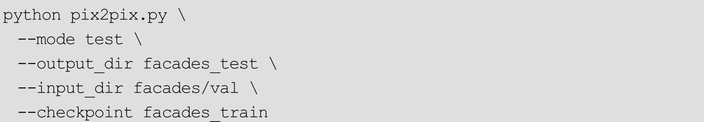
此时参数的含义：
●—mode test：之前是指定—mode train进行训练。这里是进行测试。
●—output_dir facades_test：测试的output_dir会保存测试集中所有图片的结果。以及一个可视化的html文件。
●—input_dir facades/val：执行测试的文件。这个文件夹中有许多和facades/train目录下类似的图像样本，会使用已经训练好的模型对这些图像样本进行转换。
●—checkpoint facades_train：因为之前将模型保存到了facades_train文件夹中，所以在测试时同样指定facades_train文件夹恢复已保存的模型。
执行测试后，在 facades_test 文件夹下，会产生一个 index.html 文件。打开它后，可以看到一个可视化展示生成结果的网页，如图9-8所示。
图9-8 训练好的模型的生成效果
图9-8的第一列是输入模型的建筑标签，第二列是模型根据标签自动生成的图像，第三列是第一列的标签对应的真实图像。训练结果说明，此模型确实可以将建筑的标签自动“翻译”为真实的建筑，十分神奇。
此外，不仅可以通过index.html来查看结果，还可以在facades_test/images文件夹下直接找到所有输入、输出和真实图像。
除了使用Facades数据集外，原项目还提供了几个已经整理好的数据集。给出了这些数据集的下载方式、大小以及示例，读者可以仿照Facades数据集的训练方式自行尝试，见表9-2。
表9-2 项目预设的几个数据集
9.3.2 创建自己的数据集
如何使用自己的数据集进行训练呢？其实，只需要通过程序，将训练数据也整理为之前所说的 A、B 图像并列排列的形式，然后使用第 9.3.1 节中对应的指令进行训练和测试就可以了。
在 pix2pix项目中，提供了几个脚本来帮助创建自己的数据集，其中包含了一些常用的转换操作，现在来看下如何使用这些脚本。
1.将图片缩放到同样的大小
原始的图片可能尺寸不一，但该项目要求所有训练的 A 类和 B 类图片都具有相同的宽和高，因此首先要对图片进行缩放。使用下面的命令可以将图片缩放到相同的大小：
其中，—input_dir 指定了原始图片保存的位置。所有缩放处理后的图片将保存在—output_dir参数指定的文件夹下。
2.转换图像并合并
希望可以对 A 类图像做某种操作以生成对应的 B 类图像，如图 9-9 所示，将A类图像的中间挖去了一部分像素，生成对应的B类图像。
图9-9 A类图像将挖去中心像素后得到B类图像
可以使用提供的脚本来完成这种转换，并将转换后的图像合起来变成一个训练样本。对应的命令是：
参数的含义应该都比较好理解。先指定了—operation blank，即在图片中央挖去一部分像素，并将生成的图片保存在photos/blank目录下。接着使用—operation combine 将 A 类和 B 类图像结合起来，结合后的样本保存在photos/combined下。
图像处理的整个过程如图9-10所示。
图9-10 生成并列图像样本的全过程
3.分割数据集
最后，还可能想把数据集分割为训练集和验证集，对应的命令为：
执行命令之后，在 photos/combined 目录下又会生成两个新的文件夹：train和val。分别存放训练和验证数据。
9.4 使用TensorFlow为灰度图像自动上色
在 pix2pix项目中，已为“灰度图像上色”这一特殊的图像翻译问题做了特别的处理。不需要将图像存放成A、B并列的形式，只需要将彩色图像保存成统一的大小就可以进行训练了。在训练时，代码会自动将图片转换为灰度图，并将灰度图作为 A 类图片，对应的彩色图作为 B 类图片，训练一个从A转换到B的模型。
在 chapter_9_data/中提供了两个已经整理好的数据集，分别保存为food_resized.zip 和 anime_resized.zip。前者为一系列食物的图像，后者为动漫图像。它们都已经缩放到统一的大小，并使用第 9.3.2 节中的脚本划分好训练和测试集。
9.4.1 为食物图片上色
先来训练一个可以为灰度的食物图片进行自动上色的模型。将提供的food_resized.zip文件解压到目录～/datasets/colorlization/下，最终形成的文件夹结构应该是：
train/文件夹下保存了用于训练的图像，val/文件夹下保存了用于验证的图像，所有的图像大小都是统一的。读者可以不必和此处的路径～/datasets/colorlization/保持一致，使用不同路径的话，只需要改变下面运行指令的对应部分即可。
执行训练的命令为：
和第 9.3.1 节中的训练指令唯一有区别的地方是，这里指定了—
lab_colorization，这样不需要将样本保存成A、B图像并列的形式，指定这个标签后会自动训练为灰度图像上色的模型。训练的模型和日志都保存在colorlization_food文件夹下。
执行验证的命令为：
打开文件夹 colorlization_food_test，可以利用其中的 index.html 查看测试的结果。此时因为图片非常多，可能会发生浏览器崩溃而无法查看的情况，此时不用担心，可以直接打开images文件夹查看结果。其中名字带有“inputs”的图像是输入模型得到灰度图，名字带有“outputs”的图像是自动上色后的图像，而名字带有“targets”的图像是真实的图像。
部分结果如图 9-11 所示，从左到右依次为灰度图、自动上色的图像、真实图像。
图9-11 为黑白食物图像自动上色
图9-11 为黑白食物图像自动上色（续，详见彩插）
9.4.2 为动漫图片上色
仿照第 9.4.1 节中的步骤，将动漫图像数据集 anime_reized.zip 解压到～/datasets/colorlization/目录下，形成的文件夹结构为：
训练的对应指令为：
验证模型的对应指令为：
部分验证结果如图 9-12 所示，从左到右依次为灰度图、自动上色的图像、原图。
图9-12 为动漫图像自动上色（详见彩插）
读者还可以使用自己的图片直接进行测试。只需将命令中的—input_dir指定为图片所在的文件夹，并且重新指定一个—output_dir保存结果即可。
9.5 总结
本章的出发点是 cGAN，它是 GAN 的一个变体。cGAN 可以在某种条件下生成样本，因此可以根据标签生成数据。接着介绍了 pix2pix 模型，它是一种特殊的cGAN，可以较好解决一类“图像翻译”问题。最后，介绍了一个TensorFlow中的pix2pix项目，并使用它对灰度图进行自动上色。
拓展阅读
本章主要讲了cGAN和pix2pix两个模型。读者可以参考它们的原始论文 Conditional Generative Adversarial Nets 和 Image-to-Image Translation with Conditional Adversarial Networks学习更多细节。
针对pix2pix模型，这里有一个在线演示Demo，已经预训练好了多种模型，可以在浏览器中直接体验 pix2pix 模型的效果：https：//affinelayer.com/pixsrv/。
第10章 超分辨率：如何让图像变得更清晰
所谓超分辨率，就是指用某种方法提高图像的分辨率，从而让图像变得更加清晰。本章会使用上一章的pix2pix项目代码实现简单的4倍超分辨率重建，此外还会深入讲解pix2pix的代码实现。
10.1 数据预处理与训练
本章的目标是训练一个 pix2pix 模型，它可以将模糊的图片转换成清晰的图片。为此，首先要准备好“图片对”数据，一个图片对包含两张图片，一张是清晰的图片，一张是模糊的图片。
10.1.1 去除错误图片
首先需要准备一些原始图片，此处以COCO数据集为例。先下载COCO2014 数据集[1] ，解压后会得到一个train2014 文件夹，文件夹中包含很多图片。读者可以选用其他图片数据集或自己的图像数据，只需要将下面指令中的文件夹目录进行修改即可。
在原始的图像数据中，可能存在一些格式错误的文件，这些文件在训练时会导致程序异常退出。另外，在训练 pix2pix模型时，必须使用三通道图像。有时图像中会包含一些单通道灰度图像（上述的 COCO 数据集就有一些），这些图像会影响到模型的训练，必须要进行删除。
这里给大家写好了一个脚本 delete_broken_img.py，使用该脚本可以去除图像中的异常或单通道图像：
该脚本的使用方法是指定一个-p参数，该参数为图像的目录路径，脚本会 递归地取出该目录下所有 jpg
格式的图像进行检查（即子目录下也会检查），
一旦检查到图像有损坏或者并非是3通道，就会将其删除。如将COCO数据集放在了目录～/datasets/super-resolution/mscoco 下，就可以使用下面的命令去除其中的错误图像和单通道图像：
注意：因为涉及删除操作，如果读者初次使用时对脚本的功能还不熟悉，请务必对图像数据进行备份。
另外，该脚本针对的是最常用的 jpg 格式。如果图像数据为 png 格式，可以将 glob（os.path.join（dir_path，′.jpg′））中的.jpg 修改为*.png；另外，将tf.image.decode_jpeg（img_byte）中的decode_jpeg改为decode_png就可以了。
10.1.2 将图像裁剪到统一大小
在删除掉损坏的图片后，我们就可以使用上一章中讲过的处理脚本，将图像缩放到统一大小了，对应的命令为：
10.1.3 为代码添加新的操作
下面，应该使用tools/process.py对图片进行转换，并将转换后的图片合并为训练样本。但是，原始的 tools/process.py 只定义了″grayscale″
″blank″″edges″″resize″″combine″几类操作，分别将图像灰度化、中间留白、检测边缘、缩放到统一大小、结合图片，并没有我们所需要的“超分辨率”操作。因此，要向tools/process.py中添加新的操作。本小节会先介绍tools/process.py以及tools/tfimage.py的结构，再介绍如何在tools/process.py中添加新操作。
1.tools/tfimage.py的代码结构
tools/process.py 调用了 tools/tfimage.py 进行图片处理。先来看tools/tfimage.py的功能，该文件中有一个比较重要的函数create_op：
该函数的主要功能是将 TensorFlow 中的函数变成普通的函数。TensorFlow 中的函数大多数是对 Tensor 进行操作，即输入的是 Tenosr，返回的值也是 Tensor，我们不能直接从 Tensor 中读取值，而必须要在一个Session中使用Session.run（）方法取得Tensor的值。此处的create_op就调用了 tf.get_default_session（）.run（）方法，可以将对 Tensor 操作的函数转变为对Numpy数组操作的函数，转换后的函数输出为Numpy的数组，而不是Tensor。例如，下面的decode_jpeg和decode_png：
在TensorFlow中，tf.image.decode_jpeg和tf.image.decode_png输出的是Tensor。此处使用create_op进行转换后，得到的decode_jpeg和decode_png的输出是numpy.ndarray形式的数据了。tools/tfimage.py里使用decode_jpeg和decode_png定义了一个load函数：
load函数的输入是一个图片文件路径，返回的是 numpy.ndarray形式的图像数据。
tools/tfimage.py中还利用create_op定义了若干函数，如：
tf/process.py里的操作就是用这里的rgb_to_grayscale，crop，pad等函数定义的，读者可以参考源代码自行进行阅读，这里不再一一介绍。
2.为tools/process.py添加一个新的操作
tools/process.py的主处理函数process使用了上述load函数读入图片，接着做了一些处理后保存。对应的代码为：

此处的 src 为读入的图像数据（numpy.ndarray 格式），经过对应函数处理后得到 dst，dst 同样是 numpy.ndarray 格式的图像数据。可以仿照此处的写法，添加一个新的函数：
默认的 scale=4，即实现一个 4 倍的超分辨率。这里首先使用tools/tfimage.py中的downscale将图像变为原尺寸的1/4，这样，原来的图像信息就被压缩成只有 1/4，接着将图像的尺寸放大回来，整个图像就会变模糊。将模糊的图片和原来清晰的图片构成一个图片对。最后再训练 pix2pix模型，将模糊的图片转换成清晰的图片，就相当于实现了一个4倍的超分辨率。
光添加一个函数还不够，还要在其他两处添加注册blur操作，才能完成对 tools/process.py 的修改。首先是修改 process 函数，添加一个 blur 操作即可：
另外，需要在定义参数时加上blur的选项：
这样就可以了。接下来使用修改后的tools/process.py对样本进行操作：
此时在～/datasets/super-
resolution/mscoco_blur/目录下就会生成好模糊处理后的图片，最后使用combine操作将原始图片和模糊后的图片合并起来：
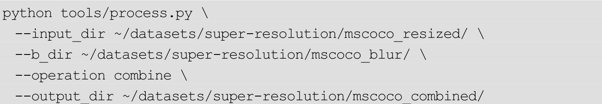
合并后，可以进一步将其划分为训练集和测试集：
命令完成后，在～/datasets/super-
resolution/mscoco_combined/train目录下保存了所有训练数据集，如图10-1所示。
根据上一节所讲，在图10-1中，左边的图像为A类图像，右边的图像为B类图像，因此在执行训练时应该指定BtoA，即将B类模糊的图像转换为A类，对应的命令如下：
图10-1 训练数据集示例
命令中指定了—
output_dir为super_resolution，因此模型和日志会保存在super_resolution文件夹中。执行模型测试的对应命令为：
该命令会利用～/datasets/super-resolution/mscoco_combined/val 中的验证集数据和 super_resolution 目录下的模型进行验证。生成的图片还会保存在super_resolution_test文件夹中。
图 10-2 展示了部分验证图片的结果。最左侧是模糊的图像（可以看作只有原图 1/4 大小的图像，此处只是做了简单的缩放，所以很模糊），中间是模型超分辨率生成的图像，最右侧为原图。
虽然无法真实地还原所有细节，但很明显，模型还是抓住了图像中的一些信息对图像进行了重建，比直接对图像进行缩放的效果要清晰很多。
图10-2 图像的超分辨率（详见彩插）
10.2 总结
本章使用的模型依旧是 pix2pix 模型，和上一章不同的是，这次使用pix2pix 来处理一个超分辨率问题。为此，分析了图像处理代码的结构，并在代码中添加了新的操作。最后训练出来的模型确实能对图像进行超分辨率重建。
[1]
下载地址为http：//msvocds.blob.core.windows.net/coco2014/train2014.zip。
第11章 CycleGAN与非配对图像转换
前面已经介绍过了cGAN和对应的pix2pix模型，它们能够解决一类“图像翻译”问题。但是 pix2pix 模型要求训练样本必须是“严格成对”的，这种样本往往比较难以获得。本章会介绍 CycleGAN，CycleGAN 不必使用成对样本也可以进行“图像翻译”。还会介绍TensorFlow中CycleGAN的实现。
11.1 CycleGAN的原理
图像翻译问题可以理解为学习一个映射，这个映射可以将源空间 X 中的图片转换成目标空间Y空间中的图片。
使用pix2pix可以处理图像翻译问题，但它要求训练数据必须在X空间和Y空间中严格成对。如图11-1所示，左侧是训练pix2pix必须要求的成对数据。xi 为X空间中的图片，yi 为Y空间中的图片。要求xi 和yi 必须是一一对应的。现实中这种成对数据往往很难找到，更常见的是不成对数据。如在图 11-1 右侧，X 代表的是照片，Y 代表的是油画，无法为每张照片都画一张油画，也无法事先把油画还原为对应的照片。
图11-1 成对（Paired）数据与不成对（Unpaired）数据
CycleGAN与pix2pix的不同点在于，它可以利用不成对数据训练出从X空间到 Y 空间的映射。例如，只要搜集了大量照片以及大量油画图片，可以学习到如何把照片转换成油画！
下面阐述CycleGAN的详细原理：算法的目标是学习从空间X到空间Y的映射，设这个映射为F。它对应着GAN中的生成器，F可以将X中的图片x转换为Y中的图片F（x）。对于生成的图片，还需要GAN中的判别器来判别它是否为真实图片，由此构成对抗生成网络。设这个判别器为DY。根据生成器和判别器可以构造 GAN 的损失了，该损失和原始 GAN 中的损失的形式是相同的
但只使用这一个损失是无法进行训练的。原因在于没有成对数据，映射F可以将所有x都映射为Y空间中的同一张图片，使损失无效化。对此，作者又提出了所谓的“循环一致性损失”（cycle consistency loss）。让再假设一个映射G，它可以将Y空间中的图片y转换为X中的图片G（y）。CycleGAN同时学习 F 和 G 两个映射，并要求 F（G（y））≈y，以及G（F（x））≈x。 也是说，将 X 的图片转换到 Y 空间后，应该还可以转换回来。
这样可以杜绝模型把所有X的图片都转换为Y空间中的同一张图片。根据 F（G（y））≈y 和G（F（x））≈x，循环一致性损失定义为
同时，为 G 也引入一个判别器DX ，由此可以同样定义一个 GAN 损失LGAN （G，DX ，X，Y），最终的损失由三部分组成
CycleGAN 的主要想法是上述的“循环一致性损失”，利用这个损失，可以巧妙地处理 X 空间和 Y 空间训练样本不一一配对的问题。下面，一起来看TensorFlow中的CycleGAN实现。
11.2 在TensorFlow中用训练CycleGAN模型
本节会介绍如何在TensorFlow中使用CycleGAN训练图像转换模型，CycleGAN代码的分析会在第11.3节中进行讲解[1]
。
11.2.1 下载数据集并训练
作为快速示例，首先来使用一些已经事先准备好的数据集进行训练。
使用下列命令可以下载apple2orange数据集，该数据集包含了苹果和橘子的图像：
执行命令后，会生成data/apple2orange目录。其中trainA、testA中保存了苹果的图像，trainB、testB中保存了橘子的图像，如图11-2所示。
将训练一个将苹果转换成橘子的模型，以及一个将橘子转换成苹果的模型。由于该项目使用tfrecords读取数据，因此，还要再将图片转换成tfrecords格式，对应的指令为：
图11-2 训练数据集中的苹果图像与橘子图像示例
这里的参数是比较好理解的。程序会读入—X_input_dir指定目录下的所有图像，转换为tfrecords并保存成—
X_output_file指定的文件。读入—Y_input_dir下的所有图像，转换成tfrecords并保存为—
Y_output_file指定的文件。运行指令后会得到两个tfrecords文件，一个是data/tfrecords/apple.tfrecords，另一个是data/tfrecords/orange.tfrecords。下面会使用这两个文件进行训练。
训练模型对应的命令为：
训练的参数也很好理解。顾名思义，—X 指定了 X 空间中数据对应的tfrecords文件，而—
Y指定了Y空间中数据对应的tfrecords文件。训练的模型既包含将X转换为Y的函数，也包含将Y转换为X的函数。最后一个参数—
image_size指定了图像的大小。
训练开始后，程序会在 checkpoints 文件夹中建立一个以当前时间命名的目录，如“checkpoints/20170715-1622”，训练时的日志和模型都会保存在该文件夹中。此外，每隔 100 步，程序还会在屏幕上打出当前步数和损失，可以通过它们来监控模型的训练。更方便的做法是使用 TensorBoard，即运行：
请读者注意，在运行上述命令时，需要将—logdircheckpoints/20170715-1622中的目录替换为自己机器中的对应目录。
使用TensorBoard可以方便地观察各个损失的变化情况，如图11-3所示。
图11-3 在TensorBoard中观察各个损失的变化情况
其中，loss/cycle是所说的“循环一致性损失”，而D_X和D_Y是判别器的损失。F 和 G 是两个转换函数的损失。在下一节中再详细说明如何在TensorFlow中定义这些损失。
在TensorBoard的Images选项卡中，可以观察到当前模型转换图片的情况。如图 11-4 所示，最左侧是原始的苹果图像，中间为模型将苹果转换成橘子的图像，右侧是将橘子再次进行还原的图像。
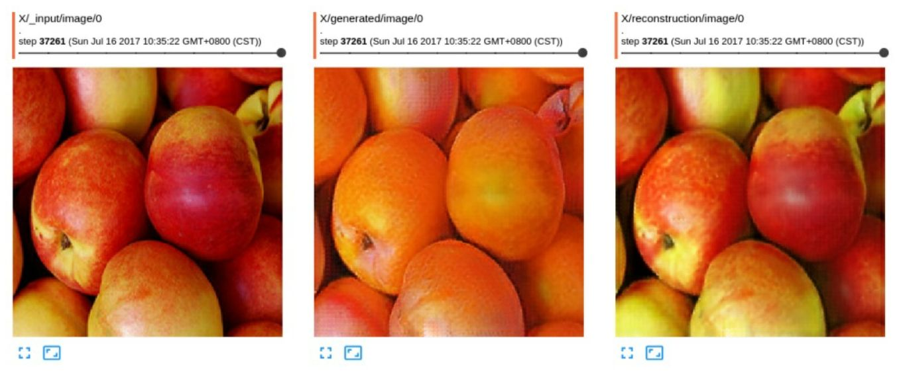
图11-4 在TensorBoard中观察模型的生成效果
注意，由于GAN的训练本身带有一定随机性，如果发现在TensorBoard中发现生成的图片出现了反色（如本来是浅色的背景变成了深色，或者深色的背景变成了浅色），必须停止，并从头开始重新训练。
另外，训练程序不会自动结束，因此当训练得差不多时，需要手动使用Ctrl+C结束程序。
如何使用 checkpoints 目录下的模型进行测试呢？首先要将模型导出为pb文件：
同样要注意将20170715-1622替换为自己机器中的对应目录。运行该指令后会生成两个 pb 文件：apple2orange.pb 和 orange2apple.pb，前者可以将苹果图片转换为橘子图片，而后者可以将橘子图片转换为苹果图片。如使用测试集中的图片进行测试：
运行上面的命令会使用模型 pretrained/apple2orange.pb，对测试图片data/apple2orange/testA/n07740461_1661.jpg进行转换，转换生成的图片保存为data/apple2orange/output_sample.jpg。
除了 apple2orange 数据外，原项目中还提供了几个数据可以进行实验。如summer2winter_yosemite（冬夏转换）、horse2zebra（斑马和普通马转换）、monet2photo（照片与莫奈的油画转换）等。读者同样可以利用这些数据进行实验。所有提供的图像数据可以在脚本download_dataset.sh中找到对应的名称。
11.2.2 使用自己的数据进行训练
在本节中，会介绍如何使用自己的图像数据进行训练。只需要准备两个文件夹，一个文件夹中存放 X 空间内的图片，另一个文件夹中存放 Y空间中的文件。
在chapter_11_data/中，事先提供了一个数据集man2woman.zip，该数据集是一个人脸数据集，解压后共包含两个文件夹：a_resized和b_resized，其中a_resized中保存的是男性的人脸图片，而b_resized中保存的是女性的人脸图片。将用CycleGAN做一个非常有意思的实验：将男性变成女性，以及将女性变换成男性。
man2woman数据集是从CelebA数据集中整理得到的，后者是一个大型的人脸数据集，拥有20万张人脸图片，如图11-5所示。
已将CelebA数据集中的数据做了以下处理：
●选取前2万张图片，并根据已经标注好的属性将男性和女性对应的图片分开。
●将图片统一裁剪并缩放到256×256像素，得到a_resized和b_resized。
这里直接提供了处理之后的a_resized和b_resized。
图11-5 CelebA数据集图像示例
为了训练CycleGAN，需要先将图片转换成tfrecords形式：
读者在运行此命令时，需要将目录～/datasets/man2woman更改为自己机器中对应的存放数据集的目录。运行命令后，得到了两个tfrecords文件。直接利用这两个文件进行训练即可：
训练的过程比较漫长，和第 11.2.1 节中一样，最好都打开 TensorBoard观察训练的Loss和图像生成情况。
如果训练的过程发生了中断，可以不从头开始训练，指定—
load_model参数，可以从之前保存的模型中恢复并继续训练，如下面的代码会自动读取checkpoints/201716-1332目录下的模型继续训练：
使用训练好的模型推导单张图片的方法和第11.2.1节中完全一样，都是先导出模型再进行推导，此处不再赘述。
最终训练男性图片变为女性图片的效果，如图11-6所示，左侧为原图，右侧为模型自动转换的图。
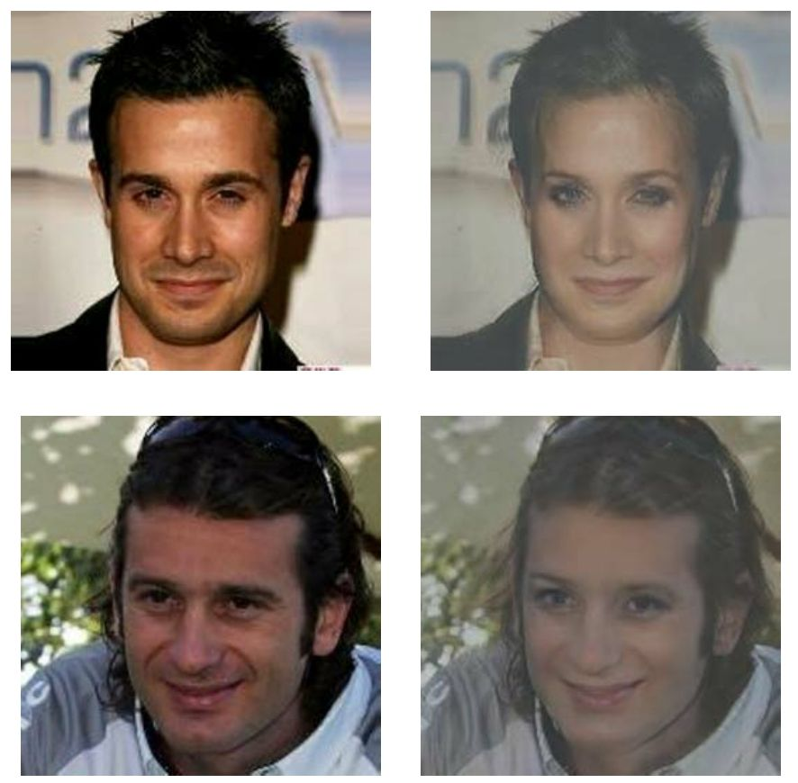
图11-6 训练Cycle GAN模型将男性图片变为女性图片（详见彩插）
训练模型将女性图片转换为男性图片的效果如图11-7所示。
图11-7 训练Cycle GAN模型将女性图片变为男性图片（详见彩插）
11.3 程序结构分析
下面以CycleGAN模型的定义和损失的定义为例，简要分析程序的结构。
CycleGAN模型定义的语句在model.py中，具体的语句为：
要理解这段变量的功能，首先要熟悉几个变量的含义。x是X空间中的数据，y是Y空间中的数据，是程序中定义的函数，对应着CycleGAN的生成器，它将X中的数据转换为 Y中的数据，同理，self.F也是一个生成器，将Y中的数据转换成X中的数据。X、Y两个空间还有两个判别器，分别是D_X和D_Y，它们分别负责判断X和Y空间中数据的真伪。
首先，程序用cycle_loss=self.cycle_consistency_loss（self.G，self.F，x，y）定义了在第 11.1 节中提到的“循环一致性损失”。对应的函数 self.cycle_consistency_loss为：
G（F（x））应该和 x 比较接近，据此直接定义 L1 损失 tf.reduce_mean（tf.abs （F（G（x））-x））。G（F（y））同理。
再来看一下生成器的损失和判别器的损失，它们分别对应函数self.generator_loss和self.discriminator_loss。self.generator_loss的定义为：
fake_y是生成器生成的样本，而D为判别器。use_lsgan指定了是否用LSGAN对应的损失函数。LSGAN是GAN的一种变体，损失函数略有不同，这里只关注use_lsgan=False时的情况：D（fake_y）是一个概率，表示判别器认为fake_y是真实的概率，显然，D（fake_y）越大，说明生成器的性能越好。因此，再取损失时又加上了负号，即loss=-tf.reduce_mean（ops.safe_log（D（fake_y）））/2。这样新定义的loss越小，说明生成器的性能越好。加负号的原因是TensorFlow中的优化器都默认损失越小越好，因此这样定义的loss可以直接传入优化器中。
说完了self.generator_loss，再来看self.discriminator_loss：
同样关注use_lsgan=False的情况。D是判别器，输入的y是真实数据，因此D（y）是判别器判断真实数据的对应概率，该值越大，说明判别器的性能越好。因此，同样对其取负号，即程序中的 error_real=-tf.reduce_mean
（ops.safe_log（D（y）））。对于D（fake_y），是判别器判断生成数据的对应概率，对照GAN的原始定义，要先用1减去它，即1-D（fake_y），再使用交叉熵损失并取负值得到 error_fake。不管是 error_real 还是 error_fake，都是越小则判别器性能越好，符合损失的定义。最后将它们加起来得到损失loss。
利用 self.generator_loss、self.discriminator_loss 以及之前定义好的cycle_loss，最终定义出四个损失：G_loss、F_loss、D_Y_loss、D_X_loss。其中，G_loss和F_loss是生成器损失（在实现时，cycle_loss已经包含在G_loss和F_loss中的），这两个损失降低则意味着生成器的性能提高。D_Y_loss和D_X_loss是判别器，这两个损失的降低意味着判别器性能提高。在优化时，对四个损失同时优化即可，对应的代码为：
这里先为四个损失分别定义了优化操作。然后使用tf.control_dependencies函数，使得只有执行完G_optimizer，D_Y_optimizer，F_optimizer，D_X_optimizer四个操作，才能最终执行在with中的tf.no_op。最终得到tf.no_op，直接对它进行执行即可同时对四个损失进行优化。
11.4 总结
本节主要关注的是CycleGAN。首先介绍了CycleGAN的数学原理，接着在 TensorFlow 中使用 CycleGAN 训练了两个模型，一个模型可以实现苹果和橘子的相互转换，另一个模型可以实现男性图片和女性图片的相互转换。最后，介绍了CycleGAN项目的模型和损失的定义细节，有助于读者进一步了解其原理。
拓展阅读
本章主要讲了模型 CycleGAN，读者可以参考论文 Unpaired Image-to-Image Translation using Cycle-
Consistent Adversarial Networks了解更多细节。
CycleGAN 不需要成对数据就可以训练，具有较强的通用性，由此产生了大量有创意的应用，例如男女互换（即本章所介绍的）、猫狗互换、利用手绘地图还原古代城市等。可以参考 https：//zhuanlan.zhihu.com/p/28342644 以及 https：//junyanz.github.io/CycleGAN/了解这些有趣的实验。
CycleGAN 可以将将某一类图片转换成另外一类图片。如果想要把一张图片转换为另外K类图片，就需要训练K个CycleGAN，这是比较麻烦的。对此，一种名为 StarGAN的方法改进了 CycleGAN，可以只用一个模型完成K类图片的转换，有兴趣的读者可以参阅其论文 StarGAN：Unified Generative Adversarial Networks for Multi-Domain Image-to-Image Translation。
如果读者还想学习更多和 GAN 相关的模型，可以参考https：//github.com/hindupuravinash/the-gan-
zoo。这里列举了迄今几乎所有的名字中带有“GAN”的模型和相应的论文。
[1]
本节参考了项目https：//github.com/vanhuyz/CycleGAN-TensorFlow，并做了细微修改。
第12章 RNN基本结构与Char RNN文本生成
从本章起，将开始学习循环神经网络（RNN）以及相关的项目。这一章首先会向大家介绍 RNN 经典的结构，以及它的几个变体。接着将在TensorFlow中使用经典的RNN结构实现一个有趣的项目：Char RNN。Char RNN可以对文本的字符级概率进行建模，从而生成各种类型的文本。
12.1 RNN的原理
12.1.1 经典RNN的结构
RNN的英文全称是Recurrent Neural Networks，即循环神经网络，它是一种对序列型数据进行建模的深度模型。在学习 RNN之前，先来复习基本的单层神经网络，如图12-1所示。
图12-1 单层神经网络的图示
单层网络的输入是x，经过变换Wx+b和激活函数f得到输出y。
在实际应用中，还会遇到很多序列形的数据，如图12-2所示。
图12-2 序列型数据
例如：
●自然语言处理问题。x1 可以看作是第一个单词，x2 可以看作是第二个单词，依次类推。
●语音处理。此时，x1 、x2 、x3 ……是每帧的声音信号。
●时间序列问题。例如每天的股票价格等。
序列形的数据不太好用原始的神经网络处理。为了处理建模序列问题，RNN引入了隐状态h（hidden state）的概念，h可以对序列形的数据提取特征，接着再转换为输出。如图12-3所示，先从h1 的计算开始看。
图12-3 h1 的计算
图12-3中记号的含义是：
●圆圈或方块表示向量。
●一个箭头表示对该向量做一次变换。如图12-3中h0 和x1 分别有一个箭头连接h1 ，表示对h0 和x1 各做了一次变换。图中的U、W是参数矩阵，b是偏置项参数。f是激活函数，在经典的RNN结构中，通常使用tanh作为激活函数。
在很多论文中也会出现类似的记号，初学的时候很容易混，但只要把握住以上两点，可以比较轻松地理解图示背后的含义。
如图12-4所示，h2 的计算和h1 类似。要注意的是， 在计算时，每一步使用的参数 U 、 W 、 b
都是一样的，即每个步骤的参数都是共享的，这是 RNN 的重要特点，一定要牢记。
图12-4 h2 的计算
接下来，如图 12-5所示，依次计算剩下的 h（使用相同的参数 U、W、b）。
图12-5 计算出所有h
本书为了方便讲解起见，只画出序列长度为4的情况，实际上，这个计算过程可以无限地持续下去。
目前的RNN还没有输出，得到输出值的方法是直接通过h进行计算，如图12-6所示。
此时使用的 V 和 c 是新的参数。通常处理的是分类问题（即输出 y1 、y2 ……均表示类别），因此使用Softmax函数将输出转换成各个类别的概率。
另外，正如前文所说，一个箭头表示对相应的向量做一次类似于 f（Wx+b） 的变换，此处的箭头表示对 h1 进行一次变换，得到输出
y1 。
图12-6 y1 的计算
如图 12-7 所示，剩下输出的计算类似进行（使用和计算 y1 时同样的参数V和c）。
图12-7 计算所有输出y
大功告成！这是最经典的 RNN结构，像搭积木一样把它搭好了。它的输入是x1 ，x2 ，…，xn ，输出为y1 ，y2 ，…，yn ，也是说，
输入和输出序列必须是要等长的。
由于这个限制的存在，经典 RNN的适用范围比较小，但也有一些问题适合用经典的RNN结构建模，如：
●计算视频中每一帧的分类标签。因为要对每一帧进行计算，因此输入和输出序列等长。
●输入为字符，输出为下一个字符的概率。这是著名的 Char RNN。在本章中，将会在TensorFlow中实现Char RNN并生成文本。
最后，给出经典 RNN结构的严格数学定义，读者可以对照上面的图片进行理解。设输入为x1 ，x2 ，…，…xt ，，xT ，对应的隐状态为h1 ，h2
，…，…ht ，，hT ，输出为y1 ，y2 ，…，…yt ，，yT ，则经典RNN的运算过程可以表示为
其中，U，V，W，b，c均为参数，而 f 表示激活函数，一般为tanh函数。
12.1.2 N VS 1 RNN的结构
有的时候，问题的输入是一个序列，输出是一个单独的值而不是序列，此时应该如何建模呢？实际上，只在最后一个h上进行输出变换可以了，如图12-8所示。
图12-8 “N VS 1”的RNN结构
这种结构通常用来处理序列分类问题。如输入一段文字判别它所属的类别，输入一个句子判断其情感倾向，输入一段视频并判断它的类别等等。
同样给出该结构的数学表示。设输入为x1 ，x2 ，…，…xt ，，xT ，对应的隐状态为h1 ，h2 ，…，…ht ，，hT ，输出为Y，那么运算过程为
输出时对最后一个隐状态做运算即可
12.1.3 1 VS N RNN的结构
输入不是序列而输出为序列的情况怎么处理？可以只在序列开始进行输入计算，如图12-9所示。
图12-9 “1 VS N”的RNN结构
还有一种结构是把输入信息X作为每个阶段的输入，如图12-10所示。
图12-10 另一种“1 VS N”的RNN结构
图12-11省略了一些X的圆圈，是图12-10的等价表示。
图12-11 省略一些记号的等价表示
该表示的公式表达为

这种1 VS N的结构可以处理的问题有：
●从图像生成文字（image caption），此时输入的X是图像的特征，而输出的y序列是一段句子。
●从类别生成语音或音乐等。
12.2 LSTM的原理
前一节介绍了 RNN 和它的几种变体结构，本节介绍 RNN 的改进版：LSTM（Long Short-Term Memory，长短期记忆网络）。一个RNN单元的输入由两部分组成，即前一步 RNN单元的隐状态和当前这一步的外部输入，此外还有一个输出。从外部结构看，LSTM和 RNN 的输入输出一模一样，同样是在每一步接受外部输入和前一阶段的隐状态，并输出一个值。 因此，可以把第 12.1 节中的每一种结构都无缝切换到
LSTM ，而不会产生任何问题。 本节主要关注的是LSTM的内部结构以及它相对于RNN的优点。
回顾RNN的公式ht =f （Uxt +Wht-1
+b）。从这个式子中可以看出，RNN每一层的隐状态都由前一层的隐状态经过变换和激活函数得到，反向传播求导时最终得到的导数会包含每一步梯度的连乘，这会引起梯度爆炸或梯度消失，所以 RNN很难处理“长程依赖”问题，即无法学到序列中蕴含的间隔时间较长的规律。LSTM在隐状态计算时以加法代替了这里的迭代变换，可以避免梯度消失的问题，使网络学到长程的规律。
可以用图12-12来表示RNN[1] 。
从图 12-12 中的箭头可以看到，ht-1 和xt 合到一起，经过了 tanh 函数，得到了 ht ，ht 还会被传到下一步的 RNN 单元中。这对应了公式ht =f （Uxt +Wht-1 +b）。在图中，激活函数f采用tanh函数。
图12-13是用同样的方式画出的LSTM的示意图。
图12-12 RNN的图示
图12-13 LSTM的图示
这里的符号比较复杂，不用担心，下面会分拆开来进行讲解。在讲解之前，先给出图12-13中各个记号的含义。长方形表示对输入的数据做变换或激活函数，圆形表示逐点运算。所谓逐点运算，是指将两个形状完全相同的矩形的对应位置进行相加、相乘或其他运算。箭头表示向量会在哪里进行运算。
和RNN有所不同，LSTM的隐状态有两部分，一部分是ht ，一部分是Ct 。Ct 是在各个步骤间传递的主要信息，而图 12-14 中的水平线可以看作是LSTM的“主干道”。通过加法，Ct 可以无障碍地在这条主干道上传递，因此较远的梯度也可以在长程上传播。这是LSTM的核心思想。
不过，每一步的信息Ct 并不是完全照搬前一步的Ct-1 ，而是在Ct-1 的基础上“遗忘”掉一些内容，以及“记住”一些新内容。
图12-14 LSTM中Ct 的传播
LSTM 的每一个单元中都有一个“遗忘门”，用来控制遗忘掉Ct-1 的那些部分。遗忘门的结构如图12-15所示。σ是Sigmoid激活函数，它的输出在0～1之间。最终遗忘门的输出是和Ct-1 相同形状的矩阵，这个矩阵会和Ct-1 逐点相乘，决定要遗忘哪些东西。显然，遗忘门输出接近0的位置的内容是要遗忘的，而接近1的部分是要保留的。遗忘门的输入是xt 和ht-1 ，xt 是当前时刻的输入，而ht-1 为上一个时刻的隐状态。
图12-15 LSTM中的遗忘门
光遗忘肯定不行，LSTM单元还得记住新东西，所以又有如图12-16所示的“记忆门”。记忆门的输入同样是xt 和ht-1 ，它的输出有两项，一项是it ，it 同样经过Sigmoid函数运算得到，因此值都在0～1之间，还有一项是C～t ，最终要“记住”的内容是C～t 和it 逐点相乘。
图12-16 LSTM中的记忆门
“遗忘”“记忆”的过程如图12-17所示，ft 是遗忘门的输出（0～1之间），而C～t *it 是要记住的新东西。
图12-17 如何应用“遗忘门”“记忆门”的结果
最后，还需要一个“输出门”，用于输出内容。这里说是输出，其实是去计算另一个隐状态ht 的值，真正的输出（如类别）需要通过ht 做进一步运算得到。输出门的结构如图 12-18 所示。同样是根据xt 和ht-1 计算，ot 中每一个数值在0～1之间，ht 通过ot *tanh（Ct
）得到。
图12-18 LSTM中的输出门
总结一下，LSTM 每一步的输入是xt ，隐状态是ht 和Ct ，最终的输出通过ht 进一步变换得到。在大多数情况下，RNN和LSTM都是可以相互替换的，因此在很多论文以及文档中都会看到类似于“RNN（LSTM）”这样的表述，意思是两者可以相互替换。
12.3 Char RNN的原理
Char RNN是用于学习RNN的一个非常好的例子。它使用的是RNN最经典的N VS N的模型，即输入是长度为N的序列，输出是与之长度相等的序列。Char RNN 可以用来生成文章、诗歌甚至是代码。在学习 Char RNN之前先来看下“N VS N”的经典RNN的结构，如图12-19所示。
图12-19 “N VS N”的经典RNN结构
对于Char RNN，输入序列是句子中的字母，输出依次是该输入的 下一个字母
，换句话说，是用已经输入的字母去预测下一个字母的概率。如一个简单的英文句子Hello！输入序列是{H，e，l，l，o}，输出序列依次是{e，l，l，o，！}。注意到这两个序列是等长的，因此可以用N VS N RNN来建模，如图12-20所示。
在测试时，应该怎样生成序列呢？方法是首先选择一个x1 当作起始字符，使用训练好的模型得到对应的下一个字符的概率。根据这个概率，选择一个字符输出，并将该字符当作下一步的x2 输入模型，再生成下一个字符。依次类推，可以生成任意长度的文字。
图12-20 Char RNN利用已经输入的字母来预测下一个字母
使用独热向量来表示字母，然后依次输入网络。假设一共有26个字母，那么字母a的表示为第一位为1，其他25位都是0，即（1，0，0，0，…，0），字母b的表示是第二位为1，其他25位都是0，即（0，1，0，0，…，0）。输出相当于一个26类分类问题，因此每一步输出的向量也是26维，每一维代表对应字母的概率，最后的损失使用交叉熵可以直接得到。在实际模型中，由于字母有大小写之分以及其他标点符号，因此总共的类别数会比26多。
最后，在对中文进行建模时，为了简单起见，每一步输入模型的是一个汉字。相对于字母来说，汉字的种类比较多，可能会导致模型过大，对此有以下两种优化方法：
●取最常用的N个汉字。将剩下的汉字变成单独一类，并用一个特殊的字符＜unk＞进行标注。
●在输入时，可以加入一层embedding层[2]
，这个embedding层可以将汉字转换为较为稠密的表示，它可以代替稀疏的独热表示，取得更好的效果。之所以对字母不使用embedding，是因为单个字母不具备任何含义，只需要使用独热表示即可。而单个汉字还是具有一定实际意义的，因此可以使用embedding将其映射到一个较为稠密的空间。embedding的参数可以直接从数据中学到，具体的实现方法可以参考下面小节中处理输入数据部分的代码。
中文汉字的输出层和之前处理英文字母时是一样的，都相当于 N 类分类问题。
12.4 TensorFlow中的RNN实现方式
在本小节中，讲述在TensorFlow中实现RNN的主要方法，帮助大家循序渐进地梳理其中最重要的几个概念。首先是使用RNNCell对RNN模型进行单步建模。RNNCell 可以处理时间上的“一步”，即输入上一步的隐层状态和这一步的数据，计算这一步的输出和隐层状态。接着，TensorFlow使用tf.nn.dynamic_rnn方法在时间维度上多次运行RNNCell。最后还需要对输出结果建立损失。
12.4.1 实现RNN的基本单元：RNNCell
RNNCell是TensorFlow中的RNN基本单元。它本身是一个抽象类，在本节中学习它两个可以直接使用的子类，一个是BasicRNNCell，还有一个是BasicLSTMCell，前者对应基本的RNN，后者是基本的LSTM。[3]
学习RNNCell要重点关注三个地方：
●类方法call。
●类属性state_size。
●类属性output_size。
先来说下call方法。所有RNNCell的子类都会实现一个call函数。利用call 函数可以实现 RNN 的单步计算，它的调用形式为（output，next_state）=call（input，state）。例如，对于一个已经实例化好的基本单元cell（再次强调，RNNCell 是抽象类不能进行实例化，可以使用它的子类 BasicRNNCell 或BasicLSTMCell 进行实例化，得到 cell），初始的输入为 x1，而初始的隐层状态为h0，可以调用（output1，h1）=cell.call（x1，h0）得到当前的隐层状态h1。接着调用（output2，h2）=cell.call（x2，h1）可以得到h2，依此类推。
RNNCell的类属性state_size和output_size分别规定了隐层的大小和输出向量的大小。通常是以batch形式输入数据，即input的形状为（batch_size，input_size），调用call函数时对应的隐层的形状是（batch_size，state_size），输出的形状是（batch_size，output_size）。
在TensorFlow中定义一个基本RNN单元的方法为：
在TensorFlow中定义一个LSTM基本单元的方法为：
正如第12.2节中所说，LSTM可以看作有h和C两个隐层。在TensorFlow中，LSTM基本单元的state_size由两部分组成，一部分是c，另一部分是h。在具体使用时，可以通过state.h以及state.c进行访问，下面是一个示例代码：
12.4.2 对RNN进行堆叠：MultiRNNCell
很多时候，单层RNN的能力有限，需要多层的RNN。将x输入第一层RNN后得到隐层状态h，这个隐层状态相当于第二层RNN的输入，第二层RNN 的隐层状态又相当于第三层 RNN 的输入，依此类推。在 TensorFlow中，可以使用tf.nn.rnn_cell.MultiRNNCell函数对RNN进行堆叠，相应的示例程序如下：
堆叠 RNN 后，得到的 cell 也是 RNNCell 的子类，因此同样也有在第12.4.1节中所说的call方法、state_size属性和output_size属性。
12.4.3 BasicRNNCell和BasicLSTMCell的output
在第12.4.1和12.4.2节中，有意省略了调用call函数后得到output的介绍。先通过图12-19回忆RNN的基本结构。
将图 12-19 与 TensorFlow 的 BasicRNNCell 对照来看，h 对应了BasicRNNCell 的 state_size。那么，y 是不是对应了 BasicRNNCell 的output_size呢？ 答案是否定的 。
找到源码中BasicRNNCell的call函数实现：
通过“ return output，output ”，可以看出在 BasicRNNCell 中， output
其实和隐状态的值是一样的。因此，还需要额外对输出定义新的变换，才能得到图中真正的输出
y。由于output和隐状态是一回事，所以在BasicRNNCell中，state_size永远等于output_size。TensorFlow是出于尽量精简的目的来定义 BasicRNNCell 的，所以省略了输出参数，这里一定要弄清楚它和图中原始RNN定义的联系与区别。
再来看BasicLSTMCell的call函数定义（函数的最后几行）：
只需要关注self._state_is_tuple==True的情况，因为self._state_is_tuple==False的情况将在未来被弃用。返回的隐状态是new_c和new_h的组合，而 output 是单独的 new_h。如果处理的是分类问题，那么还需要对 new_h添加单独的Softmax层才能得到最后的分类概率输出。
12.4.4 使用tf.nn.dynamic_rnn展开时间维度
对于单个的RNNCell，使用它的call函数进行运算时，只是在序列时间上前进了一步。如使用x1 、h0 得到h1 ，通过x2 、h1 得到h2 等。如果序列长度为 n，要调用 n 次 call 函数，比较麻烦。对此，TensorFlow 提供了一个tf.nn.dynamic_rnn函数，使用该函数相当于调用了n次call函数。即通过{h0 ，x1 ，x2 ，…，xn }直接得到{h1 ，h2
，…，hn }。
具体来说，设输入数据的格式为（batch_size，time_steps，input_size），其中batch_size表示batch的大小，即一个batch中序列的个数。time_steps表示序列本身的长度，如在Char RNN中，长度为10的句子对应的time_steps等于10。最后的input_size表示输入数据单个序列单个时间维度上固有的长度。假设已经定义好了一个 RNNCell，如果要调用 time_steps 该 RNNCell的call函数次，对应的代码是：
此时，得到的 outputs 是 time_steps 步里所有的输出。它的形状为（batch_size，time_steps，cell.output_size）。state是最后一步的隐状态，它的形状为（batch_size，cell.state_size）。
另外，如果输入数据形状的格式为（time_steps，batch_size，input_size），那么可以在调用 tf.nn.dynamic_rnn 函数中设定参数 time_major=True（默认情况是 False），此时得到的 outputs 形状变成（time_steps，batch_size，cell.output_size），而state的形状不变。
至此，再对每一步的输出进行变换，可以得到损失并训练模型了。具体的代码组合方式可以参考下一节的代码。
12.5 使用TensorFlow实现Char RNN
给出了一个 Char RNN 的 TensorFlow 实现。该实现需要的运行环境为Python 2.7，TensorFlow 1.2及以上。会先结合第12.3、12.4节中的内容讲解定义RNN模型的方法，最后会给出一些生成例子。
12.5.1 定义输入数据
模型定义主要放在了 model.py 文件中，从头开始，先来看下输入数据的定义。
self.inputs 是外部传入的一个 batch 内的输入数据，它的形状为（self.num_seqs，self.num_steps），self.num_seqs 是一个 batch 内句子的个数（相当于batch_size），而self.num_steps表示每个句子的长度。
self.targets是self.inputs对应的训练目标，它的形状和self.inputs相同，内容是 self.inputs 每个字母对应的下一个字母。它的详细含义可以参考第12.3节进行理解。
除了self.inputs和self.targets外，还定义了一个输入self.keep_prob，因为在后面的模型中有Dropout层，这里的self.keep_prob控制了Dropout层所需要的概率。在训练时，使用 self.keep_prob=0.5，在测试时，使用self.keep_prob=1.0。
正如第 12.3 节中所说，对于单个的英文字母，一般不使用 embedding层，而对于汉字生成，使用 embedding 层会取得更好的效果。程序中用self.use_embedding 参数控制是否使用 embedding。当不使用 embedding 时，会直接对self.inputs做独热编码得到self.lstm_inputs；当使用embedding时，会先定义一个 embedding 变量，接着使用 tf.nn.embedding_lookup 查找embedding。请注意 embedding 变量也是可以训练的，因此是通过训练得到embedding的具体数值。self.lstm_inputs是直接输入LSTM的数据。
12.5.2 定义多层LSTM模型
下面的函数定义了多层的N VS N LSTM模型：
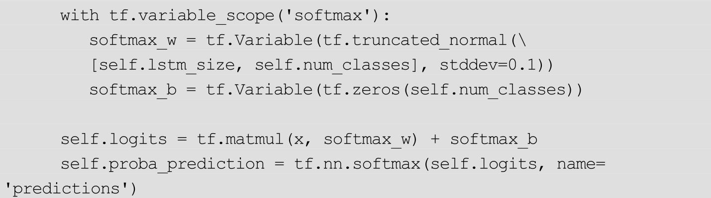
在这段代码中，首先仿照第 12.4.2 节中的代码，定义了一个多层的BasicLSTMCell。唯一的区别在于，在这里对每个 BasicLSTMCell 使用了tf.nn.rnn_cell.DropoutWrapper函数，即加入了一层Dropout，以减少过拟合。
定义了cell后，如第12.4.4节中所说，使用tf.nn.dynamic_rnn函数展开了时间维度。tf.nn.dynamic_rnn的输入为cell、self.lstm_inputs、self.initial_state。其中 cell 已经解释过了，self.inputs 是在第 12.5.1 节中的输出层定义的，self.initial_state是通过调用cell.zero_state得到的一个全0的Tensor，表示初始的隐层状态。
tf.nn.dynamic_rnn的输出为self.outputs和self.final_state。这里又需要对照第12.4.3节中的内容。self.outputs是多层LSTM的隐层h，因此需要得到最后的分类概率，还需要再定义一层Softmax层才可以。这里经过一次类似于 Wx+b 的变换后得到 self.logits，再做 Softmax 处理，输出为self.proba_prediction。
12.5.3 定义损失
得到self.proba_prediction后，可以使用它和self.targets的独热编码做交叉熵得到损失。另外，也可以使用 tf.nn.softmax_cross_entropy_with_logits函数，通过self.logits直接定义损失，对应的代码如下：
以上是模型从输入到损失的全过程。
12.5.4 训练模型与生成文字
在本节中，将讲解如何使用定义好的模型训练并生成文字。
1.生成英文
首先来看较为简单的生成英文的例子。将使用的训练文件shakespeare.txt保存在项目的data/文件夹下，对应的训练的命令为：
此处参数的含义为：
●—input_file：用于训练的文本数据。 程序要求训练的文本必须为使用 utf-8 编码的文件 。
●—name：指定模型的名称，该名称决定了模型的保存位置。如这里指定模型的名称为 shakespeare，那么训练中模型的保存位置是在model/shakespeare目录下。
●—num_steps、—num_seqs：这两个参数决定了一个batch内序列的个数（相当于 batch_size）和单个序列的长度。其中—
num_steps 对应序列长度，—num_seqs对应序列个数。
●—learning_rate：训练时使用的学习率。
●—max_steps：一个 step 是运行一个 batch，—max_steps 固定了最大的运行步数。
运行后，模型会被保存在model/shakespeare目录下。使用下面的命令可以执行测试：
对应参数的含义为：
●—converter_path：其实神经网络生成的是字母类别 id，并不是字母。这些类别 id 在输入模型时是通过一个 converter 转换的，程序会自动把converter保存在model/shakespeare目录下。在输出时需要使用converter将类别id转换回字母。
●—checkpoint_path：模型的保存路径。
●—max_length：生成的序列长度。
最终生成的结果大致为：
可见的模型确实抓住了原始文本的某些分布特点。
2.用机器来写诗
本书还准备了一个data/poetry.txt，该文件中存放了大量唐诗中的五言诗歌。用下面的命令来进行训练：
这里出现了一个新的参数—use_embedding。在第 12.3 节和第 12.5.1 节中都提到过它的作用——为输入数据加入一个embedding层。默认是使用独热编码而不使用embedding的，这里对汉字生成加入embedding层，可以获得更好的效果。
测试的命令为：
因为在训练时使用了—use_embedding。所以在测试时也必须使用—use_embedding，这样才能成功载入参数。生成诗歌的效果为：
3.C代码生成
也可以利用Char RNN来生成代码。文件data/linux.txt为Linux源码。使用下面的命令来训练对应的模型：
这里使用了更大的序列长度 100（即 num_steps参数）。对于代码来说，依赖关系可能在较长的序列中才能体现出来（如函数的大括号等）。代码同样采用单个字母或符号输入，因此没有必要使用embedding层。
对应的测试命令为：
生成的结果为：
多次运行测试命令可以生成完全不一样的程序段。
12.5.5 更多参数说明
除了上面提到的几个参数外。程序中还提供了一些参数，用于对模型进行微调，这些参数有：
●—lstm_size：LSTM隐层的大小。默认为128。
●—embedding_size：embedding 空间的大小。默认为 128。该参数只有在使用—use_embedding时才会生效。
●—num_layers：LSTM的层数。默认为2。
●—max_vocab：使用的字母（汉字）的最大个数。默认为 3500。程序会自动挑选出使用最多的字，并将剩下的字归为一类，并标记为＜unk＞。
调整这几个参数就可以调整模型的大小，以获得更好的生成效果。读者可以自己进行尝试。需要注意的是，在 train.py 运行时使用了参数，如—
lstm_size 256，那么在运行 sample.py 时也必须使用同样的参数，即加上—lstm_size 256，否则模型将无法正确载入。
最后还剩下两个运行参数，一个是—log_every_n，默认为10，即每隔10步会在屏幕上打出日志。另外一个是—save_every_n，默认为 1000，即每隔1000步会将模型保存下来。
12.5.6 运行自己的数据
在运行自己的数据时。需要更改—input_file和—name，其他的参数仿照设定即可。需要注意的是，使用的文本文件一定要是 utf-8 编码的，不然会出现解码错误。
12.6 总结
在本章中，首先介绍了 RNN 和 LSTM 的基本结构，接着介绍了使用TensorFlow实现RNN（LSTM）的基本步骤，最后通过一个Char RNN项目向读者展示了使用经典 RNN结构的方法。希望读者能够通过本章的介绍，对TensorFlow和其中RNN的实现有较为详细的了解。
拓展阅读
如果读者想要深入了解 RNN 的结构及其训练方法，建议阅读书籍Deep Learning（Ian Goodfellow、Yoshua Bengio 和 Aaron Courville所著）的第10章“Sequence Modeling：Recurrent and Recursive Nets”。此外，http：//karpathy.github.io/2015/05/21/rnn-
effectiveness/中详细地介绍了RNN以及Char RNN的原理，也是很好的阅读材料。
如果读者想要深入了解LSTM的结构，推荐阅读http：//colah.github.io/posts/2015-08-Understanding-
LSTMs/。有网友对这篇博文做了翻译，地址为：http：//blog.csdn.net/jerr__y/article/details/58598296。
关于TensorFlow中的RNN实现，有兴趣的读者可以阅读TensorFlow源码进行详细了解，地址为：https：//github.com/tensorflow/tensorflow/blob/master/tensorflow/python/ops/rnn_cell_impl.py。该源码文件中有BasicRNNCell、BasicLSTMCell、RNNCell、LSTMCell的实现。
[1]
图片来自http：//colah.github.io/posts/2015-08-Understanding-LSTMs/。
[2]
此处提到的embedding层会在第14章进行详细介绍。除了原理之外，在第14.4节中还有和此处方法的详细比较。
[3]
源码地址为https：//github.com/tensorflow/tensorflow/blob/master/tensorflow/python/ops/rnn_cell_impl.py。
第13章 序列分类问题详解
在上一章中，主要介绍了RNN的几种结构，并且介绍了如何利用Char RNN进行文本生成。Char RNN对应着N VS N的RNN结构。在本章中，将专注于另一种RNN结构：N VS 1。这种结构的输入为序列，输出为类别，因此可以解决序列分类问题。常见的序列分类问题有文本分类、时间序列分类、音频分类等等。本章会使用TensorFlow制作一个最简单的两类序列分类器[1]
。
13.1 N VS 1的RNN结构
先来简单地复习N VS 1的RNN结构，如图13-1所示。
x1 ，x2 ，…，xT 为输入的数据，Y 为最终的分类。在不同的问题中，输入数据x有不同的含义，如：
图13-1 “N VS 1”的RNN结构
●对于文本分类，每一个xt 是一个词的向量表示。
●对于音频分类，每一个xt 是一帧采样的数据。
●对于视频分类，每一个xt 是一帧图像（或从单帧图像中提取的特征）。
这种N VS 1的RNN结构用公式来表达是
每一次只对最后一个隐层状态hT 计算类别。请注意，通常输入的序列长度都是不等长的。此时，hT 取对应序列的长度。如一个长度为3的句子，对h3 进行计算，一个长度为5的句子，对h5 进行计算。
13.2 序列分类问题与数据生成
在本章中，会处理一个最简单的序列分类问题：数值序列分类，即数列的分类。假设现在有两类数列，它们分别是：
●线性数列，如（1，2，3，4，5…），（0，5，10，15，20…）等。
●随机数列，如（5，1，6，2，10…），（8，3，1，9，7…）这种完全没有规律的数列。
希望能训练一个 RNN分类器，将这两类数列自动分开。有一点要注意的是， 这里数列的长度是不固定的，但它们有一个共同的最大序列长度
，这也和通常要处理的问题类似。
很显然，这种数列分类问题是向量序列分类的最简单形式。它相当于在第 13.1 节的公式中，每一个xt 都取一个数字（而不是向量）。在使用TensorFlow搭建RNN模型之前，先创建下面的类，用于生产数列数据：
构造函数中参数的含义为：
●n_samples：数据集中的总样本数。
●max_seq_len：数列的最大长度。
●min_seq_len：数列的最小长度。
●max_value：数列中数的最大值。
这几个参数的含义应该不难理解。唯一需要注意的是此时生成的数列长度是不一致的，最小的长度为min_seq_len，最大的长度为max_seq_len。不过，为了方便对数据整体进行处理，
在长度不足 max_seq_len 的数列末尾补 0 ，将其长度变为 max_seq_len ，并用 self.seqlen
记录它的真正长度 。
每次调用 next 方法，都会得到三个变量 batch_data、batch_labels、batch_seqlen，它们分别表示数列数据、数列的标签、数列的真正长度。读者可以借助下面的实验程序理解这几个变量的含义：
打印出的第一个数列的数据、标签、长度分别为（数列是随机产生的，因此读者看到的可能和此处的结果不一致）：
显然，此时的第一个数列是一个线性的数列。它的长度为 12，数值为0.416、0.417、0.418、…、0.427，在数列的最后补 0，使它的长度变成 20（20是默认的max_seq_len）。
读者还可以尝试打印出更多的序列进行观察，这里不再做进一步介绍。
13.3 在TensorFlow中定义RNN分类模型
13.3.1 定义模型前的准备工作
在正式定义模型前，要做一些准备工作，如给出运行时的一些参数，创建数据集，创建模型中可能用到的变量等，相应的程序如下：
定义的参数含义为：
●learning_rate：学习率。
●training_iters：最大运行的步数。这里定义的最大步数为1000000，定义成更大的步数可以获得更高的准确率，读者在运行这个程序时可以自行尝试。
●batch_size：每个batch中的序列数。
●display_step：每隔多少步在屏幕上打出信息。
●seq_max_len：该参数上面解释过，是序列的最大长度。在定义数据集对象以及定义网络时该参数都会被用到。
●n_hidden：指RNN的隐层维度大小。
●n_classes：总类别数。
定义了3个占位符，这些占位符用于向模型提供输入输出数据：
●x：输入的数列数据。这个占位符和在第 13.2 节中的变量“batch_data”相对应。它的形状为（batch_size，max_seq_len，1）。
●y：输入数列的真实类别。这个占位符和在第 13.2 节中的变量“batch_labels”相对应。它的形状为（batch_size，n_classes）。
●seqlen：输入数列的长度。这个占位符和在第 13.2 节中的变量“batch_seqlen”相对应。它的形状为（batch_size，）。
此外，还定义了两个变量 weights 和 biases，这两个变量会在后面定义模型时用到（用13.3.2节）。
13.3.2 定义RNN分类模型
有了上面的准备工作后，接下来才是真正的重头戏，即定义模型的部分：
先熟悉输入的序列数据x，它的形状为（batch_size，max_seq_len，n_input），接着定义了一个BasicLSTMCell，然后使用tf.nn.dynamic_rnn运行这个cell，这相当于调用了max_seq_len次该cell的call函数，得到的outputs的形状为（batch_size，max_seq_len，n_hidden）。这里的定义cell、使用tf.nn.dynamic_rnn都是标准做法，在上一章中已经详细地讲解过了，此处不再展开描述。
唯一与之前不同的是，多传入了一个参数 sequence_length=seqlen。
为什么要使用sequence_length参数？原因在于序列是不等长的，每一个batch中，各个序列的长度都记录在 seqlen中。在调用 tf.nn.dynamic_rnn时加入参数 sequence_length=seqlen，TensorFlow会知道每个序列的具体长度，在RNN执行到对应长度后不再进行运行，可以节省运行时间。
此外，对于输出outputs的处理也和之前不同。此时定义的是N VS 1的RNN结构，因此必须要获得每个序列对应位置的输出值。如对于长度为 10的数列，应该使用第 10 个隐层的输出计算分类概率。这应该怎么操作呢？由于在TensorFlow中，不能直接使用seqlen取出对应位置的outputs，因此又多定义了一个index变量，借助它和tf.gather函数来实现取出对应位置输出值的功能。
最后，使用之前定义的weights和bias对输出值做一次变换，得到了分类使用的logits，它的形状为（batch_size，2），它是该函数的返回值。
13.3.3 定义损失并进行训练
得到logits后，可以利用它和标签y直接定义损失并训练了，此处的代码比较简单：
一共会训练training_iters次，它的默认值为100万。训练完成后会在测试集上测试分类的准确率。一般来说，训练 100 万次后，得到的准确率在90%～95%。读者在实验时可以将该训练次数调整得更高，如500万次，一般都可以得到大于99%准确率的模型。
13.4 模型的推广
已经使用TensorFlow实现了一个最简单的序列分类：
●输入序列的每一步只是一个数。
●输出只有两类。
一般来讲，在处理实际问题时，常常会碰到更复杂的情况，如：
●输入序列的每一步是一个向量。如在文本分类问题中，输入序列的每一步是单词对应的向量，在视频分类问题中，输入序列的每一步是单帧图片对应的向量。
●输出不只有两类。
如何修改上面的代码让它可以处理更复杂的情况呢？首先来看输出有多类时应该怎么处理。之前表示两类时，一类的标签为[1，0]，另一类的标签为[0，1]，这实际上是类别的独热表示。因此，当类别数为3时，对应的标签应该是[0，0，1]，[0，1，0]，[0，0，1]，以此可以类推到更多的类别。另外，还需要更改参数n_classes，输出时使用的变量weights和bias的形状也会发生变化，最后的输出是对应的类别数了。
如果输入序列的一步是一个向量，应该怎么处理呢？实际上，上面的batch_data以及x的形状为（batch_size，max_seq_len，1），只需要将其形状改为（batch_size，max_seq_len，input_size）可以了，其中每个序列每一步的值是一个长度为input_size的向量。
13.5 总结
在上一章的基础上，本章进一步介绍了N VS 1 RNN结构，并介绍了如何利用它处理序列分类问题。使用TensorFlow建立RNN模型，解决了一个最基本的序列分类问题。最后，讨论了如何再把该程序用于更复杂的情形。
[1]
本节的程序参考了：https：//github.com/aymericdamien/TensorFlow-
Examples/blob/master/examples/3_NeuralNetworks/dynamic_rnn.py 并进行了多处修改。
第14章 词的向量表示：word2vec与词嵌入
本章将暂时放下RNN的学习，聊一聊如何在TensorFlow中实现词嵌入。所谓词嵌入，通俗来讲，是指将一个词语（word）转换为一个向量（vector）表示，所以词嵌入有时又被叫作“word2vec”[1]
。本章会先简单介绍为什么要把词转换为向量，接着会介绍两种词嵌入的方法CBOW和Skip-Gram，最后会以Skip-
Gram为例，详细介绍怎么在TensorFlow中实现它。
14.1 为什么需要做词嵌入
为什么需要做词嵌入？为了回答这个问题，得先回忆一下第 12.3 节中关于Char RNN的内容。在Char RNN中，输入RNN序列数据的每一步是一个字母。具体来说，先对这些字母使用了独热编码再把它输入到 RNN中，如字母a表示为（1，0，0，0，…，0），字母b表示为（0，1，0，0，…，0）。如果只考虑小写字母a～z，那么每一步输入的向量的长度是26。
在实际应用中，每一步只输入一个 字母 显然是不太合适的，更加高效的方法是每一步输入一个 单词 。但是，问题在于，
应该用什么样的方法来表示单词 ？如果还继续使用独热表示，那么每一步输入的向量维数会非常大——比如说使用的单词表的数量为 10000，那么独热表示形成的向量形状是（10000，）。另外一方面， 独热表示实际上完全平等看待了单词表中的所有单词
，忽略了单词之间的联系。如单词cat和dog关系较大，而cat和computer关系较小，所以cat和dog应该拥有相似的表示，而cat和computer的表示则不会那么相似。但是在独热表示中，所有的单词之间都是平等的，单词间的关系被忽视了。
所谓word2vec，是指学习一个映射f，它可以将单词变成向量表示：vec=f（word）。通常向量vec的维数会比词汇表少很多，如256维或512维，这样可以用更加高效的方式表示单词。在 RNN的每一步输入中，不再用词语的独热表示，而是用映射之后的vec输入模型，这样模型不仅会得到更丰富的有关词语的信息，而且输入的维数还下降了，因此性能会大大提高。这是需要word2vec方法的原因。此外，除了将word2vec用于RNN模型，还可以将它直接用于各种文本任务（如文本分类），也可以取得比较好的效果。
14.2 词嵌入的原理
应当如何学习到上述的映射f？一般来说有两种方法，一种方法是基于“计数”的，即在大型语料库中，计算一个词语和另一个词语同时出现的概率，将经常同时出现的词映射到向量空间的相近位置，另一种方法是基于“预测”的，即从一个词或几个词出发，预测它们可能的相邻词，在预测过程中自然而然地学习到了词嵌入的映射 f。通常使用的是基于预测的方法。具体来讲，又有两种基于预测的方法，分别叫CBOW和Skip-Gram，接下来会分别介绍它们的原理。
14.2.1 CBOW实现词嵌入的原理
CBOW的全称为Continuous Bag of Words，即连续词袋模型，它的核心思想是利用某个词语的上下文预测这个词语。为了理解 CBOW，先来考虑这样一个句子：The man fell in love with the woman。如果只看句子的前半部分，即The man fell in love with the_，也可以大概率猜到横线处填的是“woman”。CBOW方法是要训练一个模型，用上下文（在上面的句子里是“The man fell in love with the”）来预测可能出现的单词（如woman）。
先来考虑用一个单词来预测另外一个单词的情况，对应的网络结构如图14-1所示。
图14-1 CBOW模型：用一个单词预测一个单词
在这里，输入的单词还是被独热表示为x，经过一个全连接层得到隐含层h，h再经过一个全连接层得到输出y。V是词汇表的中单词的数量，因此独热表示的x的形状是（V，）。另外输出y相当于做Softmax操作前的logits，它的形状也是（V，），这是用一个单词预测另一个单词。隐层的神经元数量为N，N一般设定为小于V的值，如256，512等。训练完成后，隐层的值被当作是词的嵌入表示，即word2vec中的“vec”。
如何用多个词来预测一个词呢？答案很简单，可以先对它们做同样的全连接操作，将得到的值全部加起来得到隐含层的值。对应的结构如图 14-2所示。
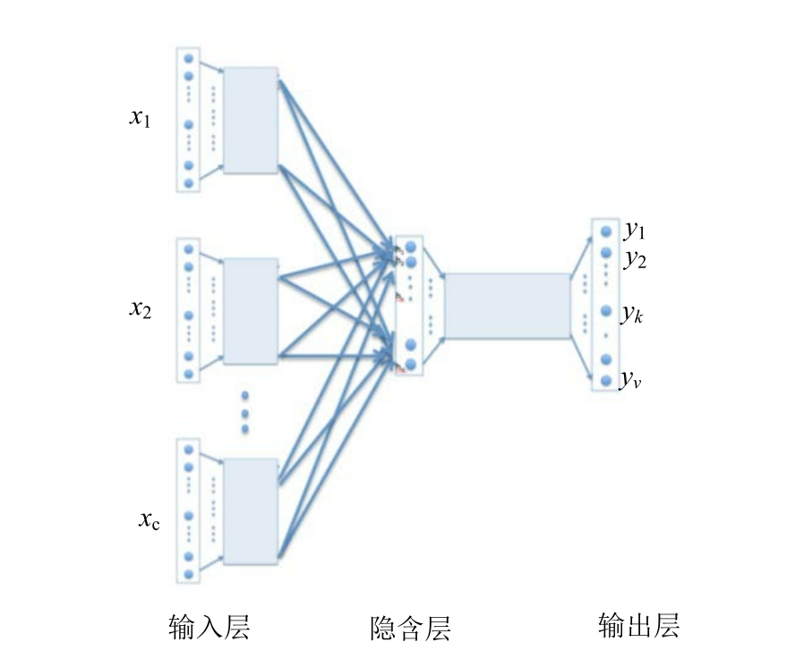
图14-2 CBOW模型：用多个单词预测一个单词
图14-2中的网络结构也可以用图14-3来表示。
图14-3 CBOW模型的另一种图示
在图14-3中，上下文是“the cat sits on the”，要预测的单词为“mat”。图中的∑g（embeddings） 表示将 the、cat、sits、on、the 这 5 个单词的词嵌入表示加起来（即隐含层的值相加）。
在上述结构中，整个网络相当于是一个V类的分类器。V是单词表中单词的数量，这个值往往非常大，所以比较难以训练，通常会简单修改网络的结构，将V类分类变成两类分类。
具体来说，设要预测的目标词汇是“mat”，会在整个单词表中，随机地取出一些词作为“噪声词汇”，如“computer”“boy”“fork”。模型会做一个两类分类：判断一个词汇是否属于“噪声词汇”。一般地，设上下文为h，该上下文对应的真正目标词汇为wt
，噪声词汇为 ，优化函数是
，优化函数是

Qθ （D=1|wt ，h）代表的是利用 wt 和 h对应的词嵌入向量进行一次Logistic回归得到的概率。这样的Logistic回归实际可以看作一层神经网络。因为wt 为真实的目标单词，所以希望对应的 D=1。另外 为与句子没关系的词汇，所以希望对应的D=0，即
。另外，
表示期望，实际计算的时候不可能精确计算这样一个期望，通常的做法是随机取一些噪声单词去预估这个期望的值。该损失对应的网络结构如图14-4所示。
图14-4 选取噪声词进行两类分类的CBOW模型
通过优化二分类损失函数来训练模型后，最后得到的模型中的隐含层可以看作是word2vec中的“vec”向量。对于一个单词，先将它独热表示输入模型，隐含层的值是对应的词嵌入表示。另外，在 TensorFlow 中，这里使用的损失被称为NCE损失，对应的函数为tf.nn.nce_loss。
14.2.2 Skip-Gram实现词嵌入的原理
有了CBOW的基础后，Skip-Gram的原理比较好理解了。在CBOW方法中，是使用上下文来预测出现的词，如上下文是：“The man fell in love with the”，要预测的词是“woman”。Skip-Gram 方法和 CBOW 方法正好相反：使用“出现的词”来预测它“上下文文中词”。如在之前的句子中，是使用“woman”，来预测“man”“fell”等单词。所以，可以把 Skip-
Gram 方法看作从一个单词预测另一个单词的问题。
在损失的选择上，和CBOW一样，不使用V类分类的Softmax交叉熵损失，而是取出一些“噪声词”，训练一个两类分类器（即同样使用 NCE损失）。
14.3 在TensorFlow中实现词嵌入
在本节中，以Skip-
Gram方法为例，介绍如何在TensorFlow中训练一个词嵌入模型。使用的示例代码是TensorFlow源码中的wordvec_basic.py[2]
。
14.3.1 下载数据集
首先导入一些需要的库：
为了用Skip-Gram方法训练语言模型，需要下载对应语言的语料库。在网站 http：//mattmahoney.net/dc/上提供了大量英语语料库供下载，为了方便学习，使用一个比较小的语料库http：//mattmahoney.net/dc/text8.zip作为示例训练模型。程序会自动下载这个文件：

正如注释中所说的，这段程序会从地址http：//mattmahoney.net/dc/text8.zip下载该语料库，并保存为text8.zip文件。如果在当前目录中text8.zip已经存在了，则不会去下载。此外，这段程序还会验证text8.zip的字节数是否正确。
如果读者运行这段程序后，发现没有办法正常下载文件，可以尝试使用上述的url手动下载，并将下载好的文件放在当前目录下。
下载、验证完成后，使用下面的程序将语料库中的数据读出来：

这段程序会把 text8.zip 解压，并读取为 Python 中的列表，列表中的每一个元素是一个单词，如：
这个单词列表原本是一些连续的句子，只是在语料库的预处理中被去掉了标点。它是原始的语料库。
14.3.2 制作词表
下载并取出语料库后，来制作一个单词表，它可以将单词映射为一个数字，这个数字是该单词的id。如原来的数据是 [′anarchism′，′originated′，′as′，′a′，′term′，′of′，′abuse′，′first′，…..，]，那么映射之后的数据是[5234，3081，12，6，195，2，3134，46，….]，其中5234代表单词anarchism，3081代表单词originated，依此类推。
一般来说，因为在语料库中有些词只出现有限的几次，如果单词表中包含了语料库中的所有词，会过于庞大。所以，单词表一般只包含最常用的那些词。对于剩下的不常用的词，会将它替换为一个罕见词标记“UNK”。所有的罕见词都会被映射为同一个单词id。
制作词表并对之前的语料库进行转换的代码为：
在这里的程序中，单词表中只包含了最常用的 50000 个单词。请注意，在这个实现中，名词的单复数形式（如boy和boys），动词的不同时态（如make和made）都被算作是不同的单词。原来的训练数据vocabulary是一个单词的列表，在经过转换后，它变成了一个单词 id 的列表，即程序中的变量data，它的形式是[5234，3081，12，6，195，2，3134，46，….]。
14.3.3 生成每步的训练样本
上一步中得到的变量data包含了训练集中所有的数据，现在把它转换成训练时使用的 batch 数据。一个 batch 可以看作是一些“单词对”的集合，如woman-＞man，woman-＞fell，箭头左边表示“出现的单词”，右边表示该单词所在的“上下文”中的单词，这是在第14.2.2节中所说的Skip-
Gram方法。
制作训练batch的详细程序如下：
尽管代码中已经给出了注释，但为了便于读者理解，还是对这段代码做进一步详细的说明。这里生成一个 batch 的语句为：batch，labels=generate_batch（batch_size=8，num_skips=2，skip_window=1），每运行一次generate_batch函数，会产生一个batch以及对应的标签labels。注意到该函数有三个参数，batch_size、num_skips 和 skip_window，下面来说明这三个参数的作用。
参数batch_size应该是最好理解的，它表示一个batch中单词对的个数。generate_batch返回两个值batch和labels，前者表示Skip-
Gram方法中“出现的单词”，后者表示“上下文”中的单词，它们的形状分别为（batch_size，）和（batch_size，1）。
再来看参数 num_skips 和 skip_window。在生成单词对时，会在语料库中先取出一个长度为skip_window2+1连续单词列表，这个连续的单词列表是上面程序中的变量 buffer。buffer 中最中间的那个单词是 Skip-Gram 方法中“出现的单词”，其余 skip_window2 个单词是它的“上下文”。会在skip_window*2个单词中随机选取num_skips个单词，放入的标签labels。
如skip_window=1，num_skips=2的情况。会首先选取一个长度为3的buffer，假设它是[′anarchism′，′originated′，′as′]，此时originated为中心单词，剩下的两个单词为它的上下文。再在这两个单词中选择num_skips形成标签。由于num_skips=2，所以实际只能将这两个单词都选上（标签不能重复），最后生成的训练数据为originated-＞anarchism和originated-＞as。
又如skip_window=3，num_skips=2，会首先选取一个长度为7的buffer，假设是[′anarchism′，′originated′，′as′，′a′，′term′，′of′，′abuse′]，此时中心单词为a，再在剩下的单词中随机选取两个，构成单词对。比如选择 term 和 of，那么训练数据是a-＞term，a-＞of。
由于每一次都是在skip2个单词中选择num_skips个单词，并且单词不能重复，所以要求skip_window2
＞=num_skips。这在程序中也有所体现（对应的语句是assert num_skips＜=2*skip_window）。
在接下来的训练步骤中，每一步都会调用一次 generate_batch函数，并用返回的batch和labels作为训练数据进行训练。
14.3.4 定义模型
此处的模型实际可以抽象为：用一个单词预测另一个单词，在输出时，不使用Softmax损失，而使用NCE损失，即再选取一些“噪声词”，作为负样本进行两类分类。对应的定义模型代码为：
先定义了一个 embeddings 变量，这个变量的形状是（vocabulary_size，embedding_size），相当于每一行存了一个单词的嵌入向量。例如，单词 id为0的嵌入是embeddings[0，：]，单词id为1的嵌入是embeddings[1，：]，依此类推。对于输入数据 train_inputs，用一个 tf.nn.embedding_lookup 函数，可以根据embeddings变量将其转换成对应的词嵌入向量embed。对比embed和输入数据的标签 train_labels，用 tf.nn.nce_loss 函数可以直接定义其 NCE损失。
另外，在训练模型时，还希望对模型进行验证。此处采取的方法是选出一些“验证单词”，计算在嵌入空间中与其最相近的词。由于直接得到的embeddings矩阵可能在各个维度上有不同的大小，为了使计算的相似度更合理，先对其做一次归一化，用归一化后的 normalized_embeddings 计算验证词和其他单词的相似度。
14.3.5 执行训练
完成了模型定义后，就可以进行训练了，对应的代码比较简单：
每执行 1 万步，会执行一次验证，即选取一些“验证词”，选取在当前的嵌入空间中，与其距离最近的几个词，并将这些词输出。例如，在网络初始化时（step=0），模型的验证输出为：
可以发现这些输出完全是随机的，并没有特别的意义。
但训练到10万步时，验证输出变为：
此时，embedding空间中的向量表示已经具备了一定含义。例如，和单词that最相近的是which，与many最相似的为some，与its最相似的是their等。这些相似性都是容易理解的。如果增加训练的步数，并且合理调节模型中的参数，还会得到更精确的词嵌入表示。
最终，得到的词嵌入向量为 final_embeddings，它是归一化后的词嵌入向量，形状为（vocabulary_size，embedding_size），final_embeddings[0，：]是id为0的单词对应的词嵌入表示，final_embeddings[1，：]是id为1的单词对应的词嵌入表示，依此类推。
14.3.6 可视化
其实，程序得到final_embeddings之后就可以结束了，不过可以更进一步，对词的嵌入空间进行可视化表示。由于之前设定的embedding_size=128，即每个词都被表示为一个128维的向量。虽然没有方法把128维的空间直接画出来，但下面的程序使用了t-
SNE方法把128维空间映射到了2维，并画出最常使用的500个词的位置。画出的图片保存为tsne.png文件：
在运行这段代码时，如果是通过ssh连接服务器的方式执行，则可能会出现类似于“RuntimeError：Invalid DISPLAY variable”之类的错误。此时只需要在语句“import matplotlib.pyplot as plt”之前加上下面两条语句即可成功运行：
生成的“tsne.jpg”如图14-5所示。
图14-5 使用t-SNE方法可视化词嵌入（详见彩插）
在图14-5中，相似词之间的距离比较近。如图14-6所示为放大后的部分词嵌入分布。
图14-6 放大后的部分词嵌入分布
很显然，his、her、its、their几个词性相近的词被排在了一起。
除了相似性之外，嵌入空间中还有一些其他的有趣的性质，如图 14-7所示，在词嵌入空间中往往可以反映出man-woman，king-
queen的对应关系，动词形式的对应关系，国家和首都的对应关系等。

图14-7 词嵌入空间中的对应关系
在第 12章训练 Char RNN时，也曾提到对汉字做“embedding”，那么第12章中的embedding和本章中的word2vec有什么区别呢？事实上，不管是在训练 Char RNN时，还是在训练 word2vec模型，都是加入了一个“词嵌入层”，只不过对象有所不同——一个是汉字，一个是英文单词。这个词嵌入层可以把输入的汉字或英文单词嵌入到一个更稠密的空间中，这有助于模型性能的提升。训练它们的方式有所不同，在第12章中，是采用Char RNN的损失，通过预测下一个时刻的字符来训练模型，“顺带”得到了词嵌入。在本章中，是采用Skip-
Gram方法，通过预测单词的上下文来训练词嵌入。最后，如果要训练一个以单词为输入单位的Char RNN（即模型的每一步的输入都是单词，输入的每一步也是单词，而不是字母），那么可以用本章中训练得到的词嵌入作为要训练的Char RNN的词嵌入层的初始值，这样做可以大大提高收敛速度。对于汉字或是汉字词语，也可以采取类似的方法。
14.4 总结
在本章中，首先介绍了一下词嵌入方法提出的动机，接着学习了实现词嵌入的两种方法：CBOW和Skip-Gram。最后，以Skip-Gram方法为例，讲解了如何在 TensorFlow 中实现词嵌入并进行可视化。得到单词的嵌入向量表示后，可以用它作为输入来提升 RNN模型的性能，也可以直接将其用于各类文本任务。
拓展阅读
本章的程序实际修改自TensorFlow的官方教程：https：//www.tensorflow.org/tutorials/word2vec，读者在阅读时可以参考该教程了解更多信息。
关于 CBOW 模型和 Skip-Gram 模型的更多细节，可以参考论文Efficient Estimation of Word Representations in Vector Space（第3.1节和第3.2节）。
[1]
严格来说，“word2vec”只是实现词嵌入的一些算法的集合，包含了下面会讲到的CBOW和Skip-
Gram方法。不过很多时候，“word2vec”也会代指词嵌入。在本章中，不对这两个概念做特别严格的区分。
[2]
实际是TensorFlow源码中的一个示例程序。地址在：https：//github.com/tensorflow/tensorflow/blob/master/tensorflow/examples/tutorials/word2vec/word2vec_basic.py。
第15章 在TensorFlow中进行时间序列预测
常常会碰到各种各样时间序列预测问题，如商场人流量的预测、商品价格的预测、股价的预测，等等。TensorFlow 1.3版本新引入了一个TensorFlow Time Series库（以下简称为TFTS），它可以帮助在TensorFlow中快速搭建高性能的时间序列预测系统，并提供包括 AR、LSTM 在内的多个模型。本章会通过实例的形式，详细地介绍TFTS库的使用方法。
15.1 时间序列问题的一般形式
一般地，时间序列数据抽象为两部分：观察的时间点和观察到的值。以商品价格为例，某年一月的价格为120元，二月的价格为130元，三月的价格为135元，四月的价格为132元。那么观察的时间点可以看作是1，2，3，4，而在各时间点上观察到的数据的值为120，130，135，132。
观察的时间点可以不连续。比如二月的数据有缺失，那么实际的观察时间点为 1，3，4，对应的数据为 120，135，132。所谓时间序列预测，是指预测某些未来的时间点上（如5，6）数据的值应该是多少。
TFTS 库正是以按照时间点+观察值的方式对时间序列问题进行抽象包装的。在TFTS中，观察的时间点用“times”表示，而对应的值用“values”表示。在训练模型时，输入数据需要同时具有 times 和 values 两个字段；在预测时，需要给定一些初始的数值，以及需要预测的时间点 times。之后会对训练、预测的过程做进一步的介绍。
15.2 用TFTS读入时间序列数据
在训练模型之前，需要将时间序列数据读入成Tensor的形式。TFTS库中提供了两个方便的读取器NumpyReader和CSVReader。前者用于从Numpy数组中读入数据，后者用于从 CSV 文件中读入数据。下面来分别介绍这两个函数。
15.2.1 从Numpy数组中读入时间序列数据
这里提供一个示例文件 test_input_array.py，将演示怎么读入 Numpy 数组中的时间序列数据。
首先导入需要的包及函数（它们的用途会在之后解释）：
接着，利用np.sin生成一个实验用的时间序列数据。该时间序列数据实际上是在正弦曲线上加入了上升的趋势和一些随机的噪声：
该实验用的时间序列数据的图像被保存为“timeseries_y.jpg”文件，如图15-1所示。
图15-1 实验用的时间序列数据
横坐标对应变量“x”，纵坐标对应变量“y”，它们分别对应之前提到过的“观察的时间点”和“观察到值”。TFTS读入x和y的方式非常简单，请看下面的代码：
首先把 x 和 y 变成 Python 中的词典（变量 data）。变量 data 中的键值tf.contrib.timeseries.TrainEvalFeatures.TIMES实际是一个字符串“times”，而tf.contrib.timeseries.TrainEvalFeatures.VALUES是字符串“values”。所以，上面的定义直接写成“data={‘times’：x，‘values’：y}”也是可以的。写成比较复杂的形式是为了和源码中的写法保持一致。
得到的 reader 有一个 read_full（）方法，它的返回值是时间序列对应的Tensor，可以用下面的代码进行试验：
请注意，不能直接使用 sess.run（reader.read_full（））从 reader 中取出所有数据。原因在于 read_full（）方法会产生读取队列，而队列的线程此时还没启动，需要使用tf.train.start_queue_runners启动队列，才能使用sess.run（）来获取值。
在训练时，通常不会使用整个数据集进行训练，而是采用batch的形式。从reader出发，建立batch数据的方法也很简单：
tf.contrib.timeseries.RandomWindowInputFn会在 reader的所有数据中，随机选取窗口长度为window_size的序列，并包装成batch_size大小的batch数据。换句话说，一个 batch 内共有 batch_size个序列，每个序列的长度为window_size。
以batch_size=2，window_size=10为例，可以打印出一个batch内的数据：
同之前一样，需要tf.train.start_queue_runners启动内部的队列。打出的一个batch的数据为：
原先的数据长度为1000的时间序列（x=np.array（range（1000））），使用tf.contrib.timeseries.RandomWindowInputFn，并指定 window_size=10，batch_size=2 的功能是在这长度为 1000 的时间序列中，随机选取长度为 10的序列，并在每个batch里包含两个这样的序列。这也可以从打印出的数据中看出来。
使用tf.contrib.timeseries.RandomWindowInputFn返回的train_input_fn可以进行训练了。这是在 TFTS 中读入 Numpy 数组时间序列的基本方式。下面介绍如何读入CSV格式的数据。
15.2.2 从CSV文件中读入时间序列数据
有时，时间序列数据是存在 CSV 文件中的。当然可以将其先读入为Numpy 数组，再使用之前的方法处理。更方便的做法是使用tf.contrib.timeseries.CSVReader读入。提供了一个test_input_csv.py代码，示例如何将文件./data/period_trend.csv中的时间序列读入。
假设CSV文件的时间序列数据的形式为：
CSV文件的第一列为时间点，第二列为该时间点上观察到的值。将其读入的方法为：
实际读入的代码只有一行，直接使用函数 tf.contrib.timeseries.CSVReader得到了reader。将reader中所有数据打印出来的方法和之前是一样的：
从reader出发，建立batch数据的train_input_fn的方法也完全相同：
最后，可以打印出两个batch的数据进行测试：

以上是 TFTS库中数据的读取方式。 总的来说，会从 Numpy 数组或者 CSV 文件出发构造一个 reader ，再利用
reader 生成 batch 数据。最后得到的 Tensor 为 train_input_fn ，这个
train_input_fn 会被当作训练时的输入。
15.3 使用AR模型预测时间序列
15.3.1 AR模型的训练
自回归模型（Autoregressive model，简称为AR模型）是统计学上处理时间序列模型的基本方法之一。TFTS 中已经实现了一个自回归模型，对应的训练、验证并进行时间序列预测的示例程序为 train_array.py。先仿照第15.2.1节定义出一个train_input_fn：
使用的时间序列数据如图15-2所示（会被保存为“timeseries_y.jpg”）。
图15-2 实验用的时间序列数据
针对这个序列，对应的AR模型的定义是：
这里的几个参数比较重要，此处分别给出解释。第一个参数periodicities表示序列的规律性周期。在定义数据时使用的语句是“y=np.sin（np.pi*x/100）+x/200.+noise”，因此周期为200。input_window_size表示模型每次输入的值，output_window_size 表示模型每次输出的值。input_window_size和output_window_size加起来必须等于train_input_fn中总的window_size。在这里，总的window_size为40，input_window_size为30，output_window_size为10；也是说，一个batch内每个序列的长度为40，其中前30个数被当作模型的输入值，后面 10 个数为这些输入对应的目标输出值。最后一个参数loss 指定采取哪一种损失，一共有两种损失可以选择，分别是NORMAL_LIKELIHOOD_LOSS和SQUARED_LOSS。
num_features参数表示在一个时间点上观察到的数的维度。这里每一步都是一个单独的值，所以num_features=1。
除了程序中出现的几个参数外，还有一个比较重要的参数是model_dir。它表示模型训练好后保存的地址，如果不指定的话，会随机分配一个临时地址。
使用变量ar的train方法可以直接进行训练：
15.3.2 AR模型的验证和预测
TFTS中验证（evaluation）的含义是：使用训练好的模型在原先的训练集上进行计算，由此可以观察到模型的拟合效果，对应的程序段是：
如果想要明白这里的逻辑，首先要理解之前定义的AR模型：它每次都接收一个长度为30的输入观测序列，并输出长度为10的预测序列。整个训练集是一个长度为1000的序列，前30个数首先被当作“初始观测序列”输入到模型中，由此可以计算出下面10步的预测值。接着又会取30个数进行预测，这30个数中有10个数是前一步的预测值，新得到的预测值又会变成下一步的输入，依此类推。
最终得到970个预测值（970=1000-30，因为前30个数是没办法进行预测的）。970个预测值被记录在evaluation[‘mean’]中。evaluation还有其他几个键值，如 evaluation[‘loss’]表示总的损失，evaluation[‘times’]表示evaluation[‘mean’]对应的时间点，等等。
evaluation[‘start_tuple’]会被用于之后的预测中，它相当于最后 30 步的输出值和对应的时间点。以此为起点，可以对 1000 步以后的值进行预测，对应的代码为：
这里的代码在 1000步之后又向后预测了 250个时间点。对应的值保存在 predictions[‘mean’]中。可以把观测到的值、模型拟合的值、预测值用下面的代码画出来：
画好的图片会被保存为“predict_result.jpg”，如图15-3所示。
图15-3 使用AR模型预测时间序列（详见彩插）
从图15-3中可以看出，前1000步模型原始观测值的曲线和模型拟合值非常接近，说明模型拟合得已经比较好了，1000步之后的预测也合情合理。
15.4 使用LSTM模型预测时间序列
给出两个用LSTM预测时间序列模型的例子[1]
，分别是train_lstm.py和train_lstm_multivariate.py。前者是在LSTM中进行单变量的时间序列预测，后者是使用LSTM进行多变量时间序列预测。为了使用LSTM模型，需要先使用TFTS库对其进行定义，定义模型的代码来源于TFTS的示例源码[2]
，在train_lstm.py和train_lstm_multivariate.py中分别复制了一份。
15.4.1 LSTM模型中的单变量时间序列预测
同样，用函数加噪声的方法生成一个模拟的时间序列数据：
此处y对x的函数关系比之前复杂，因此更适合用LSTM这样的模型找出其中的规律。得到y和x后，使用NumpyReader读入为Tensor形式，接着用 tf.contrib.timeseries.RandomWindowInputFn将其变为 batch训练数据。一个batch中有4个随机选取的序列，每个序列的长度为100。
接下来定义一个LSTM模型：
num_features=1表示单变量时间序列，即每个时间点上观察到的量只是一个单独的数值，num_units=128表示使用隐层为128大小的LSTM模型。
训练、验证和预测的方法都和之前类似。在训练时，在已有的 1000 步的观察量的基础上向后预测200步：
将验证、预测的结果取出并画成示意图，画出的图像会保存成“predict_result.jpg”文件：
预测效果如图 15-4 所示，横坐标为时间轴，前 1000 步是训练数据，1000～1200步是模型预测的值。
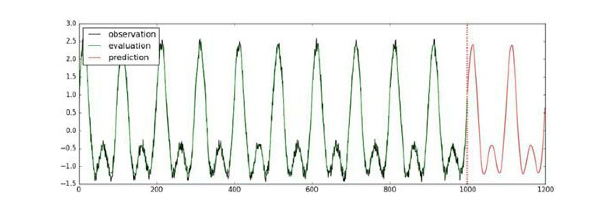
图15-4 使用LSTM预测时间序列的效果
15.4.2 LSTM模型中的多变量时间序列预测
所谓多变量时间序列，是指在每个时间点上的观测量有多个值。在data/multivariate_periods.csv文件中，保存了一个多变量时间序列的数据：
这个CSV文件的第一列是观察时间点，除此之外，每一行还有5个数，表示在这个时间点上观察到的数据。换句话说，时间序列上每一步都是一个5维的向量。
使用TFTS读入该CSV文件的方法为：
与之前的读入相比，唯一的区别是 column_names 参数。它告诉 TFTS在CSV文件中，哪些列表示时间，哪些列表示观测量。
接下来定义LSTM模型：
区别在于使用num_features=5而不是1，原因在于每个时间点上的观测量是一个5维向量。
训练、验证、预测及画图的代码与之前比较类似，可以参考代码“train_lstm_multivariate.py”，最后的运行结果如图15-5所示。
图15-5 使用LSTM预测多变量时间序列（详见彩插）
图 15-5 中前 100 步是训练数据，一条线代表观测量在一个维度上的取值。100步之后为预测值。
15.5 总结
本章详细介绍了TensorFlow Time Series（TFTS）库的使用方法，包括如何在TFTS中读入时间序列数据，如何使用AR模型预测时间序列，如何使用LSTM模型预测时间序列。希望读者能够通过本章的内容，掌握TFTS的基本使用方法。
拓展阅读
本章主要介绍了TensorFlow的Time Series库，读者可以在官方网站https：//github.com/tensorflow/tensorflow/tree/master/tensorflow/contrib/timeseries 了解更多信息。如在examples文件夹下可以找到更多程序实例。
[1]
LSTM模型的例子需要使用TensorFlow 1.4.0rc0及以上版本才能成功运行。
[2]
https://github.com/tensorflow/tensorflow/blob/master/tensorflow/contrib/timeseries/examples/lstm.py.
第16章 神经网络机器翻译技术
机器翻译是指用机器将一种语言自动翻译成另外一种语言的技术。传统的机器翻译一般采取基于规则或基于词组统计规律的方法。2013 年以来，随着深度学习技术的发展，神经网络机器翻译（Neural Machine Translation）技术开始兴起。与传统方法不同的是，神经网络机器翻译首先将源语言的句子向量化，转化成计算机可以“理解”的形式，再生成另一种语言的译文。这种方法和人类的做法类似，可以产生更贴合原意也更加符合语法规范的翻译。目前，各大商业公司都开始使用神经网络机器翻译代替原来的机器翻译系统。
本章会首先介绍神经网络机器翻译技术的原理，再介绍如何使用TensorFlow NMT训练一个中英翻译引擎。
16.1 Encoder-Decoder模型的原理
Encoder-Decoder 模型是使用神经网络进行机器翻译的基本方法，一般也称作 Seq2Seq 模型。在介绍 Encoder-Decoder 模型之前，先来看图 12-19中原始的N VS N RNN结构，该结构要求输入序列和输出序列等长，然而遇到的大部分问题序列都是不等长的（比如本章的机器翻译问题，源语言和目标语言的句子往往并没有相同的长度）。
Encoder-Decoder 模型可以有效地建模输入序列和输出不等长的问题。具体来说，它会先用一个 Encoder
将输入的序列编码为一个上下文向量 c ，再使用 Decoder 对 c 进行解码，将之变为输出序列。
对应到机器翻译问题中，输入的句子被Encoder编码为向量c，c中存储了神经网络对句子的“理解”，再利用Decoder解码c，以生成翻译之后的句子。
如图 16-1 所示，得到上下文向量 c 的方法有很多。最简单的方法是把Encoder 的最后一个隐状态赋值给 c，还可以对最后的隐状态做一个变换得到c，也可以对所有的隐状态做变换。
图16-1 Encoder计算c的几种方式
拿到c之后，用另一个RNN网络对其进行解码，这部分RNN网络被称为Decoder。具体做法是将c当作初始状态h0 输入到Decoder中，如图16-2所示。
图16-2 Decoder将c当作初始状态
还有一种做法是将c当作每一步的输入，如图16-3所示。
图16-3 Decoder将c当作每一步的输入
由于这种 Encoder-Decoder 结构输入和输出的序列可以是任意长度，所以应用的范围非常广泛，例如：
●机器翻译。机器翻译是 Encoder-Decoder 最经典的应用，事实上这一结构是在机器翻译领域最先提出的。
●文本摘要。输入是一段文本序列，输出是这段文本序列的摘要序列。
●阅读理解。将输入的文章和问题分别编码，再对其进行解码得到问题的答案。
●语音识别。输入是语音信号序列，输出是文字序列。
……
在本章中，主要用Encoder-Decoder结构解决机器翻译问题。
16.2 注意力机制
在Encoder-
Decoder结构中，Encoder把所有的输入序列都编码成一个统一的语义特征c再解码，因此，c中必须包含原始序列中的所有信息，它的长度成了限制模型性能的瓶颈。如在机器翻译问题中，当被翻译的句子较长时，一个c可能无法存储如此多的信息，翻译精度会下降。
注意力机制（Attention）通过在每个时间输入不同的c来解决这个问题。它最早由Dzmitry Bahdanau[1] 提出，由Minh-Thang Luong[2]
完善。在本节中，会介绍Dzmitry Bahdanau提出的最原始的注意力机制。
图16-4展示了一个带有注意力机制的Decoder，它在解码的不同阶段使用不同的上下文向量c。
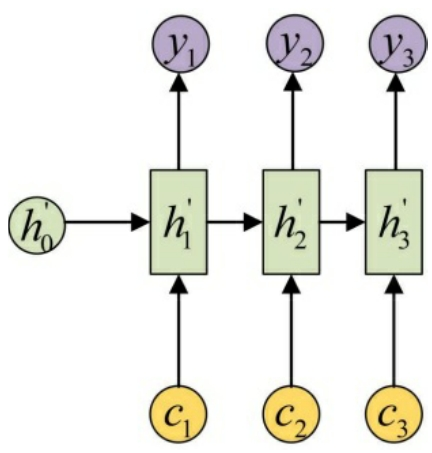
图16-4 带有注意力机制的Decoder（在每一步解码时使用不同的c）
使用注意力机制后，每一个c会自动选取与当前所要输出的y最合适的上下文信息。具体来说，用aij 衡量Encoder中第j阶段的h j 和解码时第i阶段的相关性，最终Decoder中第i阶段输入的上下文信息ci 来自于所有h j 对aij 的加权之和。
以机器翻译为例（将中文翻译成英文），每一个ci 的具体计算方法如图16-5所示。
图16-5 使用注意力机制时各个c的计算方式
输入的序列是“我爱中国”，因此，Encoder 中的h1 、h2 、h3 、h4 可以分别看作是“我”“爱”“中”“国”代表的信息。在翻译成英语时，第一个上下文c1 应该和“我”字最相关，因此对应的a11 值比较大，而相应的a12
、a13 、a14 比较小。c2 应该和“爱”最相关，因此对应的a22 值比较大。最后的c3 和h3 、h4 最相关，因此a33 、a34 的值比较大。
至此，关于注意力模型，只剩最后一个问题了：这些权重aij 是怎么来的？
事实上，aij 同样是模型自动“学”出来的，它实际和Decoder的第i-1阶段的隐状态、Encoder第j个阶段的隐状态有关。
同样还是拿上面的机器翻译举例，a1 j 的计算如图1 6-6所示（此时箭头表示对 和h j 同时做变换）。
图16-6 a1 j 的计算
a2 j 的计算如图16-7所示。
图16-7 a2 j 的计算
a3 j 的计算如图16-8所示。
图16-8 a3 j 的计算
最后，用严格的数学表达式重新整理注意力机制的工作原理。上下文向量ci 的计算为
aij 根据 与h j 计算
eij 只是一个中间变量，最后得到的aij 显然满足
16.3 使用TensorFlow NMT搭建神经网络翻译引擎
2017年7月，Google公司公布了基于TensorFlow构建的NMT项目[3]
，该项目采用了最新的深度学习技术，可以让每个人轻松地训练自己的神经网络翻译引擎。NMT项目支持基本的Encoder-
Decoder结构，也支持注意力机制。在本节中，会首先介绍NMT项目的官方示例，接着动手搭建一个可以将英文翻译成中文的神经网络翻译引擎。
16.3.1 示例：将越南语翻译为英语
本小节中的内容来自NMT项目的官方教程，将动手训练一个小型的神经网络翻译模型，它可以将越南语翻译为英语。通过这个项目，读者可以初步感受TensorFlow NMT的使用。
首先下载TensorFlow NMT的代码：
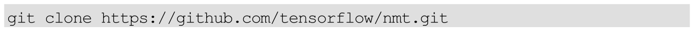
本书附带的chapter16/文件夹中也有这份项目代码。NMT项目根目录的结构为：
接下来所讲的命令基本上都是在NMT项目的根目录下运行的。
运行下面的命令可以下载一个越南语与英语的平行语料库：
下载的文件将会保存在/tmp/nmt_data/目录下，一共有 6 个文件，见表16-1。
表16-1 下载的文件及其用途
续表
train.en和train.vi，tst2012.en和tst2012.vi，tst2013.en和tst2013.vi，它们的句子都是每一行一一对应的，这是所谓的“平行语料库”。利用平行语料库，就可以开始训练神经网络翻译模型了！对应的命令为：
首先新建了一个/tmp/nmt_model文件夹，训练时使用的参数、模型和日志会被保存到这个文件夹中。
训练时，需要用到3个数据集：训练集、验证集、测试集。训练集自然是用于训练，验证集用于在训练时对参数进行调整，测试集用于测试最终模型的性能。先用—src vi和—tgt en标识源语言越南语（vi）和目标语言英语（en），再用三个 prefix 来表示训练集、验证集和测试集的位置。例如—
train_prefix为/tmp/nmt_data/train，那么训练集中越南语句子的位置是/tmp/nmt_data/train.vi，英语句子的位置是/tmp/nmt_data/train.en。—dev_prefix表示验证集，而
—test_prefix表示测试集。
--vocab_prefix=/tmp/nmt_data/vocab指的是“词汇表”。在训练集train.en和 train.vi 中，每一行都可以看作用空格隔开的“单词”的集合。这里的单词是广义上的，如标点符号也被看作一个单词。例如，在句子“Rachel Pike：The science behind a climate headline”中，一共有包含冒号在内的9个单词。在使用RNN时，输入序列中的每一步是一个单词。
所有的单词都被存储在对应语言的词汇表中，如/tmp/nmt_data/vocab.en中存储了英语文本中的单词，/tmp/nmt_data/vocab.vi中存储了越南语文本中的单词。每个词汇表中都有三个特殊的单词：＜unk＞、＜s＞、＜/s＞。＜unk＞表示所有不常见的单词，通常会对文本中使用的单词进行计数，取最常用的单词进行训练，所有剩下的单词都被替换为＜unk＞。＜s＞表示句子的开头，＜/s＞表示句子的结尾。程序中会自动把它们添加到句子的开头和结尾。
除了以上参数外，剩下的参数含义为：
●—out_dir=/tmp/nmt_model：模型和训练的日志文件会被保存到/tmp/nmt_model文件夹中。之后可以使用tensorboard
—logdir/tmp/nmt_model打开TensorBoard监控训练过程。
●—num_train_steps=12000：一共训练12000步。
●—steps_per_stats=100：每隔100步打印出当前的训练信息。
●—num_layers=2：使用两层的RNN（LSTM）。
●—num_units=128：RNN（LSTM）的隐层单元个数为128维。
●—dropout=0.2：使用的Dropout的概率为0.2。换句话说，每个连接被保留的概率是0.8。
●—metrics=bleu：使用BLEU作为测试指标。
训练完成后，模型会被保存在nmt_model文件夹中。
如何使用训练好的模型对新的句子进行翻译？首先需要准备一个文件，存储需要翻译的句子，例如创建一个/tmp/my_infer_file.vi 文件，并将/tmp/nmt_data/tst2013.vi中的越南语句子复制一些到/tmp/my_infer_file.vi里。接着使用下面的命令生成其英语翻译：
此时打开/tmp/nmt_model/output_infer可以看到英语的翻译了。
使用上述命令只是在训练基础的 Encoder-Decoder 模型，并没有加入注意力机制。在TensorFlow NMT中对模型加入注意力机制很简单，只需要使用—attention 具体指定一种注意力机制即可。此处一共提供了 4 种选项：bahdanau、normed_bahdanau、luong、scaled_luong。其中 bahdanau 是在第16.2节中所讲的Dzmitry Bahdanau提出的原始的注意力机制。这里使用性能更好的scaled_luong来训练模型：
训练好的模型会被保存到/tmp/nmt_attention_model目录下。对应的测试方法为：
生成的翻译会被保存在/tmp/nmt_attention_model/output_infer文件中。
16.3.2 构建中英翻译引擎
上一节是TensorFlow NMT的官方示例，对于读者来说，更感兴趣的也许是中文、英文之间的相互翻译。在本节中，会利用TensorFlow NMT训练一个可以将英文翻译为中文的神经网络翻译模型。
使用的数据库来自于NiuTrans提供的开源的中英平行语料库[4]
，包含中文、英文各10万条。在chapter_16_data中提供了一份整理好的中英平行语料数据，共分为train.en、train.zh、dev.en、dev.zh、test.en、test.zh。其中，test.en、test.zh完全复制自dev.en、dev.zh（因为原始数据中没有提供双语平行的测试集）。训练集train.en、train.zh中共含有 10 万条平行数据，验证集中共含有1000条数据。
英语的数据样例为：
只要是空格隔开的是一个单词，标点符号也算作一个单词。除此之外，所有的首句字母大写都被还原为小写，这样可以保证在句中和句首出现的单词是一致的。
中文的数据样例为：
中文不像英文有天然的空格作为单词的分隔，所以需要先将中文分词，才能将其输入到RNN网络中。好在NiuTrans已经事先做好了分词工作，提供的所有中文句子都是分好词的。训练数据中所有的中文单词被整理到了vocab.zh文件中。
将train.en、train.zh、dev.en、dev.zh、test.en、test.zh复制到/tmp/nmt_zh/目录下，接下来运行下面的命令训练模型：
这些参数的含义基本上都在第16.3.1节中介绍过了，此处不再进行介绍。这里会训练一个更大的神经网络。它由三层 LSTM 组成（—num_layers 3），LSTM 的隐层具有 256 个单元（—num_units 256）。训练好的模型会被保存在/tmp/nmt_model_zh目录下。
在模型训练的过程中，或训练完成后，都可以利用已经保存的模型将英文翻译成中文。将如下英文内容保存到文件/tmp/my_infer_file.en中（格式为：每一行一个英文句子，句子中每个英文单词，包括标点符号之间都要有空格分隔，和训练样本保持一致。这里的句子是从测试文件test.en中复制的）：
运行下面的命令可以将其翻译到中文：
翻译后的结果被保存在/tmp/output_infer 文件中（结果在中文单词之间同样有空格分隔，在实际使用时可以在后续处理中将之去除）：
可以对比原句、参考翻译、机器翻译后的句子，见表16-2。
表16-2 训练模型英译中的效果对比
由此可见，模型确实可以将英文翻译为中文。此外，在训练时还可以用下面的命令打开TensorBoard：
在此可以看到损失、学习率以及困惑度（Perplexity）、BLEU 等测试指标。如test_bleu反映了模型在测试数据上的BLEU，如图16-9所示。
图16-9 训练时在测试集上的BLEU指标
BLEU的值越大说明模型越好。读者可以调节—num_layers、—num_units等参数，来获得性能上的提升。
16.4 TensorFlow NMT源码简介
在第16.3节中，通过两个例子了解了TensorFlow NMT的基本使用方法。在本节中，将会对TensorFlow NMT的源码做简要介绍，主要涉及的内容为词嵌入、Encoder-Decoder模型、注意力机制相关的源码。
在model.py文件中[5]
，构建了基本的词嵌入及Encoder-
Decoder模型。这个模型的输入是encoder_inputs，它的形状为（max_time，batch_size），encoder_inputs的值为编码后的单词id。
在第14章中提到过，比起将单词的id独热编码后输入模型，使用词嵌入（word embedding）将单词先映射到一个低维空间上，再输入模型效果会更好。在TensorFlow NMT中，采用了词嵌入的方法，对应的语句为：
这里使用embeddding_lookup查找某个单词id对应的词嵌入向量。在第12.5.1节和第14.3.4节中都使用过类似的代码。
词嵌入之后得到新的输入 encoder_emb_inp，它的形状为（max_time，batch_size，embedding_size），它将被传入Encoder中。
Encoder部分对应的代码：
这里定义了一个BasicLSTMCell，然后使用tf.nn.dynamic_rnn展开时间维度。需要注意的是，由于encoder_emb_inp的形状为（max_time，batch_size，embedding_size），即时间在第一个维度上，所以需要指定time_major=True。
Encoder得到的encoder_state相当于在第16.1节中所说的上下文表示向量 c，它包含了神经网络对输入句子的“理解”。接下来，要使用 Decoder对其解码，将之转换为输出序列：
Decoder部分的代码为：
这里的核心是tf.contrib.seq2seq.BasicDecoder，它是TensorFlow seq2seq API中的一个类。它接收一个decoder_cell（和encoder_cell类似，同样是一个BasicLSTMCell），一个helper，还有上下文向量encoder_state，投影层变量projection_layer。最终可以利用它得到结果outputs。
投影层变量的定义如下所示，它把 LSTM 每一步的输出转换成一个vocab_size 维的向量，vocab_size 是目标语言词汇表中所有词的个数。换句话说，每一步都输出所有可能单词的概率，相当于一个vocab_size类分类问题。
除了基本的Encoder-
Decoder模型外，TensorFlow还在文件attention_model.py[6]
中定义了含有注意力机制的Encoder-Decoder模型。其中关键的代码为：
对原先的 decoder_cell 运用 tf.contrib.seq2seq.AttentionWrapper 包装后，得到新的 decoder_cell 会自动具有注意力机制。使用 decoder_cell 对上下文进行解码的方法与之前基本一致。
16.5 总结
在本章中，首先介绍了实现神经网络机器翻译的基本 RNN网络结构：Encoder-
Decoder，并且介绍了它的重要改进——注意力机制。接着，以TensorFlow NMT为例，构建了两个神经网络翻译模型。最后，简要介绍了TensorFlow NMT中关于Encoder-Decoder结构和注意力机制的源码。
拓展阅读
关于用Encoder-Decoder结构做机器翻译任务的更多细节，可以参考原始论文 Learning Phrase Representations using RNN Encoder-Decoder for Statistical Machine Translation。
关于注意力机制的更多细节，可以参考原始论文 Neural Machine Translation by Jointly Learning to Align and Translate。此外还有改进版的注意力机制：Effective Approaches to Attention-based Neural Machine Translation。
[1] 论文Neural Machine Translation by Jointly Learning to Align and Translate。
[2] 论文Effective Approaches to Attention-based Neural Machine Translation。
[3]
https://github.com/tensorflow/nmt.
[4]
来自http：//218.75.34.138：5010/ntopen_server/niutrans-download-page.jsp。
[5]
https://github.com/tensorflow/nmt/blob/master/nmt/model.py.
[6]
https://github.com/tensorflow/nmt/blob/master/nmt/attention_model.py.
第17章 看图说话：将图像转换为文字
所谓Image Caption，是指从图片中自动生成一段描述性文字，有点类似于小时候做过的“看图说话”。对于人来说，完成Image Caption是简单而自然的一件事，但对于机器来说，这项任务却充满了挑战性。原因在于，要完成Image Caption，机器不仅要能检测出图像中的物体，而且要理解物体之间的相互关系，最后还要用合理的语言表达出来，这里面每一个步骤都颇具难度。
本章将首先介绍Image Caption的几篇经典的论文，接着会介绍Google公司官方的TensorFlow实现。
17.1 Image Caption技术综述
17.1.1 从Encoder-Decoder结构谈起
在介绍 Image Caption 相关的技术前，有必要先来复习 RNN 的Encoder-
Decoder结构。在最原始的RNN结构中，输入序列和输出序列必须是严格等长的。但在机器翻译等任务中，源语言句子的长度和目标语言句子的长度往往不同，因此需要将原始序列映射为一个不同长度的序列。Encoder-
Decoder 模型解决了这样一个长度不一致的映射问题，它的结构如图17-1所示。
图17-1 Encoder-Decoder结构
w1 ，w2 ，w3 ，…，wn 是输入的单词序列，而y1 ，y2 ，…，ym 为输出的单词序列，每个wi 和yi 都是已经经过独热编码的单词，因此它们都是1×D的向量，其中D为程序中使用的单词表的长度。RNN 的隐层状态（hidden state），用h1 ，h2
，h3 ，…，hn 表示。在实际应用中，往往不是把独热编码的w1 ，w2 ，w3 ，…，wn 输入RNN，而是将其转换为对应的word embedding的形式，即图17-1中的x1 ，x2 ，x3 ，…，xn ，再输入RNN网络。
在Encoder部分，RNN将所有的输入“编码”成一个固定的向量表示，即最后一个隐层状态hn ，认为这个hn 包含了原始输入中所有有效的信息。hn 会被传递给Decoder，Decoder在每一步都会利用hn 信息进行“解码”，并输出合适的单词序列y1 ，y2 ，…，ym。这样，就完成了不同长度序列之间的转换工作。
Encoder-Decoder 结构最初是在论文 Learning Phrase Representations using RNN Encoder-
Decoder for Statistical Machine Translation中提出并应用到机器翻译系统中的。这里还是回到Image Caption任务中来，看看如何把Encoder-Decoder结构用到Image Caption上。
17.1.2 将Encoder-Decoder应用到Image Caption任务中
在机器翻译任务中，输入和输出都是单词序列，现在换一下，在Image Caption 任务中，输入是图像，输出是单词序列，应该怎么建模呢？其实很简单，只需要将原来的Encoder RNN换成CNN，为图像提取一个“视觉特征”I，然后还是使用Decoder将I解码为输出序列即可，这是论文Show and Tell：A Neural Image Caption Generator中的想法。
Show and Tell：A Neural Image Caption Generator论文算是实现Image Caption 任务早期的开山之作，它只把 Encoder-Decoder 结构做了简单修改，在Image Caption任务上取得了较好的结果，这篇论文中网络的具体结构如图 17-2所示。先看提取图像特征的 CNN部分，由于这篇论文是 Google公司出品的，因此这部分使用了Inception模型。再看Decoder部分，将RNN换成了性能更好的LSTM，输入还是word embedding，每步的输出是单词表中所有单词的概率，这些都是标准做法，不再赘述。
图17-2 论文Show and TeII：A NeuraI Image Caption Generator中的网络结构
这篇论文为Image Caption任务提供了一种统一的思路，下面会连着介绍三篇论文，都是在这篇论文基础上进行的改进。
此外，会在下一节中介绍这篇论文的 TensorFlow 实现，如果读者对具体实现更感兴趣而不想了解更多原理的话，可以直接跳到第 17.2
节进行阅读。
17.1.3 对Encoder-Decoder的改进1：加入注意力机制
针对翻译精度的下降问题，论文 Neural machine translation by jointly learning to align and translate提出了一种注意力机制，不再使用统一的语义特征，而让 Decoder 在输入序列中自由选取需要的特征，从而大大提高了Encoder-
Decoder的模型性能。
在 Image Caption 任务中，同样可以利用注意力机制对原来的Encoder-Decoder机制进行改进，对应的论文是Show，Attend and Tell：Neural Image Caption Generation with Visual Attention了。显然这篇文章的标题参考了之前提到的“Show and Tell”，将之改为“Show，Attend and Tell”，意即加入了注意力机制。
具体怎么来做呢？之前只是用CNN提取了固定长度的向量特征I，实际上可以利用CNN的空间特性给图片的不同位置都提取一个特征。举例来说，用a={a1 ，a2
，…，aL }，ai ∈RD 表示提取的图片特征，一共有L个位置，每个位置的特征为一个D维的向量。对于一个高、宽为14，通道数为256的feature map，对应的L=14×14=196，D=256。
有了这些位置的特征，再让Decoder在解码时拥有在这196个位置特征中选择的能力，这是注意力机制。设在第t阶段（通俗地讲，是生成第t个单词时）传入Decoder RNN的上下文向量为zt ，RNN前一阶段的隐层状态为ht-1 。这个上下文向量zt 是a={a1 ，a2 …，aL } 的一个加权平均，具体地，zt 和a={a1 ，a2 ，…，aL } 的关系用下面的式子表达
αt，i 是衡量生成第 t 个单词时，第 i 个位置的图像特征所占的权重。这个权重实际是前一个隐层状态ht-1 和第i个位置图像特征ai 的函数。具体的表达式为
由于αt，i 只和已有的信息ht-1 、ai 有关，因此这些参数也可以从数据中进行端到端的自动学习。
值得一提的是，该论文实际介绍了两种注意力机制：一种叫 Hard Attention，一种叫Soft Attention。这里只介绍了标准的Soft Attention，Hard Attention比 Soft Attention更有难度，限于篇幅原因不再对其展开介绍。实验证明，无论使用的是Hard Attention还是Soft Attention，都是为了提高原始模型的性能。
可以根据权重系数αt，i 的大小，得知在生成每个词时模型关注到了图片的哪个区域。如图 17-3 所示，图中的每个句子都是模型自动生成的，并用白色高亮标注了生成下画线单词时模型关注的区域。
图17-3 带有注意力机制的Image Caption模型
17.1.4 对Encoder-Decoder的改进2：加入高层语义
除了使用注意力机制改善 Encoder-Decoder 结构外，What Value Do Explicit High Level Concepts Have in Vision to Language Problems？文章又提供了另外一种改进原始模型的方式，即使用高层语义特征。
在前两篇论文中，均使用 CNN在做最终分类之前的卷积特征作为“图像语义”，但这篇文章认为，CNN在最终的分类层包含了大量诸如“图中有无人”“图中有无桌子”这样的高层信息。这种高层语义与最终生成的语句非常相关，不能轻易舍弃。
实际上，作者把这个高层语义理解为一个多标签分类问题。在 Image Caption 任务中，需要知道图片里面有哪些物体，由于一张图片中的物体数目会有很多，因此图片和物体标签是一对多的关系，而不是通常的一对一的关系。为此，需要对原先的 CNN结构做出适当的调整。在通常的一对一关系中，在卷积特征后使用一个Softmax即可，而在一对多关系中，假设要找出 c 类物体，那么分别使用 c 个 Softmax 层。设第 i 张图片的标签yi ={yi1 ，yi2 ，…，yic }。其中每个 yij 要么是0，要么是1，1表示该图片具有标签j（如图中有人），0表示该图片不具有标签j。又设c个Softmax层的输出各个标签的概率pi ={pi1 ，pi2
，…，pic }，那么最终的损失是
在训练时，首先在所有描述中提取出现最频繁的c个单词作为总标签数，每个图像的训练数据直接从其描述单词中取得。训练完成后，可以针对每张图片提取高层的语义表达向量Vatt
（I），如图17-4所示。简单来说，这个高层语义向量 Vatt （I） 实际表示图像中出现了哪些物体。
图17-4 在图片中提取高层语义信息
得到Vatt （I）后，直接将其送入 Decoder 进行解码。Decoder 的结构和最初的一篇论文中的结构完全一致。如在图 17-5 中，左上方的虚线是之前直接使用的卷积特征CNN（I），而左下方的实线是这篇文章提出的Vatt （I）。实验证明，使用Vatt
（I）代替CNN（I），可以大幅提高模型效果。
图17-5 用Vatt （I） 代替 CNN（I）送入Decoder
17.2 在TensorFlow中实现Image Caption
Google公司已将其论文Show and Tell：A Neural Image Caption Generator在TensorFlow下做了实现，下面讲解如何使用这个代码。
17.2.1 下载代码
首先使用git命令命令下载tensorflow/models项目：
除了使用git方式下载外，还可以在其官方页面https：//github.com/tensorflow/models下载zip压缩文件并解压。下载好后，将其中的research文件夹下的im2txt目录复制出来，这是Google公司实现的一个Image Caption模型。下面用到的命令基本是在im2txt目录下进行的。
17.2.2 环境准备
im2txt项目用到了Google公司的一个编译器Bazel对Python代码进行编译和运行，因此必须先安装 Bazel。这里以 Ubuntu为例介绍其安装方法，其他系统的安装方法可以在 Bazel 的官方主页 https：//docs.bazel.build/versions/master/install.html上找到。
在Ubuntu系统上安装Bazel，首先要添加Bazel对应的源：
添加完成后，可以使用apt-get命令直接安装了：
除了Bazel外，im2txt项目还依赖一个Python包nltk，这个包是一个比较著名的自然语言处理项目。使用pip命令可以直接安装：
17.2.3 编译和数据准备
使用下面的命令对源代码进行编译：
编译完成后，应该会在 bazel-bin 文件夹下找到一系列可执行文件，分别用于训练、验证和测试单张图片。不过，在运行这些程序前，还要做一些数据准备工作。在 im2txt 文件夹下新建一个 data 目录。所有的数据放在这个目录中。
首先，需要在data文件夹下准备所有的训练数据。可以使用下面的命令下载并处理微软的 COCO 数据，该程序会自动下载数据库，并将其转换为TFRecord格式。
在下载数据前，请保证网络畅通，并确保至少有 150GB 的硬盘空间可以使用。所有的下载数据和转换数据会被保存在data/mscoco目录下。
接着，在data目录下新建一个pretrained文件夹，保存需要的预训练的Inception模型。正如第17.1.2节中所说，需要一个CNN网络来提取图片的特征，这里使用的是 Inception V3 模型。在 TensorFlow Slim 的官方页面https：//github.com/tensorflow/models/tree/master/slim找到Inception V3的下载地址并下载（也可以直接在地址 http：//download.tensorflow.org/models/inception_v3_2016_08_28.tar.gz中下载）。将下载后的压缩包解压后得到一个inception_v3.ckpt文件，将其复制到pretrained文件夹中。
最后，在data目录下新建model文件夹。并在该目录下新建train和eval两个文件夹，这两个文件夹分别用来保存训练时的模型、日志和验证时的日志。最终，文件夹结构应该是：
17.2.4 训练和验证
做好上述准备工作后，即可训练模型了！对应的命令是：
这里的参数含义应该都不难理解，除了几个目录外，参数—
train_inception=false表示并不训练Inception模型，只训练Decoder网络，原因在于这样做效率比较高。同时训练Inception和Decoder也可以，但训练的速度会很慢。
参数—
number_of_steps=1000000表示总共训练100万步（每步即相当于一个batch）。在单块GPU上，需要持续训练一周左右，在CPU上训练可能还要慢1/10。不过读者不必担心，程序中训练那么多步是为了取得性能上最大的提高，其实只要训练有限的步数（如几万步）可以得到较高性能的模型。程序会把最新得到的几个模型保存在data/model/train文件夹下。
和前面的章节一样，可以使用TensorBoard监控训练情况，对应的命令为：
在训练过程中，还提供了一个验证程序对训练得到的模型进行验证，具体的做法是在验证数据集上计算得到模型的困惑度（Preplexity）指标。对应的命令为：
如果只有一个GPU并且在执行训练任务，那么只能在CPU上运行这个命令。如果有多个GPU，则要在没有训练任务的GPU上运行该命令。
和训练一样，可以打开TensorBoard观察验证数据集上困惑度的变化：
17.2.5 测试单张图片
最后，介绍如何使用训练好的图片对单张图片生成描述。假设data文件夹中有一张test.jpg图片，可以用下面的命令对其进行测试：
图17-6 测试图片
如使用图17-6生成的句子和对应的概率为：
17.3 总结
本章首先回顾了 Encoder-Decoder 结构，接着讲解了几篇用于 Image Caption任务的论文。第一篇Show and Tell：A Neural Image Caption Generator只是简单地将 Encoder-Decoder 的结构中的 Encoder 修改为 CNN 以用于Image Caption。第二篇Show，Attend and Tell：Neural Image Caption Generation with Visual Attention 又进一步引入了注意力机制。第三篇 What Value Do Explicit High Level Concepts Have in Vision to Language Problems？使用高层语义提高了模型效果。最后，介绍了第一篇论文相应的TensorFlow实现。
拓展阅读
Image Caption是一项仍在不断发展的新技术，除了本章提到的论文Show and Tell：A Neural Image Caption Generator、Neural machine translation by jointly learning to align and translate、What Value Do Explicit High Level Concepts Have in Vision to Language Problems？外，还可阅读Mind’s Eye：A Recurrent Visual Representation for Image Caption Generation、From Captions to Visual Concepts and Back等论文，了解其更多发展细节。
第18章 强化学习入门之Q Learning
从本章开始，将开始学习强化学习（Reinforcement Learning）以及相关的实践案例。强化学习是机器学习的一个重要分支，它主要研究如何在环境中做出合适的动作以最大化某些奖励。这一章将会用一个简单的例子介绍强化学习的基本概念，以及一个基础算法——Q Learning。
18.1 强化学习中的几个核心概念
强化学习中最核心的几个概念为：
●智能体（Agent）。
●环境（Environment）。
●动作（Action）。
●奖励（Reward）。
智能体存在于环境中，并会在环境中做出一些动作。这些动作会使得智能体获得一些奖励。奖励可能有正，也可能有负。强化学习的目标是学习一个策略，使得智能体可以在合适的时候做出合适的动作，以获得最大的奖励。
此外，还有一个重要的概念：状态。顾名思义，“状态”描述了智能体和环境的状况，它和环境以及智能体都有关。智能体一般以当前的状态作为决策依据，做出决策后，智能体的行为又会引起状态的改变。
智能体与环境交互的过程可以用图18-1来表示。
图18-1 智能体与环境的交互过程
作为示例，可以考虑这样一个简单的“走迷宫”的例子：
这是一个非常简单的“迷宫”。“A”表示智能体。它一共有 4 个动作：向上走、向下走、向左走、向右走。实心点号“.”表示迷宫的边缘，智能体在行走时不能逾越这个边缘。而“O”表示一个“宝藏”，当智能体走到宝藏的位置时，将会自动获得值为100的奖励。
在这个例子中：
●智能体是图中的“A”，它可以在不超过迷宫边缘的范围内自由行走。
●环境是指整个迷宫。
●动作是指上、下、左、右四个可以采取的行为。
●奖励的含义为：在智能体走到空白位置时，奖励为 0，而在走到宝藏位置时，奖励为100。
●状态的含义：可以用智能体在迷宫中的位置（第几行第几列）来表示状态。智能体必须根据状态（即它目前所在的位置）做出决策，以获得最大的奖励。
18.2 Q Learning的原理与实验
Q Learning是强化学习的一种基础算法。在本节中，将会从零开始编写一个Q Learning算法，它可以解决之前提到的“走迷宫”的问题。
18.2.1 环境定义
在学习Q Learning算法之前，先简单定义在程序中会用到的迷宫环境，相应的代码在env.py中：
Env类是定义的环境。它的类属性Env.map存储了迷宫的地图：
Env.x和Env.y存储了当前智能体的位置。初始时Env.x=1，Env.y=1，因此智能体的初始位置为（用A表示智能体）：

将智能体的位置当作状态。在程序实现中，可以通过Env.present_state（）得到当前的状态的编码，通过Env.state_num（）得到总的状态数。由于迷宫由5行、9列组成，因此一共有45个状态。
Env.interact（action）函数用于智能体在环境中做出行为。action 一共有 4个取值：0，1，2，3。分别表示向上走、向下走、向左走和向右走。智能体在做出行为后，如果没有碰到迷宫边缘，会走到新的位置。新的位置如果有宝藏，那么得到 100的奖励，如果什么也没有，那只能得到 0的奖励。（在上面的示例程序中，智能体还可能得到-5的负数奖励，会在第18.2.6节中涉及这种情况，此处可以先略过。）Env.interact（action）函数的返回值是当前步骤得到奖励的数值。此外，一旦智能体得到宝藏，整个游戏会终止，即设置Env.is_end为True。
Env.print_map（）用于在屏幕上打印当前智能体在迷宫上的位置。
18.2.2 Q函数
在看完环境定义后，让把目光转换到q_learning.py文件中。在这个文件中，定义了一个完整的Q learning算法。
Q learning算法的核心是Q（s，a）函数，其中s表示状态，a表示行为。Q函数可以被看作一个“表格”，每一行代表一个状态，每一列代表一个行为，见表18-1。
表18-1 Q（s，a）函数
Q（s，a）的值是“在s状态执行了a行为后的期望奖励数值”。只要得到了正确的Q函数，可以在每个状态做出合适的决策了。例如，在问题中，设s为某个位置s1，如何决定智能体下一步应该往哪里走呢？由于a的取值为0，1，2，3，只需要考虑Q（s1，0），Q（s1，1），Q（s1，2），Q（s1，3）四个值，并挑选其中最大的并执行相应的动作即可。
在q_learning.py中，定义Q函数的部分为：
其中，e.state_num为状态的总数45，4表示一共可以执行4个动作。接下来介绍如何学习计算定义好的Q函数的值。
18.2.3 Q函数的学习策略
直接来看对应的代码：
最外层的循环表示一共进行200次游戏，Q函数在这个过程中不断地进行更新。每一次游戏都初始化一个环境e=Env（），接下来，首先使用∈-greedy方法（这个方法会在后面进行介绍），依据当前的状态e.present_state和Q函数的值挑选一个行动action。action的值可能为0，1，2或3，依次表示向上、向下、向左、向右行走。接下来，智能体会执行action代表的动作，由此会得到一个奖励reward，以及到达一个新的状态new_state。
最后，更新Q值，对应的公式为
对应的程序段为：
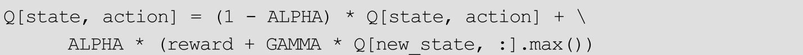
回忆一下，Q（state，action）表示在状态state下执行action后期望得到的奖励。实际上，执行action后状态由state变成了new_state，并且得到了奖励reward。Q learning算法用reward+GAMMAQ[new_state，：].max（）来近似期望得到的奖励。其中，reward为执行action后本来可以得到的奖励，而Q[new_state，：].max（）是在新状态new_state下可以得到的最大期望奖励。由于 Q[new_state，：].max（）是下一个时间点的值，因此还要乘以一个衰减系数GAMMA。最后，一般不直接用reward+GAMMAQ[new_state，：].max（）更新Q（state，action），而是设置一个学习率ALPHA，用（1-ALPHA）Q（state，action）+ALPHA（reward+GAMMA*Q[new_state，：].max（））来更新Q（state，action），这样的话更新比较平缓，防止模型过早收敛到局部极小值。这是Q Learning更新Q函数的方法。
18.2.4 ∈-greedy策略
在Q Learning的更新过程中，每一步都要根据当前的state以及Q函数确定一个合适的行动action。这里有一个如何平衡“经验”和“探索”的问题。如果完全按照经验行动，即每次都在 Q（state，：）中选择对应值最大的action，那么很有可能一直局限在已有经验中，难以发现更具价值的新的行为。但如果智能体只专注于探索新的行为，即完全随机地行动，又可能因为大多数行动都没有价值，导致学习Q函数的速度很慢。
一种比较简单的平衡“经验”和“探索”的方法是采用∈-greedy策略选择合适的行动。事先设置一个较小的∈值（如∈=0.1），智能体有1-∈的概率根据学习到的 Q
函数（已有经验）行动，剩下∈的概率智能体会随机行动，用于探索新的经验。例如，∈=0.1时，在90%的情况下，智能体直接选择使得Q（state，action）最大的action，剩下10%的情况，随机选择一个action。
18.2.5 简单的Q Learning示例
在q_learning.py中，实现了基本的Q Learning算法，用于解决在第18.1节中提到的“走迷宫”问题。
初始的地图为：

其中，A表示智能体初始的位置，O表示宝藏的位置。使用下面的命令运行：
屏幕上会不断打出智能体在图上探索的过程。在程序中，智能体一共会玩200次这个游戏（对应的语句是for i in range（200）：），每一次最多走30步（对应的语句是MAX_STEP=30）。每次游戏结束，屏幕上都会打印出这轮游戏中智能体走的步数以及获得的奖励。
由于q_learning.py会不断刷新输出，不太适合观察，因此又提供了一个q_learning_reprint.py。q_learning_reprint.py和q_learning.py在算法部分是完全一样的，只是使用reprint库代替了print函数，更便于观察结果。
要运行q_learning_reprint.py，首先要安装reprint库：
然后运行：
可以看到，由于一开始 Q 函数没有学习到任何内容，智能体只会随机性地行动。随着游戏轮数的增加，智能体不停地获得宝藏的奖励，因此 Q函数会得到更新。最后，当游戏进行到 30 轮后，智能体基本都会“直奔宝藏而去”，在比较短的步数内得到奖励。
18.2.6 更复杂的情况
在第18.2.5节的程序中，只考虑了最简单的“迷宫”：

这个地图中元素很少，只有空格和宝藏，因此非常简单，现在考虑更复杂的一种地图：
在这个地图中，用符号“x”来表示陷阱，智能体碰到陷阱后会得到惩罚，即获得负数的奖励。在程序中设定这个数值为-5。如果需要获得宝藏，智能体有两种选择：一种是直接穿过陷阱，一种是选择绕路。
在env.py中，修改地图对应的代码为：
再次运行q_learning_reprint.py：
随着程序的进行，一开始智能体会随机地行走，当它成功地通过“绕路”获得宝藏后，Q 函数会得到更新。当游戏轮数到 50 次之后，智能体成功通过Q Learning学会了“绕路”获得宝藏。
18.3 总结
在本章中，首先介绍了强化学习中的一些基本概念，接着通过一个简单的小例子，学习了Q Learning算法的原理和实现。Q Learning是强化学习中一个比较基础的方法，在下一章中，会通过同样的例子，再介绍一个和 Q Learning极为相似的强化学习算法：SARSA算法。
第19章 强化学习入门之SARSA算法
SARSA（State-Action-Reward-State-Action）算法同样是一种基本的强化学习的算法。它同Q Learning一样，都是在智能体行动过程中迭代式地学习Q函数，但是SARSA算法采取了和Q Learning不同的迭代更新策略。本章将通过修改上一章的程序来实现SARSA算法。
19.1 SARSA 算法的原理
19.1.1 通过与Q Learning对比学习SARSA算法
在学习SARSA算法之前，先来复习Q Learning算法。Q Learning算法首先会定义一个Q（state，action）函数，然后使用下面的程序来更新Q函数：
Q Learning算法每次更新Q函数的步骤为：（1）使用∈-greedy或其他方法选出一个action；（2）智能体采取动作action，得到奖励reward和新的状态new_state；（3）用reward+GAMMAQ[new_state，：].max（）来更新Q[state，action]。更新时会设定一个学习率ALPHA，即使用（1-ALPHA）Q[state，action]+ALPHA（reward+GAMMAQ[new_state，：].max（））来进行迭代。
只需要对Q Learning算法做简单修改，可以得到SARSA算法的实现：
SARSA 算法的更新步骤为：（1）记录当前的 state；（2）执行上一步选定好的action，得到奖励reward和新的状态new_state；（3）在new_state下，根据当前的 Q 函数，选定要执行的步骤 new_action；（4）用值 reward+GAMMAQ[new_state，new_action]来更新Q[state，action]。和Q Learning算法一样，在这里同样也存在一个学习率ALPHA。真正替换掉Q[state，action]的值为（1-ALPHA）Q[state，action]+ALPHA（reward+GAMMAQ[new_state，new_action]）；（5）action=new_action。这个动作将会在下一个循环中被执行。
回顾一下SARSA算法的过程，智能体从一个状态（state，用S表示）出发，执行一个动作（action，用A表示），得到奖励（reward，用R表示）和新的状态（S），在新的状态下又会选择一个新的动作（A），通过新的状态和新的动作来更新Q函数。S-A-
R-S-A，这是SARSA算法名字的由来。
19.1.2 off-policy与on-policy
强化学习中的方法可以分为off-policy和on-policy两类。Q Learning算法是一个经典的 off-policy 方法，而本章介绍的 SARSA 算法则是 on-policy方法。那么，如何理解这里的off-policy和on-policy呢？
在 Q Learning 中，Q 函数的更新和 Q[new_state，：].max（）有关。在Q[new_state，：]中选出使得Q函数最大的动作，以此来更新Q函数。设这个动作为max_action。注意，
智能体实际有可能并不会执行 max_action 。 因为在下一个过程中是根据 epsilon-greedy 方法来选择策略的，有可能选择max_action，也有可能并不会选到max_action。
而SARSA算法则不同，它用Q[new_state，new_action]结合奖励等信息更新Q函数。之后，在下一次循环时， 智能体必然会执行
new_action 。
说Q Learning是一种off-policy算法，是指它在更新Q函数时使用的动作（max_action）可能并不会被智能体用到。又称 SARSA 是一种 on-policy方法，是指它在更新 Q 函数时使用的动作（new_action）一定会被智能体所采用。这也是on-policy方法和off-
policy方法的主要区别。
19.2 SARSA 算法的实现
提供了一个SARSA算法的实现，该实现一共由三个文件组成：env.py、sarsa.py和sarsa_reprint.py。它们是从上一章的Q Learning的代码简单修改得到的。读者可以对比本章的代码和Q Learning的代码，体会SARSA算法和Q Learning的异同。在三个代码文件中，env.py和之前完全一样，未做任何修改。sarsa.py和sarsa_reprint.py是从q_learning.py和q_learning_reprint.py修改而来。sarsa.py 中只使用了 Python 中自带的 print 函数打印结果，而sarsa_reprint.py中使用reprint库来输出结果，更便于观察。建议利用sarsa.py学习SARSA算法的原理，运行sarsa_reprint.py来观察算法的输出结果。
要运行sarsa_reprint.py，首先要确保已经装好了reprint库，如果没有安装可以通过下列命令安装：
运行sarsa_reprint.py：
当使用如下所示的最简单的“迷宫地图”时，和Q Learning算法一样，当经过20～30次游戏后，智能体可以学会如何取得“宝藏”。
但是，当使用下面的带有“陷阱”的“迷宫地图”时（智能体走到陷阱会获得-5 的奖励），SARSA算法却无法找出正确的获得“宝藏”的方法。
其实，相比Q Learning算法，SARSA算法更加地“胆小”。Q Learning算法会使用Q[new_state，：].max（）来更新 Q值，换句话说，它考虑的是新状态下可以获得的最大奖励，而不去考虑新状态会带来的风险。因此，Q Learning算法会更加的激进。相比之下，SARSA算法只是使用Q[new_state，new_action]来更新Q值。在此处的迷宫问题中，SARSA算法会考虑到接近陷阱可能带来的负收益，因此更倾向于待在原地不动，从而更加难以找到“宝藏”。根据它们的特性，在实际应用中，Q Learning和SARSA算法各有各的适用场景。
19.3 总结
在本章中，以Q Learning为切入点，介绍了强化学习的另一种基础算法：SARSA，同时还对比了它们的异同。SARSA 算法的实现同样可以类比 Q Learning的实现。读者可以对比这两种基础算法的原理和实现，来巩固自己的理解。
第20章 深度强化学习：Deep Q Learning
在前面的章节中，学习了强化学习的两个基础算法：Q Learning 和SARSA。本章将介绍Q Learning的升级版：Deep Q Network，简称DQN。DQN算法采用深度神经网络来表示Q函数，通常也被称为Deep Q Learning，即“深度 Q Learning算法”。在这一章中，会先介绍 DQN算法的原理，再来介绍DQN算法的TensorFlow实现。
20.1 DQN算法的原理
20.1.1 问题简介
DQN算法是在论文Playing Atari with Deep Reinforcement Learning中提出的。这篇论文实际解决的问题是：用强化学习来玩雅达利（Atari）游戏机上的像素游戏。
雅达利是 20 世纪的一家电子游戏机公司，它制作、发行过很多款电子游戏机以及电子游戏。其中，在1977年9月发行的雅达利2600游戏机最为出名。图20-1展示了雅达利2600游戏机上的五款游戏，从左到右依次是Pong、Breakout、Space Invaders、Seaquest、Beam Rider。
图20-1 雅达利2600中上的五款游戏
以左数第二款游戏Breakout为例，它实际是熟悉的“打砖块”。如图20-2所示在游戏开始时，画面顶部会显示8排砖块。玩家必须控制底部的一个平台来反弹小球，小球接触到砖块后会“打掉砖块”并反弹回来，此时玩家会得到相应的分数。如果玩家没有接住小球，会输掉一个回合。在输掉三个回合后，游戏会结束。

图20-2 “打砖块”游戏
DQN 要解决的问题是：如何从原始的游戏画面出发，通过强化学习自动学出玩游戏的方法。
在这个过程中，除了游戏画面之外，算法唯一能接收到的额外信息是游戏的奖励，即强化学习中的 Reward，对于其他的信息，如小球运动的方向、速度、平台的位置，算法是无法直接获取到的。
20.1.2 Deep Q Network
Q Learning算法以Q（state，action）来表示Q函数，训练时，用reward+GAMMA*Q[new_state，：].max（）来更新Q函数（这是没有加入学习率ALPHA的形式）。在这个过程中，实际是用“一张表格”来表示Q函数的。表格的每一行是一种状态，每一列是一种动作。由于 Q 函数只是一张表格，因此状态和状态之间相互独立，没有联系。
在Atari游戏中，再用“表格”来表示Q函数不是很合适了。原因在于Atari的游戏画面为210×160的RGB图像，假设用一帧图像表示一个状态，算在每个像素位置只用0和1来表示，产生的状态也会高达2^（210×160）种，这意味着Q函数对应的表格有2^（210×160）行，根本无法储存下来，也无法进行训练。
DQN 算法用一个深度卷积神经网络来表示 Q 函数。
它的输入是状态s，输出是每个动作对应的Q函数值。假设一共有4种动作，用0，1，2，3来表示，那么神经网络的输出是Q（s，0），Q（s，1），Q（s，2），Q（s，3）。这个神经网络叫Deep Q Network。
DQN 的输入状态 s 一般不是单帧游戏画面，而是多帧游戏画面。这也很好理解：如在打砖块游戏中，如果只输入单帧的画面，算法是无法得知小球的运动方向和速度的（因为只有一帧静止图片），也无法做出合理的决策，因此使用多帧画面作为输入。单帧的Atari游戏画面是一个210×160的RGB图像，在论文中，会首先将其灰度化，再缩小、裁剪到84×84的尺寸，输入网络的是4帧图像，即一个84×84×4的张量。图20-3展示了论文中使用的DQN的网络结构。

图20-3 DQN网络的结构
20.1.3 训练方法
有了Deep Q Network后，剩下的问题变成了：如何训练这个神经网络？在 DQN 算法中，原作者提出了一种经验回放机制（experience replay mechanism），用来产生神经网络的训练样本。
智能体首先会尝试玩游戏，在此过程中累积经验，形成一个“经验池”。用D={e1 ，e2 ，…，eN }来表示经验池，其中et =（st ，at ，rt
，st+1 ）。st 是在t时刻的状态（即前文所述的连续 4 帧画面，一个 84×84×4的张量），at 为在t时刻采取的行动，rt 为获得的奖励（得分），st+1 是下一个时刻的状态，即新观察到的连续4帧画面。
每步训练，都在经验池中选取batch size个et 作为训练样本。每个样本对应的训练目标（即 Deep Q Network 的输出）和 Q Learning 一样，都是rt +γma a′ x Q（st+1 ，a′）。
训练若干步后，得到了一个新的Q Network。利用它再来玩游戏，这又会得到一系列et ，将得到的et 加入经验池中用于训练，依此类推。
DQN算法对应的伪代码为：
20.2 在TensorFlow中运行DQN算法
提供了一个TensorFlow版本的DQN实现[1]
。本节会介绍如何使用该代码训练智能体玩雅达利游戏（以打砖块为例）。
20.2.1 安装依赖库
该TensorFlow实现依赖三个外部包：gym、scipy和tqdm。使用下面的命令来安装这些依赖库：
其中，scipy是常用的科学计算库，tqdm则用于显示进度条。而gym是OpenAI 公司提供的一套用于开发强化学习算法的工具库，则提供了强化学习中所需的环境。例如，如果要开发一个针对雅达利游戏的强化学习算法，必须要获取到游戏画面、游戏中的奖励。gym 为提供好了一套易用的接口，可以获得环境信息，以及方便智能体与环境进行交互。这样，开发者只需要把精力放在算法开发上，而不需要去实现一个游戏环境。截止目前，gym支持包含雅达利游戏、棋盘游戏（如围棋）、控制类游戏、文字游戏、Minecraft、Doom在内的多种形式的环境，提供统一的 Python 接口，与 TensorFlow 等主流深度学习框架兼容。
读者可以在地址https：//gym.openai.com/envs 中查看gym支持的所有环境。本节主要关注如图 20-4 所示的雅达利游戏环境（https：//gym.openai.com/envs＃atari）。以其中的Breakout-v0环境为示例，使用DQN算法训练一个智能体。
图20-4 Gym提供的雅达利环境
20.2.2 训练
使用DQN算法进行训练的对应命令为（使用GPU）：
也可以在CPU上训练：
main.py是入口程序。如果设定—use_gpu=True，会使用GPU进行训练，而—use_GPU=False，则会使用CPU进行训练。
--network_header_type=nips表示使用在第20.1.2节描述的DQN网络。这是由于 Playing Atari with Deep Reinforcement Learning 是首先发表在NIPS会议上的，所以使用标签nips与其对应。除了nips之外，还可以设定—
network_header_type=nature，此时会使用论文Human-Level Control through Deep Reinforcement Learning中描述的DQN结构，与—network_header_type=nips对应的网络结构只有细微的不同。
--env_name=Breakout-v0是训练的gym环境，所有雅达利游戏的gym环境可以在网址https：//gym.openai.com/envs＃atari上找到。
开始训练后，屏幕上会显示如图 20-5 所示的进度条，它指示了训练进度、训练时间和训练的速度。
图20-5 训练进度条
中间模型会保存在 checkpoints 文件夹下。程序会自动根据当前的参数生成保存路径。如默认的保存路径为：
events 文件会写到 logs 文件夹中，同 checkpoints 文件一样，程序同样会根据当前参数生成对应的保存路径。不过，如果要打开 TensorBoard，并不需要指定如此复杂的路径，只需指定logs文件夹即可：
20.2.3 测试
既可以在模型全部训练完成后进行测试，也可以在训练过程中测试中途保存的模型。对应的指令如下：
训练和测试时使用的参数必须完全相同。例如，如果在训练时指定的是—use_gpu=True，那么在测试时也必须使用—
use_gpu=True；如果在训练时指定的是—use_gpu=False，则在测试时也必须使用—
use_gpu=False。程序会根据参数自动在checkpoints文件夹中寻找对应的模型文件。
执行上述指令后，程序会利用当前最新的checkpoints来玩相应的游戏。屏幕上的信息如图20-6所示。Best reward是当前有记录的最佳奖励。10000是测试时的最大步数（该参数可调，请参考main.py源码）。
图20-6 包含最佳奖励、最大步数、测试速度等的屏幕信息
更有趣的是，加入—display=True后，还可以在屏幕上显示游戏进程：
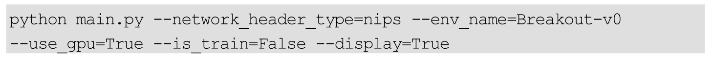
程序会根据已学习的 Q 函数来玩游戏，实时的游戏画面会在一个小窗口显示，如图20-7所示。
如果读者是通过ssh远程连接服务器运行的，直接使用—display=True会报错，原因在于此时无法显示游戏窗口。在使用—display=True 选项前，请确保当前环境可以弹出GUI窗口。
图20-7 训练DQN模型玩“打砖块”游戏（详见彩插）
20.3 在TensorFlow中DQN算法的实现分析
上一节主要介绍了代码的使用，本节将简要分析代码的结构。
首先从一个比较简单的类 History 看起，对应的源文件是agents/history.py。History类的主要功能是记录历史上的游戏画面，代码如下：
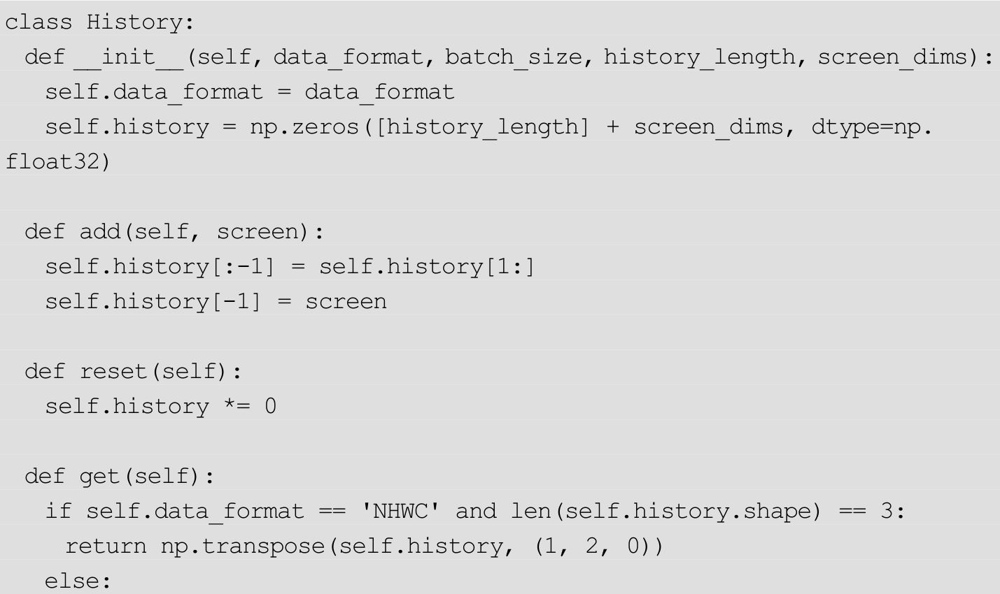
self.history一共可以存储history_length张图片，一张图片代表一个历史上的游戏画面。调用这里的add方法，可以向self.history添加一张图片，同时最老的一张图片将会被丢弃。调用get方法可以获得所有存储起来的历史图片。在程序中，通过History类来获取连续的几帧图片，作为当前的状态st。
游戏的画面如何获取？程序中定义了Environment类，用于使用gym库获取游戏画面并和游戏交互。相应的代码在environments/environment.py中。如AtariEnvironment代表了雅达利游戏的环境，它是Environment类的一个子类。Environment类拥有一个step方法，step方法的输入是要执行的动作，输出是执行动作后得到的奖励和相应的游戏画面。
Experience类实现了在第20.1.3节中提到的“经验池”机制。对应的代码在agents/experience.py中。来看它的add方法，其功能是向经验池添加一个样本：
从这段代码中可以看出，经验池中的一个样本包含四个部分：observation、reward、action、terminal。terminal的含义是游戏是否终止。observation、reward、action分别对应st
、rt 、at 。与第20.1.3节对比，一个样本貌似还缺乏一个st+1 。其实，Experience类会按照顺序保存游戏中的画面，所以下一个状态st+1 可以通过当前样本的 index 加 1 得到，详细的代码请参考 Experience 类的sample方法。
最后，训练的过程在agents/agent.py中，由Agent类的train方法定义，相应的代码注释如下：

20.4 总结
在本章中，首先介绍了DQN算法的原理，DQN算法可以直接从雅达利游戏图像出发，通过强化学习来学习出合理的游戏策略。接着，介绍了DQN算法在 TensorFlow 下的实现，并简要讲解了它的大致结构。希望读者可以通过本章的内容初步掌握DQN算法的原理和实现。
拓展阅读
本章主要介绍了深度强化学习算法 DQN，关于该算法的更多细节，可以参考论文Playing Atari with Deep Reinforcement Learning。
本章还介绍了 OpenAI的 gym库，它可以为我们提供常用的强化学习环境。读者可以参考它的文档 https：//gym.openai.com/docs/了解gym 库的使用细节，此外还可以在 https：//gym.openai.com/envs/看到当前Gym库支持的所有环境。
[1]
项目源码来自https：//github.com/carpedm20/deep-rl-tensorflow。
第21章 策略梯度算法
不管是Q Learning算法、SARSA算法，还是Deep Q Learning，它们本质上都是学习一个价值函数Q（state，action）。在环境中决策时，需要首先确定当前的状态，然后根据Q（state，action）选择一个价值比较高的动作执行。本章要讲的策略梯度（Policy Gradient）方法和以上做法不同，它不再去学习价值函数Q，而是直接通过模型（如神经网络）输出需要采取的动作。在本章中，会先介绍策略梯度算法的原理，然后介绍如何使用 TensorFlow 实现它。
21.1 策略梯度算法的原理
21.1.1 Cartpole游戏
为了更方便地介绍策略梯度算法，先来介绍一个小游戏：Cartpole。如图21-1所示，游戏中主要有两个物体，在地面上运行的平台（Cart）和连接在平台上的杆（Pole）。在每个时刻，可以控制平台向左移动或是向右移动。游戏的目的是通过合理移动平台让杆保持竖直状态。若是杆倾斜超过一定角度，那么游戏会自动结束。只要游戏没有结束（即杆未倾倒），玩家会在每个时刻得到奖励。
简单来说，是要控制平台让杆处于竖直位置尽可能长的时间，时间越长奖励越多。
图21-1 Cartpole游戏
OpenAI开源的Gym[1]
为提供了Cartpole环境，名为Cartpole-v0[2]
。在Cartpole-v0环境中，状态、动作、奖励、游戏终止条件为：
●状态：用一个4维的向量表示当前的状态，这个4维向量代表平台的坐标和杆的坐标。
●动作：在每个时刻，需要从两个动作中选择一个执行：向左移动或向右移动。
●奖励：当游戏进行时，每个时刻获得+1 的奖励。
●游戏终止条件：如果杆倾斜超过 15°或者平台移动超出边缘，游戏会自动结束。
21.1.2 策略网络
在 Deep Q Learning 中，主要是训练一个 Deep Q Network。Deep Q Network的输入是当前的状态state，输出该状态下各个动作的期望奖励，即Q（state，action1），Q（state，action2），Q（state，action3）等。
与DQN不同，策略梯度算法主要是训练一个策略网络（Policy Network）。这个网络的输入还是当前的状态state，而输出是当前应当采取的动作。输出有两种表达方法：
●输出动作本身。
●输出采取某个动作的概率。
如果用s表示当前的状态，π表示策略网络，那么前者可以表示为a=π（s），后者可以表示为p（a|s）=π（s）。
在Cartpole问题中，采取后一种表达方法，让π（s）表示“向右移动的概率”。一旦策略网络训练完成后，可以根据每个时刻的π（s）的值来选择适合采取的动作了。例如，在某个s0 状态下π（s0 ）=0.9，那么此时有90%的概率选择向右移动，剩下10%的概率选择向左移动。
21.1.3 训练策略网络
策略网络的定义应该是比较简单的，更重要的问题时：如何训练策略网络？
假如有合适的“训练样本”，那么训练策略网络将会变得非常简单。例如，若事先知道在si 状态下正确的动作是ai ，那么策略网络的输出π（si ）=p（ai
|si ）理应很大。此时应当根据梯度下降法极大化 p（ai |si ）的值，当下一次再观察到状态si 时，智能体做出正确动作ai 的概率会变大。在实践中，一般使用交叉熵损失，即 ，通过极小化这个损失L的值来训练网络。
但问题是，并不知道si 状态对应的正确动作，只知道在si 状态采取了ai 的动作（注意，ai 只是采取的动作，而不一定是正确的动作），并获得了ri 的奖励。在训练策略网络时，需要为每个ai 指定一个值Ai ，这个Ai 一般称为Advantage。当Ai ＞0时，表示动作ai 是一个“正确的动作”，相反，Ai ＜0表示动作ai 是一个“错误的动作”。Ai 越大表示对应的动作越正确，带来的价值越高，相反，Ai 越小说明动作带来的负面效果越多。在梯度下降法中，极大化Ai ln p（ai |si ）的值。这样，当Ai ＞0时，相当于在调整网络使p（ai |si
）变大，下次在si 状态采取动作ai 的概率会变大；当Ai ＜0时，相当于在调整网络使p（ai |si ）变小，下次在si 状态采取动作ai 的概率会变小。
为动作分配Ai 的方法有多种。例如，当一局游戏有输赢时，可以将赢的游戏中所有的动作都标记为 Ai =1，将输的游戏中所有的动作都标记为Ai =-1。更常用的方法是采用期望奖励的方法来标记Ai ，即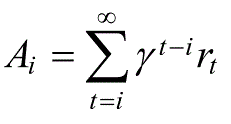 ，其中γ为“折扣因子”。在 Cartpole 游戏中，采用这种方法。由于 Cartpole游戏中每个时刻奖励都是 1，所以实际上
，其中T为游戏结束的时间。显然，如果一个动作会导致游戏过早结束，会得到很低的Ai ，如果一个动作可以让游戏进行比较长的时间，会得到较大的Ai 。
在实践中，往往希望损失是“越小越好”，所以对Ai ln p（ai |si ）取负号，最终的损失函数记为
。对比 ，只是在式子中添加了Ai ，达到了训练策略网络的目的。
21.2 在TensorFlow中实现策略梯度算法[3]
在本节中，将介绍如何在TensorFlow中实现策略梯度算法，解决Cartpole问题。对应的程序为cartpole_pd.py。这个程序大体分为三个部分：初始化、定义策略网络、训练策略网络三部分，下面分别进行讲解。
21.2.1 初始化
初始化的代码如下：
在这段代码中，先导入了一些需要的包，然后初始化了环境，并定义了一些参数。env是用Gym包定义的Cartpole游戏环境。参数D=4，H=10规定了使用的神经网络的结构。对于Gym中的Cartpole游戏，状态是由4个数组成的，因此D=4表示输入层的维数。H=10表示隐层的维数。输出层只有一个数，表示向右移动的概率。batch_size、learning_rate、gamma是其他几个超参数。此处的batch_size=5表示一个batch中包含5局游戏，换句话说，每玩5局游戏去更新一遍神经网络。learning_rate是学习率，gamma是计算期望奖励时对未来的折扣率。
21.2.2 定义策略网络
定义策略网络的代码如下。
obervations是输入层，它的形状为（None，D），其中None表示任意数目。layer1 是隐藏层的值，probablity 是最后输出的概率，它是对 score 计算Sigmoid函数后得到的，因此值一定在0～1之间。
再看损失 loss 的定义。input_y 是实际采取的动作，advantages 是在第21.1.3节中所说的Ai。input_y只可能有两个值：0或1。当input_y为0时，对应的动作是“向右移动”，最终的损失是-
tf.reduce_mean（advantagestf.log（probability）），这与第 21.1.3 节中的损失是相符的。因为网络的输出probability也同样表示“向右移动”。当input_y为1时，对应的动作是向左移动，因此，必须用向左移动的概率1-probability计算损失，最终的损失是-
tf.reduce_mean（advantagestf.log（1-probability））。读者可以将input_y的值带入程序来验证此处的式子。
最后，针对损失loss，定义了一个Adam优化器，用于计算梯度。会把梯度先保存起来，然后传给batchGrad这个placeholder，最后统一使用一个updataGrads操作来执行应用梯度的操作。
21.2.3 训练
首先是训练的初始化工作：
用tf.Session（） as sess开启了一个Session，下面所有的训练工作都是在这个 Session中进行的。上面的代码只是执行了一些初始化的工作，如变量的初始化（sess.run（init）），获得第一个观察量（observation=env.reset（）），以及清空gradBuffer（gradBuffer[ix]=grad*0）等，其中gradBuffer是保存梯度的缓冲变量。
请注意，下面的代码都是在语句tf.Session（） as sess：中进行的，为了讲述方便，在书中会分段给出代码，这可能会造成 Python 代码中缩进不好对齐的问题。读者可以参考cartpole_pg.py文件来查看完整的代码。
在训练时，首先会使用当前的决策网络去“玩游戏”，每一步的游戏交互如下：

x 是从当前环境中观察到的状态，将之输入神经网络后，会得到输出tfprob，这个输出代表当前决策网络认为应当向右移动的概率。根据此概率会选出一个 action，action=1 时代表向右走，action=0 时代表向左移动。通过env.step（action）与Gym环境交互，并获得新的状态和奖励。
在训练过程中，每一步的状态、动作和奖励都会被记录下来，对应的变量名为xs、ys和drs。需要注意的是，ys虽然记录了动作，但是值是和action相反的。如果action=1，对应的y是0；如果action=0，对应的y是1。这里的y实际上对应着在第21.2.2节中所说的input_y。
每当一局游戏结束（一局游戏可能有很多步交互），根据这局游戏中的奖励来计算梯度并保存：
训练数据的epx和epy只是将记录的xs和ys从列表变成了Numpy数组的形式。对于epr，先通过discount_rewards函数对它计算折扣，得到期望奖励discounted_epr，再对它做归一化，是训练时使用的advantages。计算得到的梯度会累加在gradBuffer中。
每玩 batch_size 局游戏（默认情况下为 5 局游戏），会将保存的梯度应用到网络中，并打印一些信息：
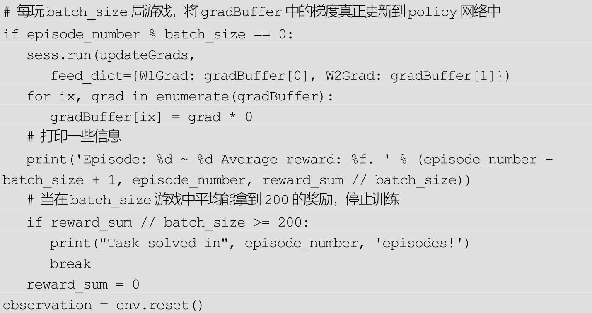
使用命令python catpole_pg.py可以运行该程序。如果没有安装Gym，可以事先用pip install gym安装。
程序的最终目标是拿到200分。在此之前，如果在一个batch中平均得分达到了 180 分，会在屏幕上显示一个窗口，表示当前的游戏过程，如图21-2所示。
图21-2 训练策略梯度模型解决Cart Pole问题（详见彩插）
当在一个batch内算法都达到200分后，训练会自动退出，此时屏幕的输出为：
21.3 总结
在本章中，主要讲解了策略梯度算法。策略梯度算法与之前所讲的 Q Learning、SARSA、DQN 都不同，它并不学习 Q（s，a）函数，而是直接基于策略进行优化。本章首先对比 Q Learning，叙述了策略梯度的原理。接着，详细讲述了如何在TensorFlow中实现策略梯度算法，并解决了Gym环境中的Cartpole问题。
拓展阅读
本章主要介绍的是Policy Gradient算法，关于该算法的更多细节，可以参考论文 Policy Gradient Methods for Reinforcement Learning with Function Approximation。
除了几种最基础的强化学习方法：Q Learning、SARSA、DQN 和Policy Gradient之外，还有一些常用的强化学习方法，读者可以参阅以下论文了解其细节：Continuous control with deep reinforcement learning（DDPG算法）、Asynchronous Methods for Deep Reinforcement Learning（A3C算法）、Proximal Policy Optimization Algorithms（PPO算法）等。
[1] 请参考本书第20.2.1节。
[2] 请参考https：//gym.openai.com/envs/CartPole-v0。
[3] 本节的程序参考了https：//github.com/ashutoshkrjha/Cartpole-OpenAI-Tensorflow，并做了适当修改。